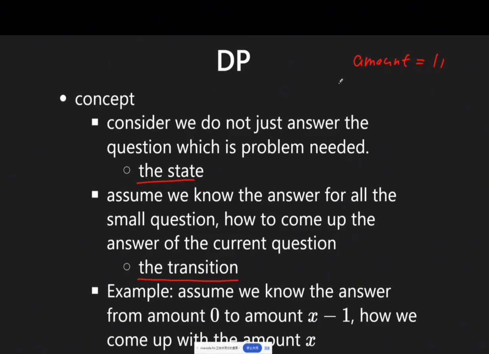

Dp
Last updated: May 1, 2026Table of Contents
- Overview
- Key Properties
- Core Characteristics
- Step
- References
- Problem Categories
- Category 1: Linear DP
- Category 2: Grid/2D DP
- Category 3: Interval DP
- Category 3-2: Game Theory / Minimax DP
- Category 4: Tree DP
- Category 5: State Machine DP
- Category 6: Knapsack DP
- Category 7: String DP
- Category 8: State Compression DP
- Templates & Algorithms
- Template Comparison Table
- Universal DP Template
- Template 1: 1D Linear DP
- 1D DP: Array Sizing and Loop Bounds (n vs n+1)
- Template 2: 2D Grid DP
- Template 3: Interval DP
- Template 3-2: Classic Interval DP Pattern (LC 312 Burst Balloons Style)
- Template 3-3: Backward-i + Forward-j Loop Order (Palindrome/Substring DP)
- Template 4: 0/1 Knapsack
- Template 5: State Machine DP
- Template 5-2: State Machine DP with Cooldown (LC 309 Pattern)
- Template 6: Top-Down Memoization
- Template 6-1: DFS + Memoization Pattern (Graph/Sequence Chaining)
- Template 7: String DP (Edit Distance / Levenshtein Distance)
- Template 8: Longest Common Subsequence (LCS)
- Template 9: State Compression (Bitmask DP)
- Template 10: Palindrome DP
- Template 11: Fibonacci-like Patterns
- Comprehensive Pattern Analysis
- 1D DP Patterns
- 2D DP Patterns
- Knapsack Patterns
- Critical Pattern: Loop Order in Unbounded Knapsack (Combinations vs Permutations)
- Deep Dive: 0/1 Knapsack & Subset Sum Pattern 🎒
- Critical Pattern: Understanding if (i - coin >= 0) in Coin Change DP
- String DP Patterns
- Deep Dive: The Prefix-Based Indexing Pattern (LCS & Variants) 🔍
- Interleaving String Pattern (LC 97) 🧩
- Classic String DP Patterns (Detailed)
- Valid Parenthesis String Pattern (LC 678) 🌟
- State Compression Patterns
- Advanced DP Patterns
- Template 12-0: Game Theory / Minimax DP (LC 486 Predict the Winner Style)
- Template 12: Digit DP (Counting Numbers with Constraints)
- Problems by Pattern
- Linear DP Problems
- 2D Grid Problems
- Interval DP Problems
- Game Theory / Minimax DP Problems
- Knapsack Problems
- State Machine Problems
- LC Examples
- 2-1) Unique Paths (LC 62) — Grid DP Count Paths
- 2-2) Maximum Product Subarray (LC 152) — Track Min/Max Product
- 2-3) Best Time to Buy and Sell Stock with Transaction Fee (LC 714) — Two-State DP
- 2-4) Best Time to Buy and Sell Stock with Cooldown (LC 309) — Three-State DP
- 2-5) N-th Tribonacci Number (LC 1137) — Rolling Three Variables
- 2-6) Decode Ways (LC 91) — Linear DP with One/Two Digit Check
- 2-7) Longest Increasing Subsequence (LC 300) — LIS Binary Search / DP
- 2-8) Sum of Distances in Tree (LC 834) — Re-rooting DP
- 2-6) Perfect Squares (LC 279) — Unbounded Knapsack (Min Count)
- 2-7) Integer Break (LC 343) — Linear DP (Break vs No-Break)
- Decision Framework
- Pattern Selection Strategy
- When to Use DP vs Other Approaches
- Summary & Quick Reference
- Complexity Quick Reference
- State Definition Guidelines
- Common Recurrence Relations
- Problem-Solving Steps
- Common Mistakes & Tips
- Space Optimization Techniques
- Interview Tips
- State Machine DP Interview Pattern Recognition
- Related Topics
- Quick Decision Tree: Which DP Pattern to Use?
- Decision Flowchart
- Quick Pattern Selection Table
- Recognition Patterns by Keywords
- Quick Decision Examples
- Pro Tips for Pattern Selection
- Common Pitfalls
- Category 9: Monotonic Stack + DP
- Pattern Overview
- Template: LC 2289 — Steps to Make Array Non-Decreasing
- Key Insights
- Similar LeetCode Problems
- Maximal Square / Count Squares Pattern (LC 1277, LC 221) 🟦
Dynamic Programming (DP)
Overview
Dynamic Programming is an algorithmic paradigm that solves complex problems by breaking them down into simpler subproblems and storing their solutions to avoid redundant computations.
Key Properties
- Time Complexity: Problem-specific, typically O(n²) or O(n³)
- Space Complexity: O(n) to O(n²) for memoization table
- Core Idea: Trade space for time by memoizing overlapping subproblems
- When to Use: Problems with optimal substructure and overlapping subproblems
- Key Techniques: Memoization (top-down) and Tabulation (bottom-up)
Core Characteristics
-
Optimal Substructure: Optimal solution contains optimal solutions to subproblems
-
Overlapping Subproblems: Same subproblems solved multiple times
-
Memoization: Store results to avoid recomputation
-
State Transition: Define relationship between states
-
Core var:
state,transition -
NOTE !!! can put
everythingintostate

Step
Step 1. define dp def
Step 2. define dp eq
Step 3. check boundaru condition, req, edge case
Step 4. get the result
References
Problem Categories
Category 1: Linear DP
- Description: Single sequence problems with linear dependencies
- Examples: LC 70 (Climbing Stairs), LC 198 (House Robber), LC 300 (LIS)
- Pattern: dp[i] depends on dp[i-1], dp[i-2], etc.
Category 2: Grid/2D DP
- Description: Problems on 2D grids or matrices
- Examples: LC 62 (Unique Paths), LC 64 (Minimum Path Sum), LC 221 (Maximal Square)
- Pattern: dp[i][j] depends on neighbors
Category 3: Interval DP
- Description: Problems on intervals or subarrays
- Examples: LC 312 (Burst Balloons), LC 1000 (Minimum Cost to Merge Stones)
- Pattern: dp[i][j] for interval [i, j]
Category 3-2: Game Theory / Minimax DP
- Description: Two-player optimal play on arrays; each player picks from either end
- Examples: LC 486 (Predict the Winner), LC 877 (Stone Game), LC 1140 (Stone Game II)
- Pattern: dp[i][j] = max relative score difference (current player minus opponent) on subarray nums[i…j]
- Core idea: When the current player picks, the opponent then plays optimally on the remaining subarray. Subtracting
dp[sub]flips perspective — the opponent’s best becomes your loss. - Recurrence:
dp[i][j] = max(nums[i] - dp[i+1][j], nums[j] - dp[i][j-1]) - Base case:
dp[i][i] = nums[i](only one element left, take it) - Answer:
dp[0][n-1] >= 0means the first player wins or ties
Category 4: Tree DP
- Description: DP on tree structures
- Examples: LC 337 (House Robber III), LC 968 (Binary Tree Cameras)
- Pattern: State at each node depends on children
- 📚 Implementation: Tree DP problems use DFS traversal for implementation. See dfs.md Template 6 (Bottom-up DFS) for the DFS traversal patterns used in tree DP solutions
Sub-patterns:
- Bottom-Up Tree DP (standard)
- Post-order DFS: state at each node computed from children
- Examples: LC 337 (House Robber III), LC 968 (Binary Tree Cameras)
- Re-rooting DP (two-pass DFS)
- Compute answer for one root, then shift root to every other node in O(N)
- Pass 1 (Post-order): compute subtree sizes and base answer for root 0
- Pass 2 (Pre-order): re-root from parent to child using mathematical formula
- Examples: LC 834 (Sum of Distances in Tree), LC 2581 (Count Number of Possible Root Nodes)
Category 5: State Machine DP
- Description: Problems with multiple states and transitions
- Examples: LC 714 (Stock with Fee), LC 309 (Stock with Cooldown), LC 122 (Stock II)
- Pattern: Multiple DP arrays for different states
- Key Characteristic: State transitions depend on previous state + action constraints
Sub-patterns:
-
2-State Machine (Buy/Sell without cooldown)
- States:
hold,cash - Example: LC 122 (unlimited transactions)
- States:
-
3-State Machine (Buy/Sell with cooldown) ⭐
- States:
hold,sold,rest - Example: LC 309 (cooldown after sell)
- Key:
reststate prevents immediate buy after sell
- States:
-
Multi-State Machine (Limited transactions)
- States:
buy1,sell1,buy2,sell2, … - Example: LC 123 (at most 2 transactions), LC 188 (at most k transactions)
- States:
Category 6: Knapsack DP
- Description: Selection problems with constraints
- Examples: LC 416 (Partition Equal Subset), LC 494 (Target Sum)
- Pattern: dp[i][j] for items and capacity/target
Category 7: String DP
- Description: String matching, transformation, and subsequence problems
- Examples: LC 72 (Edit Distance), LC 1143 (LCS), LC 5 (Longest Palindromic Substring)
- Pattern: dp[i][j] for positions in two strings
Category 8: State Compression DP
- Description: Use bitmask to represent states, optimize space complexity
- Examples: LC 691 (Stickers to Spell Word), LC 847 (Shortest Path Visiting All Nodes)
- Pattern: dp[mask] where mask represents visited/selected items
Templates & Algorithms
Template Comparison Table
| Template Type | Use Case | State Definition | When to Use |
|---|---|---|---|
| 1D Linear | Single sequence | dp[i] = state at position i | Fibonacci-like problems |
| 2D Grid | Matrix paths | dp[i][j] = state at (i,j) | Path counting, min/max |
| Interval | Subarray/substring | dp[i][j] = [i,j] interval | Palindrome, partition |
| Knapsack | Selection with limit | dp[i][w] = items & weight | 0/1, unbounded selection |
| State Machine | Multiple states | dp[i][state] = at i in state | Buy/sell stocks |
Universal DP Template
def dp_solution(input_data):
# Step 1: Define state
# dp[i] represents...
# Step 2: Initialize base cases
dp = initialize_dp_array()
dp[0] = base_value
# Step 3: State transition
for i in range(1, n):
# Apply recurrence relation
dp[i] = f(dp[i-1], dp[i-2], ...)
# Step 4: Return answer
return dp[n-1]
Template 1: 1D Linear DP
def linear_dp(nums):
"""Classic 1D DP for sequence problems"""
n = len(nums)
if n == 0:
return 0
# State: dp[i] = optimal value at position i
dp = [0] * n
dp[0] = nums[0]
for i in range(1, n):
# Transition: current vs previous
dp[i] = max(dp[i-1], nums[i])
# Or with skip: dp[i] = max(dp[i-1], dp[i-2] + nums[i])
return dp[n-1]
1D DP: Array Sizing and Loop Bounds (n vs n+1)
Key Question: Why do some 1D DP problems loop from 0 to n, while others loop from 0 to n+1?
The difference comes down to what a single index in your DP array represents. Here are the three main reasons:
1. “Indices” vs “Count” (The Offset)
This is the most frequent reason for the difference.
-
Loop to
n(Array size =n): You are treating the index as a specific element in the input arraydp[i]means “the best result using the i-th element”- Example:
dp[3]represents “result at element index 3”
-
Loop to
n+1(Array size =n+1): You are treating the index as a quantity or lengthdp[i]means “the best result using the first i elements”- Example:
dp[3]represents “result using first 3 elements”
Example: LC 198 (House Robber)
# Approach 1: Array size = n (index-based)
def rob_v1(nums):
n = len(nums)
if n == 0: return 0
if n == 1: return nums[0]
dp = [0] * n
dp[0] = nums[0]
dp[1] = max(nums[0], nums[1])
for i in range(2, n): # Loop to n
dp[i] = max(dp[i-1], dp[i-2] + nums[i])
return dp[n-1] # Answer at last index
# Approach 2: Array size = n+1 (count-based)
def rob_v2(nums):
n = len(nums)
dp = [0] * (n + 1) # Extra space for "0 houses"
dp[0] = 0 # Robbing 0 houses = 0
dp[1] = nums[0] if n > 0 else 0
for i in range(2, n + 1): # Loop to n+1
dp[i] = max(dp[i-1], dp[i-2] + nums[i-1]) # Note: nums[i-1]
return dp[n] # Answer at position n
2. Physical “Steps” vs “Goals”
In problems involving movement (stairs, paths), the “goal” is one step past the last index.
Example: LC 70 (Climbing Stairs) / LC 746 (Min Cost Climbing Stairs)
If cost = [10, 15, 20] (indices 0, 1, 2):
- These are the steps you can stand on
- The “Floor” (goal) is at index 3
- Therefore,
dparray needs sizen + 1to include the landing
# LC 746: Min Cost Climbing Stairs
def minCostClimbingStairs(cost):
n = len(cost)
dp = [0] * (n + 1) # Need n+1 for the "top floor"
# You can start from step 0 or step 1
dp[0] = 0
dp[1] = 0
for i in range(2, n + 1): # Loop to n+1
# You can arrive from i-1 or i-2
dp[i] = min(dp[i-1] + cost[i-1], dp[i-2] + cost[i-2])
return dp[n] # The top floor is at position n
3. Handling the “Empty” Base Case
Many DP problems need a base case representing “nothing” (target sum = 0, empty string, etc.).
Examples:
- Knapsack/Coin Change: Need
dp[target + 1]becausedp[0]represents sum = 0 - Longest Common Subsequence: Use
(n+1) x (m+1)matrix where first row/column = empty string
# LC 322: Coin Change
def coinChange(coins, amount):
dp = [float('inf')] * (amount + 1) # Need amount+1
dp[0] = 0 # Base case: 0 coins needed for amount 0
for i in range(1, amount + 1): # Loop to amount+1
for coin in coins:
if i >= coin:
dp[i] = min(dp[i], dp[i - coin] + 1)
return dp[amount] if dp[amount] != float('inf') else -1
Comparison Summary
| Feature | Loop 0 to n |
Loop 0 to n+1 |
|---|---|---|
| Array Size | new int[n] |
new int[n + 1] |
dp[i] meaning |
Result at element i |
Result considering first i items |
| Typical Base Case | dp[0] and dp[1] |
dp[0] is the “empty” state |
| Access Pattern | dp[i] ↔ nums[i] |
dp[i] ↔ nums[i-1] |
| Final Answer | dp[n - 1] |
dp[n] |
| Use Case | Direct element mapping | Count/quantity problems, “goal” beyond array |
Deep Dive: Coin Change Problems (LC 322 vs LC 518) - DP Array Sizing
Key Insight: For problems involving a target value (amount, sum, etc.), the DP array size must be target + 1 to accommodate all values from 0 to target inclusive.
Why dp[amount + 1]?
dp[i]represents the result for amounti- To track all amounts from
0toamount, we need indices0, 1, 2, ..., amount - That’s
amount + 1total positions
Concrete Example: amount = 5
We need to represent amounts: 0, 1, 2, 3, 4, 5
↓ ↓ ↓ ↓ ↓ ↓
Array indices needed: [0] [1] [2] [3] [4] [5]
Therefore: dp array size = 6 = amount + 1
Java Code:
int amount = 5;
int[] dp = new int[amount + 1]; // size = 6, indices 0-5
// Now we can store results for each amount:
dp[0] = ... // result for amount 0
dp[1] = ... // result for amount 1
dp[2] = ... // result for amount 2
dp[3] = ... // result for amount 3
dp[4] = ... // result for amount 4
dp[5] = ... // result for amount 5
LC 322 vs LC 518 Comparison
| Aspect | LC 322: Coin Change | LC 518: Coin Change II |
|---|---|---|
| Goal | Find minimum coins needed | Find number of combinations |
| Return Type | int (coin count or -1) |
int (combination count) |
| DP Definition | dp[i] = min coins to make amount i |
dp[i] = total combinations to make amount i |
| DP Array Size | amount + 1 |
amount + 1 |
| Base Case | dp[0] = 0 (0 coins for 0 amount) |
dp[0] = 1 (1 way: empty set) |
| Loop Order | coin → amount (both directions) |
coin → amount (forward only) |
| Transition | dp[i] = min(dp[i], dp[i - coin] + 1) |
dp[i] += dp[i - coin] |
| Example | coins=[1,2,5], amount=5 → 2 (one 5) |
coins=[1,2,5], amount=5 → 4 (four ways) |
Detailed Code Example: LC 518 (Coin Change II)
public int change(int amount, int[] coins) {
// dp[i] = total number of COMBINATIONS that make up amount i
// Index corresponds to the amount value
// Example: if amount = 5
// We need: dp[0], dp[1], dp[2], dp[3], dp[4], dp[5]
// Therefore: dp array size = 5 + 1 = 6
int[] dp = new int[amount + 1]; // Size = amount + 1
// Base case: There is exactly 1 way to make amount 0 (empty set)
dp[0] = 1;
// OUTER LOOP: Iterate through each coin
// This ensures combinations (not permutations)
for (int coin : coins) {
// INNER LOOP: Update dp for all reachable amounts
for (int i = coin; i <= amount; i++) {
// Accumulate combinations:
// Ways to make i = current ways + ways to make (i - coin)
dp[i] += dp[i - coin];
}
}
return dp[amount]; // Answer is at index = amount
}
Trace Example: amount = 5, coins = [1, 2, 5]
Initial: dp = [1, 0, 0, 0, 0, 0]
After coin 1: dp = [1, 1, 1, 1, 1, 1] (all amounts reachable with 1s)
After coin 2: dp = [1, 1, 2, 2, 3, 3] (add combinations with 2s)
After coin 5: dp = [1, 1, 2, 2, 3, 4] (add combination with 5)
Result: dp[5] = 4 combinations: {5}, {2+2+1}, {2+1+1+1}, {1+1+1+1+1}
LC 322 Code Example (for comparison)
public int coinChange(int[] coins, int amount) {
// dp[i] = minimum coins needed to make amount i
// Same sizing: dp array size = amount + 1
int[] dp = new int[amount + 1];
// Initialize all to "infinity" except dp[0]
Arrays.fill(dp, amount + 1); // Use amount+1 as infinity
dp[0] = 0; // Base case: 0 coins needed for amount 0
// OUTER LOOP: For each amount (can be any order)
for (int i = 1; i <= amount; i++) {
// INNER LOOP: Try each coin
for (int coin : coins) {
if (i >= coin) {
dp[i] = Math.min(dp[i], dp[i - coin] + 1);
}
}
}
return dp[amount] == amount + 1 ? -1 : dp[amount];
}
💡 Pro Tips
-
Struggling with off-by-one errors? Try the
n+1approach- It allows index
ito represent the i-th item - Keeps
dp[0]as a “safe” dummy value for base case - Cleaner alignment between problem size and array index
- It allows index
-
When to use which?
- Use
n+1when: Problem describes “first i items”, “i steps”, or needs “empty” base case - Use
nwhen: Direct element-to-index mapping makes more sense
- Use
-
Rewriting between styles:
n→n+1: Add 1 to array size, shift base cases, adjustnums[i]tonums[i-1]n+1→n: Remove dummy index, handle base cases explicitly, use direct indexing
Side-by-Side Example: LC 70 (Climbing Stairs)
# Style 1: Array size = n+1 (RECOMMENDED for this problem)
def climbStairs_v1(n):
if n <= 2:
return n
dp = [0] * (n + 1)
dp[1] = 1
dp[2] = 2
for i in range(3, n + 1):
dp[i] = dp[i-1] + dp[i-2]
return dp[n]
# Style 2: Array size = n (requires careful handling)
def climbStairs_v2(n):
if n <= 2:
return n
dp = [0] * n
dp[0] = 1 # 1 way to reach step 1
dp[1] = 2 # 2 ways to reach step 2
for i in range(2, n):
dp[i] = dp[i-1] + dp[i-2]
return dp[n-1]
Note: For Climbing Stairs, the n+1 style is more intuitive because:
dp[i]naturally represents “number of ways to reach step i”- Step
nis the goal, sodp[n]is the answer - Avoids the mental overhead of mapping “step i” to “index i-1”
Template 2: 2D Grid DP
🎯 Pattern (LC 64 — Minimum Path Sum)
| Aspect | Detail |
|---|---|
| Pattern | 2D Grid DP — move right/down only |
| State | dp[i][j] = min cost to reach cell (i, j) from (0, 0) |
| Transition | dp[i][j] = grid[i][j] + min(dp[i-1][j], dp[i][j-1]) |
| Base Cases | First row: prefix sum left→right; First col: prefix sum top→bottom |
| Answer | dp[m-1][n-1] |
| Time | O(m × n) |
| Space | O(m × n) standard, O(n) space-optimized |
💡 Core Idea
At each cell, the minimum cost path must have come from either above or left (only two options since movement is right/down only). Take the minimum of the two and add the current cell’s value.
Why no visited array needed (unlike LC 1631):
- Movement is one-directional (right/down only) → no cycles, no revisiting
- Each cell is computed exactly once in row-major order
- DP fills naturally from top-left to bottom-right
Approach 1: 2D DP (Standard)
public int minPathSum(int[][] grid) {
int m = grid.length;
int n = grid[0].length;
int[][] dp = new int[m][n];
// Base: starting cell
dp[0][0] = grid[0][0];
// Base: first column — only one way (from above)
for (int i = 1; i < m; i++)
dp[i][0] = dp[i - 1][0] + grid[i][0];
// Base: first row — only one way (from left)
for (int j = 1; j < n; j++)
dp[0][j] = dp[0][j - 1] + grid[0][j];
// Fill rest: min of coming from above vs left
for (int i = 1; i < m; i++)
for (int j = 1; j < n; j++)
dp[i][j] = grid[i][j] + Math.min(dp[i - 1][j], dp[i][j - 1]);
return dp[m - 1][n - 1];
}
Approach 2: In-place DP (Modify grid directly — O(1) extra space)
public int minPathSum(int[][] grid) {
int m = grid.length, n = grid[0].length;
// First column prefix sum
for (int i = 1; i < m; i++)
grid[i][0] += grid[i - 1][0];
// First row prefix sum
for (int j = 1; j < n; j++)
grid[0][j] += grid[0][j - 1];
// Fill rest in-place
for (int i = 1; i < m; i++)
for (int j = 1; j < n; j++)
grid[i][j] += Math.min(grid[i - 1][j], grid[i][j - 1]);
return grid[m - 1][n - 1];
}
Trade-off: Modifies the input grid. Use when space is critical and mutation is acceptable.
Approach 3: Space-Optimized 1D DP (O(m) extra space)
public int minPathSum(int[][] grid) {
int m = grid.length, n = grid[0].length;
// cur[i] = min cost to reach current column at row i
int[] cur = new int[m];
cur[0] = grid[0][0];
// Initialize first column
for (int i = 1; i < m; i++)
cur[i] = cur[i - 1] + grid[i][0];
// Process column by column
for (int j = 1; j < n; j++) {
cur[0] += grid[0][j]; // First row: only from left
for (int i = 1; i < m; i++)
cur[i] = Math.min(cur[i - 1], cur[i]) + grid[i][j];
// ↑ from above ↑ from left (prev col, same row)
}
return cur[m - 1];
}
Key Insight: cur[i] before update = cost of reaching (i, j-1) (from left). After update of cur[i-1] = cost of reaching (i-1, j) (from above). So min(cur[i-1], cur[i]) is exactly min(above, left).
Approach 4: Top-Down Memoization (Recursive)
public int minPathSum(int[][] grid) {
int m = grid.length - 1;
int n = grid[0].length - 1;
int[][] dp = new int[m + 1][n + 1];
for (int[] row : dp)
Arrays.fill(row, -1);
return helper(grid, m, n, dp);
}
// helper(m, n) = min path sum from (0,0) to (m,n)
private int helper(int[][] grid, int m, int n, int[][] dp) {
if (m == 0 && n == 0) return grid[0][0];
if (m == 0) {
dp[m][n] = grid[m][n] + helper(grid, m, n - 1, dp);
return dp[m][n];
}
if (n == 0) {
dp[m][n] = grid[m][n] + helper(grid, m - 1, n, dp);
return dp[m][n];
}
if (dp[m][n] != -1) return dp[m][n];
// DP equation: min(come from left, come from above) + current cell
dp[m][n] = grid[m][n] + Math.min(helper(grid, m, n - 1, dp), helper(grid, m - 1, n, dp));
return dp[m][n];
}
Key Insight: Recurse from (m-1, n-1) down to (0, 0). Base cases handle the first row/column (only one direction possible). Cache with dp[m][n] != -1 guard.
Approach Comparison
| Approach | Space | Modifies Input | Notes |
|---|---|---|---|
| Top-Down Memo | O(m×n) | No | Natural recursive thinking |
| 2D DP | O(m×n) | No | Clearest iterative; easiest to reason about |
| In-place DP | O(1) | Yes ⚠️ | Best space, but destructive |
| 1D DP (1 row) | O(m) | No | Good balance of space and clarity |
⚠️ LC 64 vs LC 1631: When to Use DP vs Dijkstra
| LC 64 (Min Path Sum) | LC 1631 (Min Effort Path) | |
|---|---|---|
| Movement | Right + Down only | All 4 directions |
| Cost | Accumulative sum | Max of step differences |
| Revisit cells? | No (one direction) | Yes (better path possible) |
| Algorithm | 2D DP | Dijkstra + min-heap |
visited needed? |
No | Yes |
| Why DP works | No cycles, DAG structure | DP fails: can revisit |
Rule: If movement is constrained to one direction (right/down) → use 2D DP. If all 4 directions are allowed → use Dijkstra (or BFS with priority).
Similar LeetCode Problems 📚
| Problem | LC # | Key Difference | Algorithm |
|---|---|---|---|
| Minimum Path Sum | 64 | Sum along path, right/down only | 2D DP |
| Unique Paths | 62 | Count paths (not minimize sum) | 2D DP |
| Unique Paths II | 63 | With obstacles | 2D DP (skip obstacles) |
| Dungeon Game | 174 | Same grid shape, but solve bottom-right → top-left (need min HP) | 2D DP (reverse direction) |
| Triangle | 120 | Triangle shape, top→bottom | 1D DP (bottom-up) |
| Minimum Falling Path Sum | 931 | Can move diagonally ±1 | 2D DP |
| Maximal Square | 221 | Find largest square of 1s | 2D DP (min of 3 neighbors) |
| Path With Min Effort | 1631 | 4 directions, max-diff cost | Dijkstra |
| Shortest Path in Grid with Obstacles | 1293 | BFS with k obstacle eliminations | BFS + state |
Visual Trace Example
grid = [[1,3,1],
[1,5,1],
[4,2,1]]
After DP:
dp = [[1, 4, 5],
[2, 7, 6],
[6, 8, 7]]
Path: 1→3→1→1→1 = 7
# Python equivalent
def grid_dp(grid):
if not grid or not grid[0]:
return 0
m, n = len(grid), len(grid[0])
dp = [[0] * n for _ in range(m)]
dp[0][0] = grid[0][0]
for i in range(1, m):
dp[i][0] = dp[i-1][0] + grid[i][0]
for j in range(1, n):
dp[0][j] = dp[0][j-1] + grid[0][j]
for i in range(1, m):
for j in range(1, n):
dp[i][j] = min(dp[i-1][j], dp[i][j-1]) + grid[i][j]
return dp[m-1][n-1]
File Reference: leetcode_java/src/main/java/LeetCodeJava/DynamicProgramming/MinimumPathSum.java
Template 3: Interval DP
def interval_dp(arr):
"""DP for interval/subarray problems"""
n = len(arr)
# dp[i][j] = optimal value for interval [i, j]
dp = [[0] * n for _ in range(n)]
# Base case: single elements
for i in range(n):
dp[i][i] = arr[i]
# Iterate by interval length
for length in range(2, n + 1):
for i in range(n - length + 1):
j = i + length - 1
# Try all split points
for k in range(i, j):
dp[i][j] = max(dp[i][j],
dp[i][k] + dp[k+1][j] + cost(i, j))
return dp[0][n-1]
Template 3-2: Classic Interval DP Pattern (LC 312 Burst Balloons Style)
🎯 Key Insight: Think about which element to process LAST, not first!
This is the hallmark of interval DP problems like Burst Balloons, Matrix Chain Multiplication, and similar problems where the order of operations matters.
Core Pattern:
- State:
dp[i][j]= optimal value for interval(i, j)(often exclusive) - Transition: For each element
kin(i, j), assumekis the last element processed - Why “Last”? When
kis last, the subproblems on left and right are independent
The 3-Level Nested Loop Structure:
for length in [2, 3, ..., n+1]: # Build from small to large intervals
for left in [0, 1, ..., n-length]: # Try all possible left boundaries
right = left + length # Calculate right boundary
for k in [left+1, ..., right-1]: # Try each element as LAST
# dp[left][right] = combine(dp[left][k], dp[k][right], cost)
Pattern 1: Burst Balloons (LC 312) - Exclusive Boundaries
Problem: Burst all balloons to maximize coins. Bursting balloon i gives nums[i-1] * nums[i] * nums[i+1] coins.
Key Insight:
- Add boundaries
[1, ...nums..., 1]to handle edge cases dp[i][j]= max coins from bursting balloons betweeniandj(exclusive)- When
kis the last balloon burst in(i, j), its neighbors areiandj
Why This Works:
- If we think “which balloon to burst first?”, the problem is hard because neighbors change
- If we think “which balloon to burst last?”, when we burst
klast:- All balloons in
(i, k)are already gone → subproblemdp[i][k] - All balloons in
(k, j)are already gone → subproblemdp[k][j] - Only
i,k,jremain → coins =balloons[i] * balloons[k] * balloons[j]
- All balloons in
Python Implementation:
def maxCoins(nums):
"""LC 312: Burst Balloons - Classic Interval DP"""
n = len(nums)
# Step 1: Add boundary balloons with value 1
balloons = [1] + nums + [1]
# Step 2: dp[i][j] = max coins from bursting balloons between i and j (exclusive)
dp = [[0] * (n + 2) for _ in range(n + 2)]
# Step 3: Build from small intervals to large
for length in range(2, n + 2): # length of interval
for left in range(n + 2 - length): # left boundary
right = left + length # right boundary
# Step 4: Try each balloon k as the LAST to burst in (left, right)
for k in range(left + 1, right):
# Coins from bursting k last (only left, k, right remain)
coins = balloons[left] * balloons[k] * balloons[right]
# Add coins from left and right subproblems
total = coins + dp[left][k] + dp[k][right]
dp[left][right] = max(dp[left][right], total)
# Answer: burst all balloons between boundaries 0 and n+1
return dp[0][n + 1]
Java Implementation:
// LC 312: Burst Balloons
public int maxCoins(int[] nums) {
int n = nums.length;
// Add boundaries: [1, ...nums..., 1]
int[] balloons = new int[n + 2];
balloons[0] = 1;
balloons[n + 1] = 1;
for (int i = 0; i < n; i++) {
balloons[i + 1] = nums[i];
}
// dp[i][j] = max coins from bursting balloons between i and j (exclusive)
int[][] dp = new int[n + 2][n + 2];
// Iterate over interval lengths (from 2 up to n+1)
for (int len = 2; len <= n + 1; len++) {
// i is the left boundary
for (int i = 0; i <= n + 1 - len; i++) {
int j = i + len; // j is the right boundary
// Pick k as the LAST balloon to burst in interval (i, j)
for (int k = i + 1; k < j; k++) {
int currentCoins = balloons[i] * balloons[k] * balloons[j];
int total = currentCoins + dp[i][k] + dp[k][j];
dp[i][j] = Math.max(dp[i][j], total);
}
}
}
return dp[0][n + 1];
}
Example Trace: nums = [3,1,5,8]
After adding boundaries: [1, 3, 1, 5, 8, 1] (indices 0-5)
Building dp[0][5] (entire interval):
Try k=1 (value 3) as LAST:
coins = balloons[0] * balloons[1] * balloons[5] = 1 * 3 * 1 = 3
total = 3 + dp[0][1] + dp[1][5]
Try k=2 (value 1) as LAST:
coins = balloons[0] * balloons[2] * balloons[5] = 1 * 1 * 1 = 1
total = 1 + dp[0][2] + dp[2][5]
Try k=3 (value 5) as LAST:
coins = balloons[0] * balloons[3] * balloons[5] = 1 * 5 * 1 = 5
total = 5 + dp[0][3] + dp[3][5]
Try k=4 (value 8) as LAST:
coins = balloons[0] * balloons[4] * balloons[5] = 1 * 8 * 1 = 8
total = 8 + dp[0][4] + dp[4][5]
Result: dp[0][5] = 167
Pattern 2: Inclusive Boundaries Variant
Some interval DP problems use inclusive boundaries where dp[i][j] includes elements i and j.
Python Implementation:
def maxCoins_inclusive(nums):
"""Alternative: dp[i][j] includes balloons i through j"""
n = len(nums)
balloons = [1] + nums + [1]
dp = [[0] * (n + 2) for _ in range(n + 2)]
# Iterate through window lengths (len) from 1 to n
for length in range(1, n + 1):
for left in range(1, n - length + 2):
right = left + length - 1
# Try every balloon k in [left, right] as LAST to burst
for k in range(left, right + 1):
coins = (dp[left][k - 1] + dp[k + 1][right] +
balloons[left - 1] * balloons[k] * balloons[right + 1])
dp[left][right] = max(dp[left][right], coins)
return dp[1][n]
Top-Down (Memoization) Approach
def maxCoins_topdown(nums):
"""Top-down with memoization"""
balloons = [1] + nums + [1]
memo = {}
def dp(left, right):
"""Max coins from bursting balloons between left and right (exclusive)"""
if left + 1 == right: # No balloons between left and right
return 0
if (left, right) in memo:
return memo[(left, right)]
max_coins = 0
# Try each balloon k as the last to burst
for k in range(left + 1, right):
coins = (balloons[left] * balloons[k] * balloons[right] +
dp(left, k) + dp(k, right))
max_coins = max(max_coins, coins)
memo[(left, right)] = max_coins
return max_coins
return dp(0, len(balloons) - 1)
Java Top-Down:
public int maxCoins(int[] nums) {
int n = nums.length;
int[] balloons = new int[n + 2];
balloons[0] = balloons[n + 1] = 1;
for (int i = 0; i < n; i++) {
balloons[i + 1] = nums[i];
}
int[][] dp = new int[n + 2][n + 2];
for (int i = 0; i <= n; i++) {
for (int j = 0; j <= n; j++) {
dp[i][j] = -1; // -1 means not computed yet
}
}
return burst(balloons, 0, n + 1, dp);
}
private int burst(int[] balloons, int left, int right, int[][] dp) {
if (left + 1 == right) return 0; // No balloons between left and right
if (dp[left][right] != -1) {
return dp[left][right];
}
int maxCoins = 0;
for (int k = left + 1; k < right; k++) {
int coins = balloons[left] * balloons[k] * balloons[right];
coins += burst(balloons, left, k, dp) + burst(balloons, k, right, dp);
maxCoins = Math.max(maxCoins, coins);
}
dp[left][right] = maxCoins;
return maxCoins;
}
Key Characteristics of This Pattern
| Aspect | Detail |
|---|---|
| State Definition | dp[i][j] = optimal value for interval (i, j) or [i, j] |
| Loop Order | Length (outer) → Left boundary → Split point k |
| Transition | Try each k as the last element processed |
| Time Complexity | O(n³) - three nested loops |
| Space Complexity | O(n²) - 2D DP table |
| Key Insight | Process elements in reverse order of dependency |
Common Problems Using This Pattern
| Problem | LC # | Key Technique | Difficulty |
|---|---|---|---|
| Burst Balloons | 312 | Last balloon to burst | Hard |
| Matrix Chain Multiplication | N/A | Last matrix multiply | Classic |
| Minimum Cost to Merge Stones | 1000 | Last merge operation | Hard |
| Remove Boxes | 546 | Last box to remove | Hard |
| Palindrome Partitioning II | 132 | Min cuts (variant) | Hard |
| Strange Printer | 664 | Last character to print | Hard |
Pattern Recognition Checklist
Use this interval DP pattern when:
- ✅ Problem involves processing elements in an array/sequence
- ✅ Order of operations affects the result
- ✅ Subproblems become independent after choosing an operation
- ✅ Optimal solution can be built from optimal subproblems
- ✅ Keywords: “merge”, “burst”, “remove”, “split”, “multiply”
Common Mistakes to Avoid
-
Thinking “first” instead of “last”:
- ❌ “Which balloon to burst first?” → Neighbors change, dependencies unclear
- ✅ “Which balloon to burst last?” → Subproblems are independent
-
Wrong boundary handling:
- Add explicit boundaries (like
[1, ...nums..., 1]) to simplify edge cases - Decide if boundaries are inclusive or exclusive
- Add explicit boundaries (like
-
Off-by-one errors:
- Be consistent:
dp[i][j]means(i, j)exclusive or[i, j]inclusive - Adjust loop ranges accordingly
- Be consistent:
-
Incorrect loop order:
- Always build from smaller intervals to larger ones
- Length must be the outermost loop
Complexity Analysis
Time Complexity: O(n³)
- Outer loop (length): O(n)
- Middle loop (left boundary): O(n)
- Inner loop (split point k): O(n)
- Each cell takes O(n) time to compute
Space Complexity: O(n²)
- 2D DP table of size
(n+2) × (n+2) - Can be optimized in some cases, but generally requires O(n²)
Reference: See leetcode_java/src/main/java/LeetCodeJava/DynamicProgramming/BurstBalloons.java for multiple implementation variants.
Template 3-3: Backward-i + Forward-j Loop Order (Palindrome/Substring DP)
🎯 When to Use This Pattern
Use this when dp[i][j] depends on:
dp[i+1][j-1]— the inner substring (both boundaries shrink inward)dp[i+1][j]— row below (i increases)dp[i][j-1]— column left (j decreases)
Classic problems: LC 516 Longest Palindromic Subsequence, LC 5 Longest Palindromic Substring, LC 647 Palindromic Substrings.
Core Insight: Dependency Direction Determines Loop Order
dp[i][j] depends on:
dp[i+1][j-1] ← diagonal (i+1, j-1): both already computed
dp[i+1][j] ← row below: need i+1 before i → loop i BACKWARD
dp[i][j-1] ← column left: need j-1 before j → loop j FORWARD
So: loop i from n-1 down to 0, loop j from i+1 up to n-1.
Template (Java):
int n = s.length();
int[][] dp = new int[n][n];
// Base case: single characters
for (int i = 0; i < n; i++) dp[i][i] = 1;
// i backwards (so dp[i+1][...] is already filled)
for (int i = n - 1; i >= 0; i--) {
// j forwards (so dp[...][j-1] is already filled)
for (int j = i + 1; j < n; j++) {
if (s.charAt(i) == s.charAt(j)) {
dp[i][j] = dp[i + 1][j - 1] + 2; // expand palindrome
} else {
dp[i][j] = Math.max(dp[i + 1][j], dp[i][j - 1]); // skip i or j
}
}
}
return dp[0][n - 1];
Why NOT length-based outer loop here?
The length-based loop (Template 3) also works, but the backward-i + forward-j approach is more intuitive when the transition naturally reads as “expand/shrink boundaries” rather than “try a split point k”.
| Approach | Outer Loop | Use When |
|---|---|---|
| Length-based (Template 3) | length: 2 → n |
Split-point k problems (burst balloons, matrix chain) |
| Backward-i + Forward-j (this template) | i: n-1 → 0 |
Boundary expand/shrink problems (palindrome, LCS on same string) |
Similar LeetCode Problems:
- LC 516 — Longest Palindromic Subsequence (exact template above)
- LC 5 — Longest Palindromic Substring (same loop order, boolean dp)
- LC 647 — Palindromic Substrings (count all palindromes)
- LC 1048 — Longest String Chain (DFS+memo or sort-by-length DP; see
LongestStringChain.java) - LC 1312 — Minimum Insertion Steps to Make a String Palindrome
- LC 730 — Count Different Palindromic Subsequences
Template 4: 0/1 Knapsack
def knapsack_01(weights, values, capacity):
"""0/1 Knapsack problem"""
n = len(weights)
# dp[i][w] = max value with first i items, capacity w
dp = [[0] * (capacity + 1) for _ in range(n + 1)]
for i in range(1, n + 1):
for w in range(capacity + 1):
# Don't take item i-1
dp[i][w] = dp[i-1][w]
# Take item i-1 if possible
if weights[i-1] <= w:
dp[i][w] = max(dp[i][w],
dp[i-1][w-weights[i-1]] + values[i-1])
return dp[n][capacity]
Template 5: State Machine DP
def state_machine_dp(prices, fee=0):
"""DP with multiple states (stock problems)"""
if not prices:
return 0
n = len(prices)
# States: hold stock, not hold stock
hold = -prices[0]
cash = 0
for i in range(1, n):
# Transition between states
prev_hold = hold
hold = max(hold, cash - prices[i]) # Buy
cash = max(cash, prev_hold + prices[i] - fee) # Sell
return cash
Template 5-2: State Machine DP with Cooldown (LC 309 Pattern)
def state_machine_with_cooldown(prices):
"""
DP with 3 states for stock with cooldown
State Definition:
- hold: Currently holding a stock
- sold: Just sold a stock today (enters cooldown)
- rest: In cooldown or doing nothing (not holding stock)
Key Constraint: After selling, must cooldown for 1 day before buying again
"""
if not prices:
return 0
# Initialize states
hold = -prices[0] # Buy on day 0
sold = 0 # Can't sell on day 0
rest = 0 # Doing nothing
for i in range(1, len(prices)):
prev_sold = sold
# State transitions
# 1. SOLD: Sell today (must have held yesterday)
sold = hold + prices[i]
# 2. HOLD: Either continue holding OR buy today (after cooldown)
hold = max(hold, rest - prices[i])
# 3. REST: Either rest again OR just finished cooldown from yesterday's sale
rest = max(rest, prev_sold)
# Max profit when not holding stock
return max(sold, rest)
State Transition Diagram for LC 309:
┌─────────────────────────────────────────┐
│ State Machine Flow │
└─────────────────────────────────────────┘
buy sell cooldown
REST ────→ HOLD ────→ SOLD ─────→ REST
↑ │
└───────────────────────────────────┘
Transitions:
• REST → HOLD: Buy stock (rest - price)
• HOLD → SOLD: Sell stock (hold + price)
• SOLD → REST: Cooldown (no transaction)
• REST → REST: Do nothing (rest)
• HOLD → HOLD: Keep holding (hold)
Key Insights:
- 3 States vs 2 States: Unlike simple stock problems (buy/sell), this needs 3 states due to cooldown
- Cooldown Enforcement:
reststate ensures you can’t buy immediately after selling - Space Optimization: Can use O(1) space with 3 variables instead of 2D array
- Critical Transition:
hold = max(hold, rest - prices[i])- can only buy after rest, not after sold
Template 6: Top-Down Memoization
def top_down_dp(nums):
"""Top-down DP with memoization"""
memo = {}
def dp(i):
# Base case
if i < 0:
return 0
if i == 0:
return nums[0]
# Check memo
if i in memo:
return memo[i]
# Recurrence relation
result = max(dp(i-1), dp(i-2) + nums[i])
memo[i] = result
return result
return dp(len(nums) - 1)
Template 6-1: DFS + Memoization Pattern (Graph/Sequence Chaining)
Problem Type: Finding the longest chain/sequence where each element is derived from the previous by a single structural operation
🎯 Pattern
| Aspect | Detail |
|---|---|
| Pattern | Chaining / Sequence DP |
| Core Operation | Each element is exactly one step larger/different than the previous |
| Two Approaches | ① Bottom-up DP (sort + remove char) ② Top-down DFS + Memoization |
| Key Data Structure | Map<String, Integer> dp or Map<String, Integer> memo |
| Time Complexity | O(N × L²) where N = words, L = max word length |
| Space Complexity | O(N) for map |
💡 Core Idea (LC 1048 - Longest String Chain)
Word A is a predecessor of Word B if you can insert exactly one letter into A to get B.
Two equivalent ways to think about it:
- Forward (DFS): From word
w, look for all words of length+1 that are valid successors → recurse - Backward (Bottom-up DP): For word
w, try removing each character → check if the shorter word is a known predecessor
Key Insight — Backward approach is simpler:
- Sort words by length (shortest first)
- For each word, remove one character at a time to generate all possible predecessors
- If a predecessor exists in the dp map, extend its chain
- This avoids the
isOneOffcomparison entirely
words = ["a","b","ba","bca","bda","bdca"]
Sorted: ["a","b","ba","bca","bda","bdca"]
dp["a"] = 1 (no predecessors)
dp["b"] = 1 (no predecessors)
dp["ba"] = 2 (remove 'b' → "a" exists, remove 'a' → "b" exists → max(dp["a"], dp["b"]) + 1 = 2)
dp["bca"] = 3 (remove 'c' → "ba" exists → dp["ba"] + 1 = 3)
dp["bda"] = 3 (remove 'd' → "ba" exists → dp["ba"] + 1 = 3)
dp["bdca"] = 4 (remove 'c' → "bda" exists → dp["bda"] + 1 = 4)
Answer: 4
Approach 1: Bottom-up DP ⭐ (Recommended — simpler)
State: dp[word] = length of longest chain ending at word
public int longestStrChain(String[] words) {
// Step 1: Sort by word length (process predecessors before successors)
Arrays.sort(words, (a, b) -> a.length() - b.length());
// Step 2: dp[word] = longest chain ending at this word
Map<String, Integer> dp = new HashMap<>();
int maxChain = 1;
for (String word : words) {
int best = 1;
// Step 3: Try removing each character to generate all predecessors
for (int i = 0; i < word.length(); i++) {
String prev = word.substring(0, i) + word.substring(i + 1);
// If predecessor exists, extend its chain
best = Math.max(best, dp.getOrDefault(prev, 0) + 1);
}
dp.put(word, best);
maxChain = Math.max(maxChain, best);
}
return maxChain;
}
Why this works: Sorting guarantees that when we process word w, all words shorter than w are already in dp. Removing one character generates all possible predecessors of length |w|-1.
Approach 2: Top-down DFS + Memoization
State: memo[word] = length of longest chain starting from word
private Map<Integer, List<String>> wordLengthMap;
private Map<String, Integer> memo;
public int longestStrChain(String[] words) {
// Group words by length for O(1) lookup of next-length candidates
wordLengthMap = new HashMap<>();
for (String word : words) {
wordLengthMap.putIfAbsent(word.length(), new ArrayList<>());
wordLengthMap.get(word.length()).add(word);
}
int maxPath = 1;
memo = new HashMap<>();
for (String word : words)
maxPath = Math.max(maxPath, dfs(word));
return maxPath;
}
private int dfs(String word) {
// Base case: no words of next length exist
if (!wordLengthMap.containsKey(word.length() + 1)) return 1;
if (memo.containsKey(word)) return memo.get(word);
int maxPath = 0;
// Try all words of length+1 as potential successors
for (String nextWord : wordLengthMap.get(word.length() + 1)) {
if (isOneOff(word, nextWord))
maxPath = Math.max(maxPath, dfs(nextWord));
}
memo.put(word, maxPath + 1);
return memo.get(word);
}
// Two-pointer: returns true if b has exactly one more char than a
private boolean isOneOff(String a, String b) {
int count = 0;
for (int i = 0, j = 0; i < b.length() && j < a.length() && count <= 1; i++) {
if (a.charAt(j) != b.charAt(i)) count++;
else j++;
}
return count <= 1;
}
Approach Comparison
| Bottom-up DP (Approach 1) | Top-down DFS (Approach 2) | |
|---|---|---|
| Direction | Backward: remove char to find predecessors | Forward: add char to find successors |
| Sorting | Required (shortest first) | Not required |
| Helper needed | No (substring removal is the check) | Yes (isOneOff two-pointer) |
| Complexity | O(N × L²) | O(N × L²) |
| Simplicity | Simpler ✅ | More verbose |
Similar LeetCode Problems 📚
| Problem | LC # | Chain Element | Operation | Pattern |
|---|---|---|---|---|
| Longest String Chain | 1048 | String | Insert 1 char | Sort + Remove char DP |
| Longest Increasing Subsequence | 300 | Number | Increase by any amount | Sort + 1D DP or patience sort |
| Longest Consecutive Sequence | 128 | Number | +1 exactly | HashSet lookup |
| Word Ladder | 127 | String | Change 1 char (not insert) | BFS (find shortest path) |
| Longest Increasing Path in Matrix | 329 | Grid cell | Move to larger neighbor | DFS + Memo on 2D grid |
| Longest Path in Tree | 2246 | Tree node | Parent-child edge | DFS on tree |
| Concatenated Words | 472 | String | One word is prefix of another | DP + word break |
Key Distinctions:
- LC 1048 vs LC 300: Both are “longest chain” but 1048 uses string structure; 300 uses numeric ordering
- LC 1048 vs LC 127: 1048 inserts a char (length changes); 127 replaces a char (length fixed) → BFS for shortest path
- LC 1048 vs LC 128: 1048 allows inserting anywhere; 128 requires consecutive integers
Pattern Recognition Checklist ✅
Use this pattern when:
- ✅ Building chains where each element is exactly one operation away from the next
- ✅ Predecessor-successor relation is well-defined (insert char, +1 value, etc.)
- ✅ Need the longest such chain across all possible starting points
- ✅ Same element can appear in chains from multiple different predecessors → memoize
Common Pitfalls ⚠️
- Forgot to sort (Bottom-up DP): Must sort by length first so predecessors are in
dpwhen successors are processed - Using
containsinstead ofgetOrDefault: Always usedp.getOrDefault(prev, 0) + 1— predecessor might not exist in list - Generating all successors instead of predecessors (Bottom-up): It’s simpler to remove chars (generate predecessors) than to insert chars (generate successors) — fewer strings to generate
- Validation complexity (Top-down DFS): Use two-pointer
isOneOffin O(L) rather than brute-force O(L²) comparison
File Reference: leetcode_java/src/main/java/LeetCodeJava/DynamicProgramming/LongestStringChain.java
Template 7: String DP (Edit Distance / Levenshtein Distance)
🎯 Pattern Recognition
When to use Edit Distance DP:
- ✅ Converting one string to another with insert/delete/replace operations
- ✅ Finding minimum “edit distance” or “operations” between two strings
- ✅ String transformation problems (especially LeetCode medium/hard string problems)
- ✅ Two-string comparison problems where operations have costs
Problem: LC 72 - Edit Distance (aka Levenshtein Distance)
Given two strings word1 and word2, find the minimum number of operations required to convert word1 to word2.
Allowed operations (each counts as 1 step):
- Insert a character
- Delete a character
- Replace a character
💡 Core DP Idea
The key insight is: When characters don’t match, choose the operation that leads to the minimum cost.
At position (i, j):
- If chars match: No cost, take solution from (i-1, j-1)
- If they don't:
Delete from word1: dp[i-1][j] + 1
Insert into word1: dp[i][j-1] + 1
Replace in word1: dp[i-1][j-1] + 1
→ Take the minimum of these three
State Definition:
dp[i][j]= minimum operations to convertword1[0...i-1]toword2[0...j-1]
Base Cases:
dp[i][0] = i(delete all i characters from word1 to get empty string)dp[0][j] = j(insert all j characters into empty string to get word2)
Transition:
If word1[i-1] == word2[j-1]:
dp[i][j] = dp[i-1][j-1] (no operation needed)
Else:
dp[i][j] = 1 + min(
dp[i-1][j], # Delete from word1
dp[i][j-1], # Insert into word1
dp[i-1][j-1] # Replace in word1
)
Python Implementation (Bottom-Up):
def minDistance(word1, word2):
"""LC 72: Edit Distance - Bottom-Up DP"""
m, n = len(word1), len(word2)
# dp[i][j] = min operations to convert word1[:i] to word2[:j]
dp = [[0] * (n + 1) for _ in range(m + 1)]
# Base cases
for i in range(m + 1):
dp[i][0] = i
for j in range(n + 1):
dp[0][j] = j
# Fill DP table
for i in range(1, m + 1):
for j in range(1, n + 1):
if word1[i-1] == word2[j-1]:
dp[i][j] = dp[i-1][j-1]
else:
dp[i][j] = 1 + min(
dp[i-1][j], # Delete
dp[i][j-1], # Insert
dp[i-1][j-1] # Replace
)
return dp[m][n]
Java Implementation (Bottom-Up):
// LC 72: Edit Distance - Standard approach
public int minDistance(String word1, String word2) {
int m = word1.length();
int n = word2.length();
int[][] dp = new int[m + 1][n + 1];
// Base cases
for (int i = 0; i <= m; i++) {
dp[i][0] = i; // Delete all characters
}
for (int j = 0; j <= n; j++) {
dp[0][j] = j; // Insert all characters
}
// Fill DP table
for (int i = 1; i <= m; i++) {
for (int j = 1; j <= n; j++) {
if (word1.charAt(i - 1) == word2.charAt(j - 1)) {
dp[i][j] = dp[i - 1][j - 1];
} else {
dp[i][j] = 1 + Math.min(
dp[i - 1][j], // Delete
Math.min(
dp[i][j - 1], // Insert
dp[i - 1][j - 1] // Replace
)
);
}
}
}
return dp[m][n];
}
Implementation Variants
Variant 1: Top-Down Memoization (Recursion + Cache)
private int[][] memo;
public int minDistance(String word1, String word2) {
int m = word1.length();
int n = word2.length();
memo = new int[m][n];
for (int i = 0; i < m; i++) {
for (int j = 0; j < n; j++) {
memo[i][j] = -1;
}
}
return dfs(0, 0, word1, word2, m, n);
}
private int dfs(int i, int j, String word1, String word2, int m, int n) {
// Base cases
if (i == m) return n - j;
if (j == n) return m - i;
// Check memo
if (memo[i][j] != -1) return memo[i][j];
int res;
if (word1.charAt(i) == word2.charAt(j)) {
res = dfs(i + 1, j + 1, word1, word2, m, n);
} else {
res = 1 + Math.min(
dfs(i + 1, j, word1, word2, m, n), // Delete
Math.min(
dfs(i, j + 1, word1, word2, m, n), // Insert
dfs(i + 1, j + 1, word1, word2, m, n) // Replace
)
);
}
memo[i][j] = res;
return res;
}
Variant 2: Space-Optimized (O(n) Space)
public int minDistance(String word1, String word2) {
int m = word1.length();
int n = word2.length();
// Use 1D array instead of 2D (only need previous row)
int[] prev = new int[n + 1];
for (int j = 0; j <= n; j++) {
prev[j] = j;
}
for (int i = 1; i <= m; i++) {
int[] curr = new int[n + 1];
curr[0] = i;
for (int j = 1; j <= n; j++) {
if (word1.charAt(i - 1) == word2.charAt(j - 1)) {
curr[j] = prev[j - 1];
} else {
curr[j] = 1 + Math.min(
prev[j], // Delete
Math.min(
curr[j - 1], // Insert
prev[j - 1] // Replace
)
);
}
}
prev = curr;
}
return prev[n];
}
Visual DP Table Example
Input: word1 = "horse", word2 = "ros"
"" r o s
"" 0 1 2 3
h 1 1 2 3
o 2 2 1 2
r 3 2 2 2
s 4 3 3 2
e 5 4 4 3
Result: dp[5][3] = 3 operations
Explanation:
- Replace 'h' → 'r': "rorse"
- Delete 'r': "rose"
- Delete 'e': "ros"
Key Insights
-
Three Operations Visualization:
dp[i-1][j] dp[i-1][j-1] ↓ ↘ dp[i][j-1] → dp[i][j] Delete (↓): dp[i-1][j] + 1 Replace (↘): dp[i-1][j-1] + 1 Insert (→): dp[i][j-1] + 1 -
Indexing Styles:
- 1-based indexing (cleaner): Loop
ifrom 1 to m, store indp[i][j] - 0-based indexing (also works): Loop
ifrom 0 to m-1, store indp[i+1][j+1]
- 1-based indexing (cleaner): Loop
-
Complexity:
- Time: O(m × n)
- Space: O(m × n) standard, O(min(m,n)) space-optimized
-
Why we look at 3 neighbors:
- Characters don’t match → pick cheapest operation
- Characters match → no cost, inherit from diagonal
- This greedy choice at each step leads to global optimum
Pattern Recognition Checklist ✅
Use this pattern when you see:
- “Minimum number of operations” + two strings → Edit Distance
- “Insert, Delete, Replace” operations → Edit Distance likely
- “Convert string A to string B” → Edit Distance
- “Levenshtein distance” or “edit distance” → Definitely this template
- String comparison where operations have equal cost (1)
Common Mistakes ⚠️
-
Wrong indexing: Forgetting that
dp[i][j]usesword1[i-1]andword2[j-1]- ❌
if (word1.charAt(i) == word2.charAt(j)) - ✅
if (word1.charAt(i-1) == word2.charAt(j-1))
- ❌
-
Incorrect base cases: Not initializing the first row and column
- Must set
dp[i][0] = ianddp[0][j] = j
- Must set
-
Missing +1 for operations: Forgetting to add 1 when characters don’t match
- ❌
dp[i][j] = Math.min(...) - ✅
dp[i][j] = 1 + Math.min(...)
- ❌
-
Wrong state definition: Confusing which string index corresponds to which dimension
- Be consistent: rows = word1, columns = word2
Related String DP Problems 📚
| LC # | Problem | Variant/Difference | Difficulty | Key Insight |
|---|---|---|---|---|
| 72 | Edit Distance | Classic (Insert, Delete, Replace) | Medium | 3 operations, take min |
| 583 | Delete Operation for Two Strings | Only DELETE allowed | Medium | dp[i][j] = dp[i-1][j] + 1 or dp[i][j-1] + 1 |
| 712 | Minimum ASCII Delete Sum | Delete with ASCII cost | Medium | Track cost instead of count |
| 1143 | Longest Common Subsequence (LCS) | Maximize matches (opposite of edit) | Medium | Match: +1, Mismatch: max(left, top) |
| 1312 | Minimum Insertion Steps | Make string palindrome | Hard | Similar to LCS |
| 87 | Scramble String | Check if one string is scrambled version of another | Hard | 2D DP with partitioning |
| 115 | Distinct Subsequences | Count subsequences matching pattern | Hard | Counting variant |
| 44 | Wildcard Matching | Pattern matching with ? and * |
Hard | Extended string DP |
| 10 | Regular Expression Matching | DP pattern matching | Hard | Handle regex special chars |
Comparison: LC 72 vs LC 1143 (LCS)
| Aspect | LC 72 (Edit Distance) | LC 1143 (LCS) |
|---|---|---|
| Goal | Minimize operations needed | Maximize matching characters |
| Operations | Insert, Delete, Replace | Only match or skip |
| Match | No cost (no operation) | +1 to length |
| Mismatch | 1 + min(3 options) | max(skip left, skip right) |
| DP Transition | dp[i][j] = 1 + min(dp[i-1][j], dp[i][j-1], dp[i-1][j-1]) |
dp[i][j] = dp[i-1][j-1] + 1 or max(dp[i-1][j], dp[i][j-1]) |
File References:
- Java Implementations:
leetcode_java/src/main/java/LeetCodeJava/DynamicProgramming/EditDistance.java- Multiple solution approaches (bottom-up, top-down, space-optimized)
- Well-commented with detailed DP transition explanations
- Related: See also Template 8 (Longest Common Subsequence) for the comparison-maximization variant
Template 8: Longest Common Subsequence (LCS)
def lcs_dp(text1, text2):
"""LCS pattern for string matching"""
m, n = len(text1), len(text2)
# dp[i][j] = LCS length of text1[:i] and text2[:j]
dp = [[0] * (n + 1) for _ in range(m + 1)]
for i in range(1, m + 1):
for j in range(1, n + 1):
if text1[i-1] == text2[j-1]:
dp[i][j] = dp[i-1][j-1] + 1
else:
dp[i][j] = max(dp[i-1][j], dp[i][j-1])
return dp[m][n]
Template 9: State Compression (Bitmask DP)
def state_compression_dp(graph):
"""Traveling Salesman Problem using bitmask DP"""
n = len(graph)
# dp[mask][i] = min cost to visit all cities in mask, ending at city i
dp = [[float('inf')] * n for _ in range(1 << n)]
dp[1][0] = 0 # Start at city 0
for mask in range(1 << n):
for u in range(n):
if not (mask & (1 << u)):
continue
for v in range(n):
if mask & (1 << v):
continue
new_mask = mask | (1 << v)
dp[new_mask][v] = min(dp[new_mask][v],
dp[mask][u] + graph[u][v])
# Return to starting city
return min(dp[(1 << n) - 1][i] + graph[i][0] for i in range(1, n))
Template 10: Palindrome DP
def palindrome_dp(s):
"""Check palindromic substrings"""
n = len(s)
# dp[i][j] = True if s[i:j+1] is palindrome
dp = [[False] * n for _ in range(n)]
# Single characters are palindromes
for i in range(n):
dp[i][i] = True
# Check 2-character palindromes
for i in range(n - 1):
if s[i] == s[i + 1]:
dp[i][i + 1] = True
# Check longer palindromes
for length in range(3, n + 1):
for i in range(n - length + 1):
j = i + length - 1
if s[i] == s[j] and dp[i + 1][j - 1]:
dp[i][j] = True
return dp
Key Palindrome DP Pattern:
Core Transition Equation:
dp[i][j] = true
if:
s[i] == s[j] AND
(j - i <= 2 OR dp[i + 1][j - 1])
Explanation:
- dp[i][j] represents whether substring s[i...j] is a palindrome
- s[i] == s[j]: Characters at both ends must match
- j - i <= 2: Handles base cases (length 1, 2, or 3 substrings)
- dp[i + 1][j - 1]: Inner substring must also be a palindrome
Example: For "babad"
- dp[0][2] = true because s[0]='b' == s[2]='b' AND j-i=2 (length 3)
- dp[1][3] = true because s[1]='a' == s[3]='a' AND dp[2][2]=true
Template 11: Fibonacci-like Patterns
def fibonacci_variants():
"""Common Fibonacci-like patterns"""
# 1. Classic Fibonacci
def fibonacci(n):
if n <= 1:
return n
prev2, prev1 = 0, 1
for _ in range(2, n + 1):
current = prev1 + prev2
prev2, prev1 = prev1, current
return prev1
# 2. Climbing Stairs
def climbStairs(n):
if n <= 2:
return n
prev2, prev1 = 1, 2
for _ in range(3, n + 1):
current = prev1 + prev2
prev2, prev1 = prev1, current
return prev1
# 3. House Robber
def rob(nums):
if not nums:
return 0
if len(nums) <= 2:
return max(nums)
prev2, prev1 = nums[0], max(nums[0], nums[1])
for i in range(2, len(nums)):
current = max(prev1, prev2 + nums[i])
prev2, prev1 = prev1, current
return prev1
Comprehensive Pattern Analysis
1D DP Patterns
| Problem Type | Recurrence | Example | Time | Space |
|---|---|---|---|---|
| Fibonacci | dp[i] = dp[i-1] + dp[i-2] | LC 70 Climbing Stairs | O(n) | O(1) |
| House Robber | dp[i] = max(dp[i-1], dp[i-2] + nums[i]) | LC 198 House Robber | O(n) | O(1) |
| Decode Ways | dp[i] = dp[i-1] + dp[i-2] (if valid) | LC 91 Decode Ways | O(n) | O(1) |
| Word Break | dp[i] = OR(dp[j] AND s[j:i] in dict) | LC 139 Word Break | O(n²) | O(n) |
Template for 1D Linear DP:
def linear_dp_optimized(nums):
"""Space-optimized 1D DP"""
n = len(nums)
if n == 0:
return 0
if n == 1:
return nums[0]
# Only need previous two states
prev2 = nums[0]
prev1 = max(nums[0], nums[1])
for i in range(2, n):
current = max(prev1, prev2 + nums[i])
prev2, prev1 = prev1, current
return prev1
2D DP Patterns
| Problem Type | Recurrence | Example | Time | Space |
|---|---|---|---|---|
| Unique Paths | dp[i][j] = dp[i-1][j] + dp[i][j-1] | LC 62 Unique Paths | O(m×n) | O(n) |
| Min Path Sum | dp[i][j] = min(dp[i-1][j], dp[i][j-1]) + grid[i][j] | LC 64 Min Path Sum | O(m×n) | O(n) |
| LCS | dp[i][j] = dp[i-1][j-1] + 1 if match else max(…) | LC 1143 LCS | O(m×n) | O(n) |
| Edit Distance | dp[i][j] = min(insert, delete, replace) | LC 72 Edit Distance | O(m×n) | O(n) |
Template for 2D DP with Space Optimization:
def grid_dp_optimized(grid):
"""Space-optimized 2D DP"""
if not grid or not grid[0]:
return 0
m, n = len(grid), len(grid[0])
# Only need previous row
prev = [0] * n
prev[0] = grid[0][0]
# Initialize first row
for j in range(1, n):
prev[j] = prev[j-1] + grid[0][j]
# Process remaining rows
for i in range(1, m):
curr = [0] * n
curr[0] = prev[0] + grid[i][0]
for j in range(1, n):
curr[j] = min(prev[j], curr[j-1]) + grid[i][j]
prev = curr
return prev[n-1]
Knapsack Patterns
| Variant | State Definition | Transition | Example |
|---|---|---|---|
| 0/1 Knapsack | dp[i][w] = max value with i items, weight w | dp[i][w] = max(dp[i-1][w], dp[i-1][w-weight[i]] + value[i]) | LC 416 Partition |
| Unbounded | dp[w] = max value with weight w | dp[w] = max(dp[w], dp[w-weight[i]] + value[i]) | LC 322 Coin Change |
| Multiple | dp[i][w] with count constraint | Similar to 0/1 but with quantity limits | LC 1449 Form Largest Number |
Space-Optimized Knapsack:
def knapsack_optimized(weights, values, capacity):
"""1D array knapsack"""
dp = [0] * (capacity + 1)
for i in range(len(weights)):
# Iterate backwards to avoid using updated values
for w in range(capacity, weights[i] - 1, -1):
dp[w] = max(dp[w], dp[w - weights[i]] + values[i])
return dp[capacity]
Critical Pattern: Loop Order in Unbounded Knapsack (Combinations vs Permutations)
🔑 Key Insight: In unbounded knapsack problems (like Coin Change), the order of nested loops determines whether you count combinations or permutations.
🎯 Ultimate Cheat Sheet: When to Use Which Pattern
| When Problem Says… | Pattern to Use | Loop Order | Direction | DP Transition | Example LC |
|---|---|---|---|---|---|
| “Count ways” + order doesn’t matter | Combinations | Item → Target | Forward | dp[i] += dp[i-item] |
518 |
| “Count ways” + order matters | Permutations | Target → Item | Forward | dp[i] += dp[i-item] |
377 |
| “Use each item once” + find max/min | 0/1 Knapsack | Item → Capacity | Backward | dp[w] = max(dp[w], ...) |
416 |
| “Unlimited items” + find max/min | Unbounded Knapsack | Item → Capacity | Forward | dp[i] = min(dp[i], ...) |
322 |
⚡ Quick Recognition (识别):
- See “different sequences” or “different orderings” → Permutations (Target outer)
- See “number of combinations” or “unique ways” → Combinations (Item outer)
- See “each element at most once” → 0/1 Knapsack (Backward)
- See “minimum coins” or “fewest items” → Unbounded Knapsack (Forward)
📊 Visual Summary: The Four Core Patterns
┌─────────────────────────────────────────────────────────────────────────┐
│ DP KNAPSACK PATTERN MATRIX │
└─────────────────────────────────────────────────────────────────────────┘
COUNT WAYS FIND MIN/MAX
┌──────────────────┬──────────────────────────┐
│ │ │
ORDER MATTERS? │ PERMUTATIONS │ Not typically used │
(Yes) │ LC 377 │ (Use Permutations │
│ Target→Item │ for counting) │
│ Forward │ │
├──────────────────┼──────────────────────────┤
│ │ │
ORDER DOESN'T │ COMBINATIONS │ UNBOUNDED KNAPSACK │
MATTER │ LC 518 │ LC 322 │
(No) │ Item→Target │ Item→Capacity │
│ Forward │ Forward │
├──────────────────┼──────────────────────────┤
│ │ │
USE EACH ONCE │ Not typical │ 0/1 KNAPSACK │
(Constraint) │ (Can adapt │ LC 416 │
│ 0/1 pattern) │ Item→Capacity │
│ │ BACKWARD ⚠️ │
└──────────────────┴──────────────────────────┘
Legend:
Item→Target = Outer loop: items, Inner loop: target
Target→Item = Outer loop: target, Inner loop: items
Forward = Inner loop: i to target (allows reuse)
BACKWARD ⚠️ = Inner loop: target to i (prevents reuse)
🎯 Decision Flow:
Start
│
├─ Question asks "count ways"?
│ │
│ ├─ YES → Order matters?
│ │ ├─ YES → Permutations (Target→Item) [LC 377]
│ │ └─ NO → Combinations (Item→Target) [LC 518]
│ │
│ └─ NO → Question asks "min/max"?
│ │
│ ├─ Each item once?
│ │ ├─ YES → 0/1 Knapsack (BACKWARD) [LC 416]
│ │ └─ NO → Unbounded (FORWARD) [LC 322]
│ │
│ └─ Unknown → Check problem constraints
📋 Master Pattern Table: DP Transitions by Problem Type
| Pattern Type | Loop Order | DP Transition | What It Counts | Mental Model | Example | Result |
|---|---|---|---|---|---|---|
| COMBINATIONS (Order doesn’t matter) |
ITEM → TARGETfor item in items:for i in range(item, target+1): |
dp[i] += dp[i - item] |
Unique sets [1,2] = [2,1] |
“Process all uses of item-1, then all uses of item-2” Forces canonical order |
LC 518 coins=[1,2] amount=3 |
2 ways {1,1,1} {1,2} |
| PERMUTATIONS (Order matters) |
TARGET → ITEMfor i in range(1, target+1):for item in items: |
dp[i] += dp[i - item] |
Different orderings [1,2] ≠ [2,1] |
“For each target, try every item as the ‘last’ one” Allows any order |
LC 377 nums=[1,2] target=3 |
3 ways {1,1,1} {1,2} {2,1} |
| 0/1 KNAPSACK (Use each once) |
ITEM → CAPACITY (backwards) for item in items:for w in range(W, weight-1, -1): |
dp[w] = max(dp[w],dp[w-weight[i]] + value[i]) |
Max/min with constraint Each item used ≤ 1 time |
“Must iterate backwards to avoid using same item twice in one pass” | LC 416 Partition Subset |
True/False or Max value |
| UNBOUNDED KNAPSACK (Unlimited use) |
ITEM → CAPACITY (forwards) for item in items:for w in range(weight, W+1): |
dp[w] = max(dp[w],dp[w-weight[i]] + value[i]) |
Max/min without constraint Each item used unlimited |
“Iterate forwards - can use updated values in same pass” | LC 322 Coin Change (min coins) |
Min count or -1 |
💻 Code Templates by Pattern
// ============================================
// PATTERN 1: COMBINATIONS (Item → Target)
// ============================================
// LC 518: Coin Change II
public int countCombinations(int target, int[] items) {
int[] dp = new int[target + 1];
dp[0] = 1; // Base: one way to make 0
// OUTER: Items/Coins
for (int item : items) {
// INNER: Target/Amount (forward)
for (int i = item; i <= target; i++) {
dp[i] += dp[i - item]; // ← Same transition
}
}
return dp[target];
}
// ============================================
// PATTERN 2: PERMUTATIONS (Target → Item)
// ============================================
// LC 377: Combination Sum IV
public int countPermutations(int target, int[] items) {
int[] dp = new int[target + 1];
dp[0] = 1; // Base: one way to make 0
// OUTER: Target/Amount
for (int i = 1; i <= target; i++) {
// INNER: Items/Coins
for (int item : items) {
if (i >= item) {
dp[i] += dp[i - item]; // ← Same transition
}
}
}
return dp[target];
}
// ============================================
// PATTERN 3: 0/1 KNAPSACK (Item → Capacity BACKWARDS)
// ============================================
// LC 416: Partition Equal Subset Sum
public boolean canPartition(int[] nums, int target) {
boolean[] dp = new boolean[target + 1];
dp[0] = true; // Base: can make 0
// OUTER: Items
for (int num : nums) {
// INNER: Capacity (BACKWARDS to prevent reuse)
for (int w = target; w >= num; w--) {
dp[w] = dp[w] || dp[w - num]; // ← Different transition (OR)
}
}
return dp[target];
}
// ============================================
// PATTERN 4: UNBOUNDED KNAPSACK (Item → Capacity FORWARDS)
// ============================================
// LC 322: Coin Change (minimum coins)
public int minCoins(int target, int[] coins) {
int[] dp = new int[target + 1];
Arrays.fill(dp, target + 1); // Infinity
dp[0] = 0; // Base: 0 coins for 0 amount
// OUTER: Items/Coins
for (int coin : coins) {
// INNER: Target (FORWARDS allows reuse)
for (int i = coin; i <= target; i++) {
dp[i] = Math.min(dp[i], dp[i - coin] + 1); // ← Different transition (MIN)
}
}
return dp[target] > target ? -1 : dp[target];
}
🔑 Key Observations:
-
Same DP Transition (
dp[i] += dp[i - item]) for:- Combinations (Item → Target)
- Permutations (Target → Item)
- Only difference: Loop order!
-
Different DP Transitions for:
- 0/1 Knapsack:
dp[w] = dp[w] || dp[w - num](boolean OR or MAX) - Unbounded Knapsack:
dp[i] = min(dp[i], dp[i - coin] + 1)(MIN/MAX)
- 0/1 Knapsack:
-
Direction Matters for knapsack:
- Backwards → prevents reuse (0/1)
- Forwards → allows reuse (unbounded)
🎯 Pattern Selection Decision Tree
Question: What does the problem ask for?
├─ "Count number of ways/combinations to reach target"
│ ├─ Order matters? (e.g., [1,2] ≠ [2,1])
│ │ ├─ YES → Use PERMUTATIONS pattern (Target → Item)
│ │ │ Example: LC 377 Combination Sum IV
│ │ └─ NO → Use COMBINATIONS pattern (Item → Target)
│ │ Example: LC 518 Coin Change II
│ │
│ └─ Can reuse items?
│ ├─ YES → Unbounded, iterate forwards
│ └─ NO → 0/1 Knapsack, iterate backwards
│
└─ "Find minimum/maximum value"
├─ Can reuse items?
│ ├─ YES → Unbounded Knapsack (forwards)
│ │ Example: LC 322 Coin Change (min coins)
│ └─ NO → 0/1 Knapsack (backwards)
│ Example: LC 416 Partition Equal Subset Sum
│
└─ Always use (Item → Capacity) order
Deep Dive: 0/1 Knapsack & Subset Sum Pattern 🎒
This pattern is fundamental and appears in many disguised forms. Last Stone Weight II is a great example of recognizing when a problem is secretly a subset sum problem.
When to Use This Pattern
Use 0/1 Knapsack / Subset Sum when you see:
| Indicator | What It Means | Example |
|---|---|---|
| “Partition” or “split into two groups” | Divide items into subsets | LC 1049 (Last Stone Weight II) |
| “Maximize/minimize the difference” | Find optimal partition | LC 1049, 494 |
| “Can you achieve sum X?” | Check if specific sum possible | LC 416 (Equal Subset Partition) |
| “Each item used at most once” | 0/1 constraint (not unlimited) | All of above |
| “Minimize difference between groups” | Partition into balanced groups | LC 1049 |
Key Recognition: If you see “partition” or “divide into two groups” → think 0/1 Knapsack.
Core Idea: The Mathematical Transformation 🧮
Problem: Partition array into two groups and minimize difference.
Given: stones = [2, 7, 4, 1, 8, 1]
Total sum = 23
Goal: Split into two groups with min |sum1 - sum2|
Mathematical insight:
Let sum1 = S (sum of group 1)
Then sum2 = total - S (sum of group 2)
Difference = |sum1 - sum2| = |S - (total - S)| = |2S - total|
To minimize this: Maximize S such that S ≤ total/2
Result = total - 2*S (where S is the largest achievable sum ≤ total/2)
Why This Works:
- Find the largest subset sum that doesn’t exceed
total / 2 - This gives the most balanced partition possible
- The remaining group has sum =
total - S - Their difference =
(total - S) - S = total - 2*S
Pattern: Two Variants
Variant 1: Boolean DP (Can we achieve this sum?)
public int lastStoneWeightII(int[] stones) {
int total = 0;
for (int stone : stones) {
total += stone;
}
int target = total / 2;
// dp[j] = can we achieve sum j?
boolean[] dp = new boolean[target + 1];
dp[0] = true; // Base: always can make sum 0 (choose nothing)
// For each stone
for (int stone : stones) {
// Iterate BACKWARDS to prevent using same stone twice
for (int j = target; j >= stone; j--) {
dp[j] = dp[j] || dp[j - stone]; // Can achieve j if:
// (already could) OR (could make j-stone and add this stone)
}
}
// Find largest achievable sum ≤ target
for (int j = target; j >= 0; j--) {
if (dp[j]) {
return total - 2 * j;
}
}
return 0;
}
Variant 2: Integer DP (Maximum value achievable)
public int lastStoneWeightII(int[] stones) {
int total = 0;
for (int stone : stones) {
total += stone;
}
int target = total / 2;
// dp[j] = maximum sum we can achieve ≤ j
int[] dp = new int[target + 1];
dp[0] = 0; // Base: can make sum 0
// For each stone
for (int stone : stones) {
// Iterate BACKWARDS to prevent reuse
for (int j = target; j >= stone; j--) {
// Either skip this stone (dp[j])
// Or include it and add to best we could do with j-stone (dp[j-stone] + stone)
dp[j] = Math.max(dp[j], dp[j - stone] + stone);
}
}
return total - 2 * dp[target];
}
Why Iterate BACKWARDS? (The Critical Detail)
❌ WRONG: Forward iteration (causes reuse)
for (int j = stone; j <= target; j++) {
dp[j] = dp[j] || dp[j - stone];
}
Problem: When we update dp[j], we're using the NEW value of dp[j-stone]
which might have already been updated by the same stone in this iteration.
This allows using the same stone multiple times!
Example with stone=3, target=9:
j=3: dp[3] = dp[0] = true ✓
j=6: dp[6] = dp[3] = true ✓ BUT dp[3] was just updated by the same stone!
j=9: dp[9] = dp[6] = true ✓ Again, using same stone multiple times!
✅ CORRECT: Backward iteration (prevents reuse)
for (int j = target; j >= stone; j--) {
dp[j] = dp[j] || dp[j - stone];
}
Reason: We process from right to left, so dp[j-stone] is always from the PREVIOUS iteration
(before this stone was considered). So we use each stone only once.
Example with stone=3, target=9:
j=9: dp[9] = dp[6] (old value from previous stone) ✓
j=6: dp[6] = dp[3] (old value from previous stone) ✓
j=3: dp[3] = dp[0] (old value from previous stone) ✓
Complete Example: Last Stone Weight II
stones = [2, 7, 4, 1, 8, 1]
total = 23
target = 23 / 2 = 11
Initial: dp = [T, F, F, F, F, F, F, F, F, F, F, F]
After stone 2:
dp[2] = T (can make sum 2)
dp = [T, F, T, F, F, F, F, F, F, F, F, F]
After stone 7:
dp[9] = T (can make 2+7)
dp[7] = T
dp[2] = T (unchanged)
dp = [T, F, T, F, F, F, F, T, F, T, F, F]
After stone 4:
dp[11] = T (can make 7+4)
dp[9] = T (unchanged)
dp[6] = T (can make 2+4)
dp[4] = T
dp = [T, F, T, F, T, F, T, T, F, T, F, T]
... continue for remaining stones ...
Final: Find largest j ≤ 11 where dp[j] = T
Result = 23 - 2 * j
Similar LeetCode Problems 📚
| Problem | Goal | Transformation | Complexity |
|---|---|---|---|
| LC 1049: Last Stone II | Min weight of last stone | Partition into two groups, minimize difference | O(n × sum/2) |
| LC 416: Partition Equal Subset | Can partition into equal sums? | Can achieve sum = total/2? | O(n × sum/2) |
| LC 494: Target Sum | Count ways to reach target | Treat as: group(+) sum1, group(-) sum2; solve sum1 - sum2 = target | O(n × sum) |
| LC 879: Profitable Schemes | Count valid profit schemes | DP on (company count, profit) | O(n × k × p) |
Transformation Examples:
LC 416 (Partition Equal Subset):
Question: Can we partition into two equal subsets?
Answer: Can we achieve sum = total/2?
DP: boolean[] dp where dp[j] = can we make sum j?
Return: dp[total/2]
LC 494 (Target Sum):
Question: Assign +/- to reach target T
Transformation: Let sum1 = sum of items with +
Let sum2 = sum of items with -
sum1 - sum2 = T
sum1 + sum2 = total (all items)
Solving: sum1 = (total + T) / 2
So: This is 0/1 knapsack! Find count of subsets with sum = (total + T) / 2
DP: int[] dp where dp[j] = count of ways to make sum j
Return: dp[(total + T) / 2]
Common Pitfalls ⚠️
-
Iterating forwards instead of backwards
- Will allow reusing same item multiple times
- Use backwards iteration for 0/1 knapsack
-
Wrong DP transition
- For boolean:
dp[j] = dp[j] || dp[j - weight] - For integer sum:
dp[j] = Math.max(dp[j], dp[j - weight] + weight) - For counting ways:
dp[j] += dp[j - weight] - Don’t mix these up!
- For boolean:
-
Not recognizing the “partition” pattern
- “Difference between groups” → Think partition
- “Split into two teams” → Think partition
- “Divide array” → Think partition
-
Integer overflow with sum
- When total sum is large, watch for overflow
- Consider using long if needed
⚡ Quick Reference: Loop Order → Problem Type
| Outer Loop | Inner Loop | Pattern Name | Use When | Problems |
|---|---|---|---|---|
| Items/Coins | Target/Amount | Combinations | Count unique sets (order doesn’t matter) | LC 518 |
| Target/Amount | Items/Coins | Permutations | Count sequences (order matters) | LC 377 |
| Items (backwards) | Capacity | 0/1 Knapsack | Each item used once, find max/min | LC 416, 494 |
| Items (forwards) | Capacity | Unbounded Knapsack | Unlimited items, find max/min | LC 322 |
Quick Comparison Table
| Aspect | Combinations (LC 518) | Permutations (LC 377) |
|---|---|---|
| Loop Order | Coin → Amount | Amount → Coin |
| Order Matters? | ❌ No: [1,2] = [2,1] | ✅ Yes: [1,2] ≠ [2,1] |
| Problem Type | Coin Change II | Combination Sum IV |
| Outer Loop | for (int coin : coins) |
for (int i = 1; i <= target; i++) |
| Inner Loop | for (int i = coin; i <= amount; i++) |
for (int num : nums) |
| Example | amount=3, coins=[1,2] → 2 ways | target=3, nums=[1,2] → 3 ways |
Pattern 1: Combinations (Outer: Coins, Inner: Amount)
// LC 518: Coin Change II - Count combinations
// Example: [1,2] and [2,1] are the SAME combination
public int change(int amount, int[] coins) {
int[] dp = new int[amount + 1];
dp[0] = 1; // Base case: 1 way to make amount 0
// OUTER LOOP: Iterate through each coin
// This ensures we process all uses of one coin before moving to the next,
// which prevents duplicate combinations like [1,2] and [2,1].
for (int coin : coins) {
// INNER LOOP: Update dp table for all amounts reachable by this coin
for (int i = coin; i <= amount; i++) {
// Number of ways to make amount 'i' is:
// (Current ways) + (Ways to make 'i - coin')
dp[i] += dp[i - coin];
}
}
return dp[amount];
}
Why This Works:
- Process coins one at a time (e.g., first all 1s, then all 2s, then all 5s)
- By the time you use coin
2, you’ve finished all calculations with coin1 - Impossible to place a
1after a2, forcing non-decreasing order - Result: Only combinations (order doesn’t matter)
Example Trace: coins = [1,2], amount = 3
After coin 1: dp = [1, 1, 1, 1] // {}, {1}, {1,1}, {1,1,1}
After coin 2: dp = [1, 1, 2, 2] // + {2}, {1,2}
Result: 2 combinations → {1,1,1}, {1,2}
Pattern 2: Permutations (Outer: Amount, Inner: Coins)
// LC 377: Combination Sum IV - Count permutations
// Example: [1,2] and [2,1] are DIFFERENT permutations
public int combinationSum4(int[] nums, int target) {
int[] dp = new int[target + 1];
dp[0] = 1;
// OUTER LOOP: Iterate through each amount
// For each amount, try all coins to see which was "last added"
for (int i = 1; i <= target; i++) {
// INNER LOOP: Try each coin for current amount
for (int num : nums) {
if (i >= num) {
dp[i] += dp[i - num];
}
}
}
return dp[target];
}
Why This Counts Permutations:
- For each amount, ask: “What was the last coin I added?”
- Every coin can be the “last” coin at each step
- Result: Permutations (order matters)
Example Trace: nums = [1,2], target = 3
dp[1]: Use 1 → [1] (1 way)
dp[2]: Use 1 → [1,1], Use 2 → [2] (2 ways)
dp[3]: From dp[2] add 1 → [1,1,1], [2,1]
From dp[1] add 2 → [1,2]
Result: 3 permutations → {1,1,1}, {1,2}, {2,1}
Comparison Table
| Loop Order | Result Type | Problem Example | Use Case |
|---|---|---|---|
| Outer: Coin Inner: Amount |
Combinations (Order doesn’t matter) |
LC 518 Coin Change II | Count unique coin combinations |
| Outer: Amount Inner: Coin |
Permutations (Order matters) |
LC 377 Combination Sum IV | Count different orderings |
🔥 Side-by-Side Code Comparison
LC 518: Coin Change II (Combinations)
public int change(int amount, int[] coins) {
int[] dp = new int[amount + 1];
dp[0] = 1; // Base: 1 way to make 0
// CRITICAL: Coin outer loop = COMBINATIONS
for (int coin : coins) { // ← Process coins one by one
for (int i = coin; i <= amount; i++) { // ← Update all amounts for this coin
dp[i] += dp[i - coin];
}
}
return dp[amount];
}
// Example: amount=3, coins=[1,2]
// Result: 2 combinations
// {1,1,1}, {1,2} (Note: [1,2] and [2,1] counted as same)
LC 377: Combination Sum IV (Permutations)
public int combinationSum4(int[] nums, int target) {
int[] dp = new int[target + 1];
dp[0] = 1; // Base: 1 way to make 0
// CRITICAL: Amount outer loop = PERMUTATIONS
for (int i = 1; i <= target; i++) { // ← Process each amount
for (int num : nums) { // ← Try every number for this amount
if (i >= num) {
dp[i] += dp[i - num];
}
}
}
return dp[target];
}
// Example: target=3, nums=[1,2]
// Result: 3 permutations
// {1,1,1}, {1,2}, {2,1} (Note: [1,2] and [2,1] are different)
🔍 Detailed Trace Comparison: Why Loop Order Matters
Example: nums/coins = [1, 2], target/amount = 3
LC 518 (Combinations - Coin Outer):
Initialize: dp = [1, 0, 0, 0]
Process coin 1:
i=1: dp[1] += dp[0] = 1 → [1, 1, 0, 0] // ways: {1}
i=2: dp[2] += dp[1] = 1 → [1, 1, 1, 0] // ways: {1,1}
i=3: dp[3] += dp[2] = 1 → [1, 1, 1, 1] // ways: {1,1,1}
Process coin 2:
i=2: dp[2] += dp[0] = 1+1=2 → [1, 1, 2, 1] // ways: {1,1}, {2}
i=3: dp[3] += dp[1] = 1+1=2 → [1, 1, 2, 2] // ways: {1,1,1}, {1,2}
// Note: Can't get {2,1} because
// all coin-1 uses are done before coin-2
Final: dp[3] = 2 ✅ Only {1,1,1} and {1,2}
LC 377 (Permutations - Amount Outer):
Initialize: dp = [1, 0, 0, 0]
i=1 (building sum 1):
Try 1: dp[1] += dp[0] = 1 → [1, 1, 0, 0] // ways: {1}
Try 2: skip (2 > 1)
i=2 (building sum 2):
Try 1: dp[2] += dp[1] = 1 → [1, 1, 1, 0] // {1} + 1 = {1,1}
Try 2: dp[2] += dp[0] = 1+1=2 → [1, 1, 2, 0] // {} + 2 = {2}
i=3 (building sum 3):
Try 1: dp[3] += dp[2] = 2 → [1, 1, 2, 2] // {1,1} + 1 = {1,1,1}
// {2} + 1 = {2,1} ✅
Try 2: dp[3] += dp[1] = 2+1=3 → [1, 1, 2, 3] // {1} + 2 = {1,2} ✅
Final: dp[3] = 3 ✅ All three: {1,1,1}, {1,2}, {2,1}
Key Insight:
- LC 518 (Coin Outer): Once you finish processing coin-1, you never revisit it. This forces a canonical order (all 1s before all 2s), preventing duplicates like {1,2} and {2,1}.
- LC 377 (Amount Outer): For each sum, you ask “what was the last number added?” Every number can be “last”, allowing both {1,2} and {2,1}.
When to Use Which
Use Combinations (Coin → Amount) when:
- Problem asks for “number of ways” without considering order
- [1,2,5] and [2,1,5] should be counted once
- Keywords: “combinations”, “unique sets”
Use Permutations (Amount → Coin) when:
- Problem asks for different sequences/orderings
- [1,2] and [2,1] should be counted separately
- Keywords: “permutations”, “different orderings”, “sequences”
Complete Java Example: LC 518 Coin Change II
public int change(int amount, int[] coins) {
// dp[i] = total number of combinations that make up amount i
int[] dp = new int[amount + 1];
// Base case: There is exactly 1 way to make 0 amount (empty set)
dp[0] = 1;
// CRITICAL: Coin outer loop = COMBINATIONS
for (int coin : coins) {
for (int i = coin; i <= amount; i++) {
dp[i] += dp[i - coin];
}
}
return dp[amount];
}
Test Cases:
Input: amount = 5, coins = [1,2,5]
Output: 4
Combinations: {5}, {2,2,1}, {2,1,1,1}, {1,1,1,1,1}
Input: amount = 3, coins = [2]
Output: 0
Explanation: Cannot make 3 with only coins of 2
📚 Problem References
| Problem | LC # | Loop Order | What it Counts | File Reference |
|---|---|---|---|---|
| Coin Change II | 518 | Coin → Amount | Combinations (order doesn’t matter) | leetcode_java/.../CoinChange2.java |
| Combination Sum IV | 377 | Amount → Coin | Permutations (order matters) | leetcode_java/.../CombinationSumIV.java |
💡 Memory Trick:
- “Coin first” = Combinations (both start with ‘C’)
- “Amount first” = Arrangements/Permutations (both start with ‘A’)
📝 Final Summary: Complete Pattern Comparison
| Aspect | LC 518: Coin Change II (Combinations) |
LC 377: Combination Sum IV (Permutations) |
|---|---|---|
| What it counts | Unique sets (order doesn’t matter) | Different sequences (order matters) |
| Example | [1,2] = [2,1] (same) | [1,2] ≠ [2,1] (different) |
| Outer Loop | for (int coin : coins) |
for (int i = 1; i <= target; i++) |
| Inner Loop | for (int i = coin; i <= amount; i++) |
for (int num : nums) |
| DP Transition | dp[i] += dp[i - coin] |
dp[i] += dp[i - num] |
| Base Case | dp[0] = 1 |
dp[0] = 1 |
| Result for nums=[1,2], target=3 |
2 combinations: {1,1,1}, {1,2} |
3 permutations: {1,1,1}, {1,2}, {2,1} |
| Why it works | Processing coin-1 completely before coin-2 forces canonical order → no {2,1} | For each sum, try every number as “last” → allows all orderings |
| File Reference | CoinChange2.java |
CombinationSumIV.java |
🔥 The ONLY Difference:
// LC 518: Combinations
for (int coin : coins) // ← ITEM OUTER
for (int i = coin; i <= amount; i++)
// LC 377: Permutations
for (int i = 1; i <= target; i++) // ← TARGET OUTER
for (int num : nums)
Both use the EXACT SAME transition: dp[i] += dp[i - item]
Critical Pattern: Understanding if (i - coin >= 0) in Coin Change DP
🔑 The Question: Why use if (i >= coin) instead of if (i == coin)?
This is a fundamental concept in understanding how Dynamic Programming builds on previously solved subproblems.
The Short Answer
i == coinonly checks if a single coin matches the amounti >= coinchecks if a coin can be combined with a previous sum to reach the amount
The Logic of i - coin > 0
When we calculate dp[i], we aren’t just looking for one coin that equals i. We are looking for a coin coin that, when subtracted from i, leaves a remainder that we already know how to solve.
i: The total amount we are trying to reach right nowcoin: The value of the coin we just picked upi - coin: The “remainder” or the amount left over
If i - coin > 0, it means we still need more coins to reach i. But since we are filling the table from 0 to amount, we have already calculated the best way to make the remainder i - coin.
The DP looks back at dp[i - coin] to reuse that solution!
A Concrete Example
Imagine coins = [2] and we want to find dp[4] (how to make 4 cents).
- We try the coin
coin = 2 i - coinis4 - 2 = 2- Since
2 > 0, we don’t stop. We look atdp[2] - We already calculated
dp[2] = 1(it took one 2-cent coin to make 2 cents) - So,
dp[4] = dp[2] + 1 = 2
If we only used if (i - coin == 0):
- We would only ever find that
dp[2] = 1 - When we got to
dp[4], the condition4 - 2 == 0would be false - We would incorrectly conclude that we can’t make 4 cents!
The Three Scenarios
When checking i - coin:
Result of i - coin |
Meaning | Action |
|---|---|---|
Negative (< 0) |
The coin is too big for this amount | Skip this coin |
Zero (== 0) |
This single coin matches the amount perfectly | dp[i] = 1 |
Positive (> 0) |
This coin fits, and we need to check the “remainder” | dp[i] = dp[remainder] + 1 |
💡 Key Insight
The condition if (i >= coin) covers both the case where a coin matches exactly and the case where a coin is just one piece of a larger puzzle.
Complete Example with Trace
Input: coins = [1,2,5], amount = 11
Setup:
- DP Array:
int[12](Indices 0 to 11) - Initialization:
dp[0] = 0, all others =12(our “Infinity”)
Step-by-Step Trace:
Amounts 1 through 4:
- At
i=1: Only coin1fits (1 >= 1).dp[1] = dp[0] + 1 = 1 - At
i=2:- Coin
1:dp[2] = dp[1] + 1 = 2 - Coin
2:dp[2] = dp[0] + 1 = 1(Winner: Min is 1)
- Coin
- At
i=3:- Coin
1:dp[3] = dp[2] + 1 = 2 - Coin
2:dp[3] = dp[1] + 1 = 2 dp[3] = 2(e.g.,2+1or1+1+1)
- Coin
- At
i=4:- Coin
1:dp[4] = dp[3] + 1 = 3 - Coin
2:dp[4] = dp[2] + 1 = 2 dp[4] = 2(e.g.,2+2)
- Coin
Amount 5 (The first big jump):
- Coin
1:dp[5] = dp[4] + 1 = 3 - Coin
2:dp[5] = dp[3] + 1 = 3 - Coin
5:dp[5] = dp[0] + 1 = 1 - Result:
dp[5] = 1(Matches perfectly)
Amount 10:
- Coin
1:dp[10] = dp[9] + 1 = 4 - Coin
2:dp[10] = dp[8] + 1 = 4 - Coin
5:dp[10] = dp[5] + 1 = 2 - Result:
dp[10] = 2(this represents5+5)
The Final Goal: Amount 11:
-
Try Coin
1:- Remainder:
11 - 1 = 10 - Look up
dp[10]: It is2 - Calculation:
dp[11] = dp[10] + 1 = 3
- Remainder:
-
Try Coin
2:- Remainder:
11 - 2 = 9 - Look up
dp[9]: It is3(e.g.,5+2+2) - Calculation:
dp[11] = dp[9] + 1 = 4
- Remainder:
-
Try Coin
5:- Remainder:
11 - 5 = 6 - Look up
dp[6]: It is2(e.g.,5+1) - Calculation:
dp[11] = dp[6] + 1 = 3
- Remainder:
Final Comparison: dp[11] = min(3, 4, 3) = 3
Why the remainder i - coin > 0 worked
When calculating for 11, the algorithm didn’t have to “re-solve” how to make 10 or 6. It just looked at the table:
- “Oh, I know the best way to make 10 is 2 coins (
5+5)” - “If I add my 1 coin to that, I get 11 using 3 coins (
5+5+1)”
Summary Table (Simplified)
| i | 0 | 1 | 2 | 3 | 4 | 5 | 6 | 7 | 8 | 9 | 10 | 11 |
|---|---|---|---|---|---|---|---|---|---|---|---|---|
| dp[i] | 0 | 1 | 1 | 2 | 2 | 1 | 2 | 2 | 3 | 3 | 2 | 3 |
The DP Code Pattern
public int coinChange(int[] coins, int amount) {
if (amount == 0) return 0;
// dp[i] = min coins to make amount i
int[] dp = new int[amount + 1];
// Initialize with "Infinity" (amount + 1 is safe)
Arrays.fill(dp, amount + 1);
// Base case: 0 coins needed for 0 amount
dp[0] = 0;
// Iterate through every amount from 1 to amount
for (int i = 1; i <= amount; i++) {
// For each amount, try every coin
for (int coin : coins) {
// CRITICAL CONDITION: Check if coin fits
if (i >= coin) {
// DP equation: Min of (current value) OR
// (1 coin + coins needed for remainder)
dp[i] = Math.min(dp[i], dp[i - coin] + 1);
}
}
}
// If value is still "Infinity", we couldn't reach it
return dp[amount] > amount ? -1 : dp[amount];
}
Reference: See leetcode_java/src/main/java/LeetCodeJava/DynamicProgramming/CoinChange.java:356-408 for detailed implementation.
String DP Patterns
The “Two-String / Two-Sequence Grid” Pattern 🧩
This is one of the most important DP patterns for string problems. Once you recognize this pattern, a whole class of problems becomes much easier to solve.
Core Structure:
- Create a 2D array
dp[m+1][n+1]where:- Rows (i): Represent the prefix of String A (first i characters)
- Columns (j): Represent the prefix of String B (first j characters)
- Cell
dp[i][j]: Stores the answer for those two specific prefixes
Grid Movements (How to Choose the Move):
Think of the grid as a game where you move from (0,0) to (m,n):
- Diagonal Move (
dp[i-1][j-1]): You “use” or “match” a character from both strings simultaneously - Vertical Move (
dp[i-1][j]): You “skip” or “delete” a character from String A - Horizontal Move (
dp[i][j-1]): You “skip” or “insert” a character from String B
Pattern Comparison Table:
| Problem | Goal | Match Logic (s1[i-1] == s2[j-1]) |
Mismatch Logic | Key Insight |
|---|---|---|---|---|
| LC 1143: LCS | Longest common length | 1 + dp[i-1][j-1] (Diagonal + 1) |
max(dp[i-1][j], dp[i][j-1]) |
Take diagonal when match, else max of skip either string |
| LC 97: Interleaving String | Can s3 interleave s1+s2? | dp[i-1][j] || dp[i][j-1] |
false |
Check if we can form by taking from either string |
| LC 115: Distinct Subsequences | Count occurrences | dp[i-1][j-1] + dp[i-1][j] |
dp[i-1][j] |
Can either use match or skip s char |
| LC 72: Edit Distance | Min edits to match | dp[i-1][j-1] (No cost) |
1 + min(top, left, diagonal) |
No operation needed if match, else try all 3 operations |
| LC 583: Delete Operation | Min deletions to make equal | dp[i-1][j-1] |
1 + min(dp[i-1][j], dp[i][j-1]) |
Delete from either string |
| LC 712: Min ASCII Delete Sum | Min ASCII sum to make equal | dp[i-1][j-1] |
min(dp[i-1][j] + s1[i], dp[i][j-1] + s2[j]) |
Track ASCII costs |
The “Empty String” Base Case Pattern 💡
This is THE MOST IMPORTANT pattern in Two-String DP:
dp[0][0]: State where both strings are empty (usually0ortrue)- First row
dp[0][j]: String A is empty, only String B has characters - First column
dp[i][0]: String B is empty, only String A has characters
Why m+1 and n+1?
- The
+1gives us room for the “empty string” base case - Without this, transitions like
dp[i-1][j]would crash on the first character dp[i][j]represents using the firsticharacters of string 1 and firstjcharacters of string 2
Universal Template:
public int stringDP(String s1, String s2) {
int m = s1.length(), n = s2.length();
int[][] dp = new int[m + 1][n + 1];
// Step 1: Initialize base cases (empty string states)
dp[0][0] = 0; // Both strings empty
// Initialize first row (s1 is empty)
for (int j = 1; j <= n; j++) {
dp[0][j] = initValueForEmptyS1(j);
}
// Initialize first column (s2 is empty)
for (int i = 1; i <= m; i++) {
dp[i][0] = initValueForEmptyS2(i);
}
// Step 2: Fill the DP table
for (int i = 1; i <= m; i++) {
for (int j = 1; j <= n; j++) {
// NOTE: Use i-1 and j-1 to access string characters
if (s1.charAt(i-1) == s2.charAt(j-1)) {
// Characters match
dp[i][j] = transitionOnMatch(dp, i, j);
} else {
// Characters don't match
dp[i][j] = transitionOnMismatch(dp, i, j);
}
}
}
return dp[m][n];
}
Space Optimization Secret ⚡
In every “Two-String” problem, you only ever look at:
- The current row (
dp[i][j]) - The row above (
dp[i-1][j]) - The diagonal (
dp[i-1][j-1])
This means you can always reduce space from O(m×n) to O(n) by using:
- A 1D array for the previous row
- A variable to store the diagonal value
- Rolling updates as you process each row
Example Space-Optimized LCS:
public int longestCommonSubsequence(String s1, String s2) {
int m = s1.length(), n = s2.length();
int[] prev = new int[n + 1];
for (int i = 1; i <= m; i++) {
int[] curr = new int[n + 1];
for (int j = 1; j <= n; j++) {
if (s1.charAt(i-1) == s2.charAt(j-1)) {
curr[j] = prev[j-1] + 1; // Diagonal
} else {
curr[j] = Math.max(prev[j], curr[j-1]); // Top or left
}
}
prev = curr; // Roll forward
}
return prev[n];
}
Deep Dive: The Prefix-Based Indexing Pattern (LCS & Variants) 🔍
This subsection focuses on understanding the 1-indexed DP table concept that’s critical for getting string DP right.
Why 1-Indexed DP Table?
When building a 2D DP table for string problems, we use dp[m+1][n+1] instead of dp[m][n]. This might seem like off-by-one overhead, but it’s actually elegant:
The Key Insight: dp[i][j] represents the answer for a prefix of length i from string1 and prefix of length j from string2.
✅ CORRECT: 1-indexed approach
dp[i][j] = answer for string1.substring(0, i) and string2.substring(0, j)
- Row index i ∈ [0, m] where m = string1.length()
- Col index j ∈ [0, n] where n = string2.length()
- Character comparison: string1.charAt(i-1) vs string2.charAt(j-1)
❌ WRONG: 0-indexed approach (will cause boundary issues)
- No room for "empty string" base case
- First iteration accesses negative indices
The Prefix Concept: Why dp[i-1] and dp[j-1] for Characters
Example: string1 = "abcde", string2 = "ace"
When i=3, j=2 (processing prefixes "abc" and "ac"):
- DP state represents: LCS("abc", "ac")
- We compare: string1.charAt(3-1) = 'c' with string2.charAt(2-1) = 'c'
- The characters at POSITION (i-1) and (j-1) are what define the LAST character of each prefix
Index Mapping:
i=0: prefix length 0 (empty string)
i=1: prefix length 1 (first 1 char) → access string1[0]
i=2: prefix length 2 (first 2 chars) → access string1[1]
i=3: prefix length 3 (first 3 chars) → access string1[2]
...
Therefore: when at dp[i][j], compare string1[i-1] with string2[j-1]
The Three-Way Transition Logic (Using LCS as Example)
// Pattern: Two cases only
if (string1.charAt(i - 1) == string2.charAt(j - 1)) {
// CASE 1: Characters match → extend previous best result
// The matching characters contribute +1 to the LCS length
dp[i][j] = 1 + dp[i - 1][j - 1]; // Diagonal: both strings move forward
} else {
// CASE 2: Characters don't match → take best of skipping either string
// We have two choices:
// Option A: Skip current char from string1 → dp[i-1][j]
// Option B: Skip current char from string2 → dp[i][j-1]
// Take whichever gives the better result
dp[i][j] = Math.max(dp[i - 1][j], // Skip from string1
dp[i][j - 1]); // Skip from string2
}
Why This Works:
- Diagonal (dp[i-1][j-1]): When characters match, we’re “using” both characters to build our answer. We take the best result from the shorter prefixes and add 1.
- Vertical (dp[i-1][j]): When characters don’t match, we skip the current character from string1 and see if we can still find a good LCS with string2.
- Horizontal (dp[i][j-1]): Alternatively, skip from string2 and see if we can find a good LCS with string1.
Complete LCS Example with Grid
string1 = "abcde"
string2 = "ace"
DP Grid (showing values):
"" a c e
"" 0 0 0 0
a 0 1 1 1
b 0 1 1 1
c 0 1 2 2
d 0 1 2 2
e 0 1 2 3
How to read:
dp[4][2] = 2 means LCS("abcd", "ac") has length 2
dp[5][3] = 3 means LCS("abcde", "ace") has length 3 ✓
Key moments:
- dp[1][1]: Compare 'a' with 'a' → match! → dp[0][0] + 1 = 1
- dp[2][1]: Compare 'b' with 'a' → no match → max(dp[1][1], dp[2][0]) = 1
- dp[3][2]: Compare 'c' with 'c' → match! → dp[2][1] + 1 = 2
- dp[5][3]: Compare 'e' with 'e' → match! → dp[4][2] + 1 = 3
Java Implementation Pattern
public int longestCommonSubsequence(String text1, String text2) {
int m = text1.length();
int n = text2.length();
// Create (m+1) × (n+1) table to handle "empty string" base case
int[][] dp = new int[m + 1][n + 1];
// dp[0][j] and dp[i][0] are already 0 (empty string has LCS of 0)
// Loop uses 1-based indices to represent prefix lengths
for (int i = 1; i <= m; i++) {
for (int j = 1; j <= n; j++) {
// i represents prefix length in text1
// j represents prefix length in text2
// Compare character at position i-1 and j-1 (0-indexed)
if (text1.charAt(i - 1) == text2.charAt(j - 1)) {
// Characters match: extend the best previous result
dp[i][j] = 1 + dp[i - 1][j - 1];
} else {
// Characters don't match: choose best by skipping either string
dp[i][j] = Math.max(dp[i - 1][j], // Skip from text1
dp[i][j - 1]); // Skip from text2
}
}
}
return dp[m][n]; // Answer for full strings
}
When to Use This Pattern 📋
Use the 1-indexed prefix-based 2D DP when:
| Condition | Example Problems |
|---|---|
| Two strings/sequences as input | LC 1143 (LCS), LC 72 (Edit Distance) |
| Answer depends on comparing prefixes character-by-character | LC 583 (Delete Ops), LC 712 (Min ASCII Delete) |
| Three-way transitions (match/skip1/skip2) or two-way transitions | LC 1143, 97, 115 |
| Need to handle “empty string” as base case | All Two-String DP problems |
Similar LeetCode Problems Using This Pattern
| Problem | Goal | Match Case | Mismatch Case | Complexity |
|---|---|---|---|---|
| LC 1143: LCS | Length of longest common subsequence | 1 + dp[i-1][j-1] |
max(dp[i-1][j], dp[i][j-1]) |
O(m×n) |
| LC 72: Edit Distance | Min operations to transform | dp[i-1][j-1] (no cost) |
1 + min(dp[i-1][j], dp[i][j-1], dp[i-1][j-1]) |
O(m×n) |
| LC 583: Delete Operation | Min deletions to make equal | dp[i-1][j-1] |
1 + min(dp[i-1][j], dp[i][j-1]) |
O(m×n) |
| LC 97: Interleaving String | Can s3 be interleaved from s1+s2? | dp[i-1][j] || dp[i][j-1] |
false |
O(m×n) |
| LC 115: Distinct Subsequences | Count subsequences of s1 in s2 | dp[i-1][j-1] + dp[i-1][j] |
dp[i-1][j] |
O(m×n) |
| LC 712: Min ASCII Delete Sum | Min cost to make strings equal | dp[i-1][j-1] |
min(dp[i-1][j] + cost1, dp[i][j-1] + cost2) |
O(m×n) |
Common Pitfalls ⚠️
- Using 0-indexed DP directly → Causes negative index access, no room for empty string
- Comparing
string[i]instead ofstring[i-1]→ Off-by-one error in character comparison - Forgetting to initialize first row/column → Some problems need special initialization
- Wrong transition for mismatch case → Must match your specific problem’s logic
Quick Recognition Checklist ✅
Use “Two-String Grid” pattern when you see:
- [ ] Two strings/sequences as input
- [ ] Need to compare characters from both strings
- [ ] Answer depends on prefixes (first i chars of s1, first j chars of s2)
- [ ] Keywords: “common”, “matching”, “transform”, “interleaving”, “subsequence”
Common Problems:
- LC 1143 (LCS) - Find longest common subsequence
- LC 72 (Edit Distance) - Minimum edits to transform
- LC 97 (Interleaving String) - Can s3 be formed by interleaving?
- LC 115 (Distinct Subsequences) - Count occurrences
- LC 583 (Delete Operation) - Min deletions to make equal
- LC 712 (Min ASCII Delete Sum) - Min ASCII cost to make equal
- LC 10 (Regular Expression Matching) - Pattern matching with * and .
- LC 44 (Wildcard Matching) - Pattern matching with * and ?
Interleaving String Pattern (LC 97) 🧩
Pattern: Two-String Grid DP (Boolean)
Core Idea: Given three strings s1, s2, s3, determine if s3 is formed by interleaving s1 and s2 while preserving relative order. Think of it as finding a path from (0,0) to (m,n) in a 2D grid where moving down takes a char from s1 and moving right takes a char from s2.
DP Definition:
dp[i][j]= cans1[0..i-1]ands2[0..j-1]forms3[0..i+j-1]?
Key Formula:
dp[i][j] = (dp[i-1][j] && s1[i-1] == s3[i+j-1]) // take from s1
|| (dp[i][j-1] && s2[j-1] == s3[i+j-1]) // take from s2
Base Cases:
dp[0][0] = true(empty + empty = empty)- First column:
dp[i][0] = dp[i-1][0] && s1[i-1] == s3[i-1](only s1 contributes) - First row:
dp[0][j] = dp[0][j-1] && s2[j-1] == s3[j-1](only s2 contributes)
Early Exit: If len(s1) + len(s2) != len(s3), return false.
Space Optimization: Can reduce to 1D dp[n+1] array since each row only depends on current and previous row.
| Approach | Time | Space |
|---|---|---|
| 2D DP | O(m×n) | O(m×n) |
| 1D DP (space optimized) | O(m×n) | O(min(m,n)) |
| Top-down memoization | O(m×n) | O(m×n) |
| Brute force recursion | O(2^(m+n)) | O(m+n) |
Similar LeetCode Problems:
| Problem | Similarity | Key Difference |
|---|---|---|
| LC 1143 (LCS) | Two-string grid, prefix comparison | Maximizes length instead of boolean check |
| LC 72 (Edit Distance) | Two-string grid, 3 transitions | Minimizes cost instead of boolean feasibility |
| LC 115 (Distinct Subsequences) | Two-string grid, counting paths | Counts number of ways instead of yes/no |
| LC 583 (Delete Operation for Two Strings) | Two-string grid | Minimizes deletions |
| LC 44 (Wildcard Matching) | Two-string boolean DP grid | Pattern matching with * and ? |
| LC 10 (Regular Expression Matching) | Two-string boolean DP grid | Pattern matching with * and . |
Reference: See leetcode_java/src/main/java/LeetCodeJava/DynamicProgramming/InterleavingString.java for 2D DP, 1D DP, top-down, and bottom-up implementations.
Classic String DP Patterns (Detailed)
| Problem Type | Pattern | Complexity | Notes |
|---|---|---|---|
| Edit Distance | dp[i][j] = operations to transform s1[:i] to s2[:j] | O(m×n) | Insert/Delete/Replace |
| LCS/LIS | dp[i][j] = length of common subsequence | O(m×n) | Can optimize LIS to O(n log n) |
| Palindrome | dp[i][j] = is s[i:j+1] palindrome | O(n²) | Expand around centers |
| Word Break | dp[i] = can break s[:i] | O(n³) | Check all possible breaks |
Valid Parenthesis String Pattern (LC 678) 🌟
Problem: Given a string containing ‘(’, ‘)’ and ‘', where '’ can be treated as ‘(’, ‘)’ or empty string, determine if the string is valid.
This problem demonstrates multiple DP paradigms and is excellent for understanding:
- State tracking with wildcards
- Greedy vs DP trade-offs
- Interval DP patterns
- Space optimization techniques
Approach 1: Greedy (Min/Max Balance Tracking) ⚡ OPTIMAL
Time: O(n) | Space: O(1)
Key Insight: Track the range of possible unmatched open parentheses at each position.
public boolean checkValidString(String s) {
int minParenCnt = 0; // minimum possible unmatched '('
int maxParenCnt = 0; // maximum possible unmatched '('
for (char c : s.toCharArray()) {
if (c == '(') {
minParenCnt++;
maxParenCnt++;
} else if (c == ')') {
minParenCnt--;
maxParenCnt--;
} else { // '*' - wildcard
minParenCnt--; // treat '*' as ')'
maxParenCnt++; // treat '*' as '('
}
// If maxParenCnt < 0: too many unmatched ')'
if (maxParenCnt < 0) return false;
// If minParenCnt < 0: reset to 0 (can use '*' as empty)
if (minParenCnt < 0) minParenCnt = 0;
}
// Valid if we can have 0 unmatched '('
return minParenCnt == 0;
}
Why this works:
maxParenCnt < 0→ impossible to balance (too many ‘)’)minParenCnt = 0→ can reset negative balance using ‘*’ as empty- Final
minParenCnt == 0→ at least one valid way to match all
Approach 2: 2D DP (Position × Open Count) 📊
Time: O(n²) | Space: O(n²)
DP Definition:
dp[i][j]: Can we have exactlyjunmatched ‘(’ after processing firsticharacters?
public boolean checkValidString(String s) {
int n = s.length();
boolean[][] dp = new boolean[n + 1][n + 1];
dp[0][0] = true; // empty string, 0 open parens
for (int i = 1; i <= n; i++) {
char c = s.charAt(i - 1);
for (int j = 0; j <= n; j++) {
if (c == '(') {
// Add one open paren
if (j > 0) dp[i][j] = dp[i - 1][j - 1];
} else if (c == ')') {
// Close one open paren
if (j < n) dp[i][j] = dp[i - 1][j + 1];
} else { // '*'
// Option 1: treat '*' as empty
dp[i][j] = dp[i - 1][j];
// Option 2: treat '*' as '('
if (j > 0) dp[i][j] |= dp[i - 1][j - 1];
// Option 3: treat '*' as ')'
if (j < n) dp[i][j] |= dp[i - 1][j + 1];
}
}
}
return dp[n][0]; // n chars processed, 0 open parens
}
State Transitions:
'(':dp[i][j] = dp[i-1][j-1](increase open count)')':dp[i][j] = dp[i-1][j+1](decrease open count)'*':dp[i][j] = dp[i-1][j] || dp[i-1][j-1] || dp[i-1][j+1](try all 3)
Approach 3: Interval DP (Range Validity) 🎯
Time: O(n³) | Space: O(n²)
DP Definition:
dp[i][j]: Is substrings[i..j]valid?
public boolean checkValidString(String s) {
int n = s.length();
if (n == 0) return true;
boolean[][] dp = new boolean[n][n];
// Base case: single character valid only if '*'
for (int i = 0; i < n; i++) {
if (s.charAt(i) == '*') dp[i][i] = true;
}
// Fill table for increasing lengths
for (int len = 2; len <= n; len++) {
for (int i = 0; i <= n - len; i++) {
int j = i + len - 1;
// Option A: s[i] and s[j] form a matching pair
if ((s.charAt(i) == '(' || s.charAt(i) == '*') &&
(s.charAt(j) == ')' || s.charAt(j) == '*')) {
if (len == 2 || dp[i + 1][j - 1]) {
dp[i][j] = true;
}
}
// Option B: Split at some point k
if (!dp[i][j]) {
for (int k = i; k < j; k++) {
if (dp[i][k] && dp[k + 1][j]) {
dp[i][j] = true;
break;
}
}
}
}
}
return dp[0][n - 1];
}
Key Pattern: This is classic Interval DP similar to:
- LC 312 (Burst Balloons)
- LC 1039 (Minimum Score Triangulation)
- LC 1547 (Minimum Cost to Cut a Stick)
Approach 4: Top-Down DP (Recursion + Memoization) 🔄
Time: O(n²) | Space: O(n²) + recursion stack
public boolean checkValidString(String s) {
int n = s.length();
Boolean[][] memo = new Boolean[n + 1][n + 1];
return dfs(0, 0, s, memo);
}
private boolean dfs(int i, int open, String s, Boolean[][] memo) {
// Too many closing parens
if (open < 0) return false;
// End of string: valid if all matched
if (i == s.length()) return open == 0;
// Memoization
if (memo[i][open] != null) return memo[i][open];
boolean result;
if (s.charAt(i) == '(') {
result = dfs(i + 1, open + 1, s, memo);
} else if (s.charAt(i) == ')') {
result = dfs(i + 1, open - 1, s, memo);
} else { // '*'
result = dfs(i + 1, open, s, memo) || // empty
dfs(i + 1, open + 1, s, memo) || // '('
dfs(i + 1, open - 1, s, memo); // ')'
}
memo[i][open] = result;
return result;
}
Approach 5: Bottom-Up DP 📈
Time: O(n²) | Space: O(n²)
public boolean checkValidString(String s) {
int n = s.length();
boolean[][] dp = new boolean[n + 1][n + 1];
dp[n][0] = true; // base: end with 0 open parens
for (int i = n - 1; i >= 0; i--) {
for (int open = 0; open < n; open++) {
boolean res = false;
if (s.charAt(i) == '*') {
res |= dp[i + 1][open + 1]; // treat as '('
if (open > 0) res |= dp[i + 1][open - 1]; // treat as ')'
res |= dp[i + 1][open]; // treat as empty
} else {
if (s.charAt(i) == '(') {
res |= dp[i + 1][open + 1];
} else if (open > 0) {
res |= dp[i + 1][open - 1];
}
}
dp[i][open] = res;
}
}
return dp[0][0];
}
Approach 6: Space-Optimized DP ⚡
Time: O(n²) | Space: O(n)
public boolean checkValidString(String s) {
int n = s.length();
boolean[] dp = new boolean[n + 1];
dp[0] = true;
for (int i = n - 1; i >= 0; i--) {
boolean[] newDp = new boolean[n + 1];
for (int open = 0; open < n; open++) {
if (s.charAt(i) == '*') {
newDp[open] = dp[open + 1] ||
(open > 0 && dp[open - 1]) ||
dp[open];
} else if (s.charAt(i) == '(') {
newDp[open] = dp[open + 1];
} else if (open > 0) {
newDp[open] = dp[open - 1];
}
}
dp = newDp;
}
return dp[0];
}
Space Optimization Technique: Rolling array - only keep current and previous row.
Approach 7: Stack-Based (Two Stacks) 📚
Time: O(n) | Space: O(n)
public boolean checkValidString(String s) {
Stack<Integer> leftStack = new Stack<>(); // indices of '('
Stack<Integer> starStack = new Stack<>(); // indices of '*'
// First pass: match ')' with '(' or '*'
for (int i = 0; i < s.length(); i++) {
char ch = s.charAt(i);
if (ch == '(') {
leftStack.push(i);
} else if (ch == '*') {
starStack.push(i);
} else { // ')'
if (!leftStack.isEmpty()) {
leftStack.pop();
} else if (!starStack.isEmpty()) {
starStack.pop();
} else {
return false; // unmatched ')'
}
}
}
// Second pass: match remaining '(' with '*'
while (!leftStack.isEmpty() && !starStack.isEmpty()) {
// '*' must come after '(' to be valid
if (leftStack.pop() > starStack.pop()) {
return false;
}
}
return leftStack.isEmpty();
}
Key Insight: Store indices to ensure ‘*’ comes after ‘(’ when used as ‘)’.
Pattern Comparison Summary
| Approach | Time | Space | Best For | Trade-offs |
|---|---|---|---|---|
| Greedy (min/max) | O(n) | O(1) | Production code | Hardest to understand initially |
| 2D DP (pos × count) | O(n²) | O(n²) | Learning state transitions | Space-heavy but intuitive |
| Interval DP | O(n³) | O(n²) | Understanding range problems | Slowest but shows interval pattern |
| Top-Down DP | O(n²) | O(n²) | Natural recursion thinkers | Stack overhead |
| Bottom-Up DP | O(n²) | O(n²) | Avoiding recursion | Requires reverse thinking |
| Space-Optimized | O(n²) | O(n) | Memory-constrained | More complex implementation |
| Stack-Based | O(n) | O(n) | Index-tracking insight | Two-pass algorithm |
Key Takeaways 💡
- Greedy is optimal for this problem - recognizing when greedy works is crucial
- Wildcard handling: Always consider all possibilities (‘(’, ‘)’, empty)
- Balance tracking: Many paren problems reduce to tracking open count
- Index matters: When wildcards can be different things, position matters (stack approach)
- Multiple paradigms: Same problem solvable with interval DP, state DP, greedy, and stacks
Related Problems
- LC 20 (Valid Parentheses) - simpler version without ‘*’
- LC 32 (Longest Valid Parentheses) - find longest valid substring
- LC 301 (Remove Invalid Parentheses) - remove minimum to make valid
- LC 921 (Minimum Add to Make Parentheses Valid) - min additions needed
Reference: leetcode_java/src/main/java/LeetCodeJava/String/ValidParenthesisString.java
State Compression Patterns
When to Use Bitmask DP:
- Small state space (≤ 20 items)
- Need to track which items are selected/visited
- Permutation/combination problems
- Traveling salesman variants
Common Bitmask Operations:
# Check if i-th bit is set
if mask & (1 << i):
pass
# Set i-th bit
new_mask = mask | (1 << i)
# Unset i-th bit
new_mask = mask & ~(1 << i)
# Iterate through all submasks
submask = mask
while submask:
# Process submask
submask = (submask - 1) & mask
Java Bitmask Operations:
// Check if i-th bit is set
if ((mask & (1 << i)) != 0) {
// i-th item is included
}
// Set i-th bit
int newMask = mask | (1 << i);
// Unset i-th bit
int newMask = mask & ~(1 << i);
// Toggle i-th bit
int newMask = mask ^ (1 << i);
// Count number of set bits
int count = Integer.bitCount(mask);
// Get lowest set bit
int lowestBit = mask & (-mask);
// Iterate through all subsets
for (int mask = 0; mask < (1 << n); mask++) {
// Process mask
}
// Iterate through all submasks of mask
for (int submask = mask; submask > 0; submask = (submask - 1) & mask) {
// Process submask
}
Pattern 1: Visit All Nodes (TSP Variant)
Problem Type: Find shortest path visiting all nodes exactly once
State Definition: dp[mask][i] = minimum cost to visit all nodes in mask, ending at node i
Transition: For each unvisited node j, try visiting it from current node i
Time Complexity: O(2^n × n²) Space Complexity: O(2^n × n)
Example: LC 847 - Shortest Path Visiting All Nodes
// Java Implementation
public int shortestPathLength(int[][] graph) {
int n = graph.length;
int[][] dp = new int[1 << n][n];
Queue<int[]> queue = new LinkedList<>();
// Initialize: start from any node
for (int i = 0; i < n; i++) {
Arrays.fill(dp[1 << i], Integer.MAX_VALUE);
dp[1 << i][i] = 0;
queue.offer(new int[]{1 << i, i});
}
int target = (1 << n) - 1;
while (!queue.isEmpty()) {
int[] curr = queue.poll();
int mask = curr[0], node = curr[1];
int dist = dp[mask][node];
if (mask == target) {
return dist;
}
for (int next : graph[node]) {
int nextMask = mask | (1 << next);
if (dp[nextMask][next] > dist + 1) {
dp[nextMask][next] = dist + 1;
queue.offer(new int[]{nextMask, next});
}
}
}
return -1;
}
Pattern 2: Assignment Problems
Problem Type: Assign n tasks to n workers, minimize/maximize total cost
State Definition: dp[mask] = min/max cost to assign tasks in mask to first k workers (where k = number of bits set in mask)
Transition: For each worker, try assigning an unassigned task
Time Complexity: O(2^n × n) Space Complexity: O(2^n)
Example: LC 1723 - Find Minimum Time to Finish All Jobs
// Java Implementation
public int minimumTimeRequired(int[] jobs, int k) {
int n = jobs.length;
int[] dp = new int[1 << n];
int[] subsetSum = new int[1 << n];
// Precompute sum for each subset
for (int mask = 0; mask < (1 << n); mask++) {
for (int i = 0; i < n; i++) {
if ((mask & (1 << i)) != 0) {
subsetSum[mask] += jobs[i];
}
}
}
// dp[mask] = min time to finish jobs in mask
Arrays.fill(dp, Integer.MAX_VALUE);
dp[0] = 0;
for (int mask = 0; mask < (1 << n); mask++) {
// Try all submasks
for (int submask = mask; submask > 0; submask = (submask - 1) & mask) {
dp[mask] = Math.min(dp[mask],
Math.max(dp[mask ^ submask], subsetSum[submask]));
}
}
return dp[(1 << n) - 1];
}
Pattern 3: Subset Selection with Constraints
Problem Type: Select subsets satisfying specific constraints
State Definition: dp[mask] = number of ways / min cost to achieve state represented by mask
Transition: For each item, decide whether to include it based on current mask
Time Complexity: O(2^n × n) or O(3^n) for submask iteration Space Complexity: O(2^n)
Example: LC 691 - Stickers to Spell Word
// Java Implementation - Subset DP
public int minStickers(String[] stickers, String target) {
int n = target.length();
int[] dp = new int[1 << n];
Arrays.fill(dp, -1);
dp[0] = 0;
for (int mask = 0; mask < (1 << n); mask++) {
if (dp[mask] == -1) continue;
for (String sticker : stickers) {
int newMask = mask;
int[] counts = new int[26];
for (char c : sticker.toCharArray()) {
counts[c - 'a']++;
}
for (int i = 0; i < n; i++) {
if ((mask & (1 << i)) == 0) {
char c = target.charAt(i);
if (counts[c - 'a'] > 0) {
counts[c - 'a']--;
newMask |= (1 << i);
}
}
}
if (dp[newMask] == -1 || dp[newMask] > dp[mask] + 1) {
dp[newMask] = dp[mask] + 1;
}
}
}
return dp[(1 << n) - 1];
}
Pattern 4: Partition into K Subsets
Problem Type: Partition n items into k groups with constraints
State Definition: dp[mask] = true if items in mask can be partitioned into complete groups
Transition: Try forming complete groups from current state
Time Complexity: O(2^n × n) Space Complexity: O(2^n)
Example: LC 698 - Partition to K Equal Sum Subsets
// Java Implementation
public boolean canPartitionKSubsets(int[] nums, int k) {
int sum = 0;
for (int num : nums) sum += num;
if (sum % k != 0) return false;
int target = sum / k;
int n = nums.length;
boolean[] dp = new boolean[1 << n];
int[] total = new int[1 << n];
dp[0] = true;
for (int mask = 0; mask < (1 << n); mask++) {
if (!dp[mask]) continue;
for (int i = 0; i < n; i++) {
if ((mask & (1 << i)) != 0) continue;
int newMask = mask | (1 << i);
if (total[mask] % target + nums[i] <= target) {
dp[newMask] = true;
total[newMask] = total[mask] + nums[i];
}
}
}
return dp[(1 << n) - 1];
}
Bitmask DP Common Patterns Summary
| Pattern | State Definition | Transition | Example Problems |
|---|---|---|---|
| Visit All Nodes | dp[mask][i] = cost to visit mask, end at i | Try next unvisited node | LC 847, LC 943 |
| Assignment | dp[mask] = cost to assign tasks in mask | Assign next task to worker | LC 1723, LC 1986 |
| Subset Selection | dp[mask] = ways/cost for subset mask | Include/exclude next item | LC 691, LC 1434 |
| Partition | dp[mask] = can partition mask into groups | Form complete groups | LC 698, LC 1681 |
| Profile DP | dp[i][mask] = state at row i with column mask | Process row by row | Tiling problems |
Advanced Techniques
1. Precomputing Subset Properties:
// Precompute sum for all subsets - O(2^n × n)
int[] subsetSum = new int[1 << n];
for (int mask = 0; mask < (1 << n); mask++) {
for (int i = 0; i < n; i++) {
if ((mask & (1 << i)) != 0) {
subsetSum[mask] += arr[i];
}
}
}
2. Submask Enumeration - O(3^n):
// For each mask, iterate through all its submasks
for (int mask = 0; mask < (1 << n); mask++) {
for (int submask = mask; submask > 0; submask = (submask - 1) & mask) {
// dp[mask] can be computed from dp[submask] and dp[mask ^ submask]
dp[mask] = Math.min(dp[mask], dp[submask] + dp[mask ^ submask]);
}
}
3. SOS (Sum Over Subsets) DP - O(2^n × n):
// For each mask, sum values of all its submasks
int[] dp = new int[1 << n];
// ... initialize dp ...
for (int i = 0; i < n; i++) {
for (int mask = 0; mask < (1 << n); mask++) {
if ((mask & (1 << i)) != 0) {
dp[mask] += dp[mask ^ (1 << i)];
}
}
}
Complexity Analysis
| Technique | Time Complexity | Space Complexity | Use Case |
|---|---|---|---|
| Basic Bitmask | O(2^n × n) | O(2^n) | Visit all, assignment |
| Submask Enumeration | O(3^n) | O(2^n) | Partition, subset sum |
| SOS DP | O(2^n × n) | O(2^n) | Sum over subsets |
| Profile DP | O(2^m × n) | O(2^m) | Grid tiling (m = width) |
Feasibility Limits:
- n ≤ 15: Very safe, ~32K states
- n ≤ 20: Feasible, ~1M states
- n ≤ 24: Tight, ~16M states (watch TLE)
- n > 24: Usually too large for bitmask DP
Interview Tips
-
Recognize State Compression:
- Keywords: “visit all”, “assign”, “partition into k groups”
- Constraints: n ≤ 20
- Need to track subsets/visited items
-
Choose Right State:
- TSP-style:
dp[mask][last_node] - Assignment:
dp[mask](implicitly assign to worker k) - Partition:
dp[mask]with modulo check
- TSP-style:
-
Optimize:
- Precompute subset properties
- Use BFS for shortest path problems
- Consider SOS DP for subset sum queries
-
Common Mistakes:
- Forgetting to initialize
dp[0] - Wrong submask iteration: use
(submask - 1) & mask - Not checking if bit is set before using it
- Integer overflow with
1 << n(use1L << nfor n ≥ 31)
- Forgetting to initialize
Advanced DP Patterns
Interval DP Template:
def interval_dp(arr):
"""Matrix chain multiplication style"""
n = len(arr)
dp = [[0] * n for _ in range(n)]
# Length of interval
for length in range(2, n + 1):
for i in range(n - length + 1):
j = i + length - 1
dp[i][j] = float('inf')
# Try all possible split points
for k in range(i, j):
cost = dp[i][k] + dp[k+1][j] + arr[i] * arr[k+1] * arr[j+1]
dp[i][j] = min(dp[i][j], cost)
return dp[0][n-2] if n > 1 else 0
Template 12-0: Game Theory / Minimax DP (LC 486 Predict the Winner Style)
Pattern: Two players take turns picking from either end of an array, both play optimally. Determine if player 1 can win.
Core Idea: Define dp[i][j] as the max score difference (current player − opponent) on subarray nums[i..j]. When you pick nums[i], the opponent then faces dp[i+1][j] — which is their best relative score. Subtracting it gives your net advantage.
Why subtract? After you pick, it’s the opponent’s turn. dp[i+1][j] is the opponent’s max advantage on the remaining subarray. From your perspective, that advantage works against you, so you subtract it.
// LC 486. Predict the Winner — 2D DP
public boolean predictTheWinner(int[] nums) {
int n = nums.length;
int[][] dp = new int[n][n];
// Base case: single element → take it
for (int i = 0; i < n; i++) {
dp[i][i] = nums[i];
}
// Fill by increasing subarray length
for (int len = 2; len <= n; len++) {
for (int i = 0; i <= n - len; i++) {
int j = i + len - 1;
dp[i][j] = Math.max(
nums[i] - dp[i + 1][j], // pick left
nums[j] - dp[i][j - 1] // pick right
);
}
}
return dp[0][n - 1] >= 0; // player 1 wins or ties
}
Similar LeetCode Problems:
| LC # | Problem | Notes |
|---|---|---|
| 486 | Predict the Winner | Core minimax interval DP |
| 877 | Stone Game | Same structure; always true for even-length (math proof) |
| 1140 | Stone Game II | Minimax + variable take count (suffix sum optimization) |
| 1406 | Stone Game III | 1D suffix minimax, pick 1-3 stones |
| 464 | Can I Win | Bitmask + minimax (state compression variant) |
| 294 | Flip Game II | Minimax with memoization |
Template 12: Digit DP (Counting Numbers with Constraints)
Core Concept: Digit DP is a technique for counting numbers in range [L, R] that satisfy certain digit-based constraints. It builds numbers digit-by-digit using DP with states tracking:
- Current position in number
- Constraints (tight bound, leading zeros, etc.)
- Problem-specific state (sum of digits, previous digit, etc.)
Key Insight:
Count(L, R) = Count(0, R) - Count(0, L-1)
Build numbers digit-by-digit left to right:
For each position, try all valid digits (0-9 or constrained by upper bound)
Use memoization to avoid recalculating same states
Common Use Cases:
- Count numbers with digit sum = K
- Count numbers with no repeated consecutive digits
- Count numbers with all distinct digits
- Count numbers with specific digit patterns
Time Complexity: O(digits × states × 10) typically O(18 × states × 10) for 64-bit integers Space Complexity: O(digits × states) for memoization
Basic Digit DP Template
Standard State Variables:
pos: Current digit position (0 = leftmost)tight: Whether current number is still bounded by upper limitstarted: Whether non-zero digits have appeared (for handling leading zeros)- Problem-specific state: Sum, count, previous digit, etc.
# Universal Digit DP Template
def count_numbers(n):
"""
Count numbers from 0 to n satisfying certain constraints.
Time: O(digits × states × 10)
Space: O(digits × states)
"""
digits = [int(d) for d in str(n)]
memo = {}
def dp(pos, tight, started, state):
"""
pos: current position (0-indexed from left)
tight: if True, current digit is bounded by digits[pos]
started: if True, we've placed a non-zero digit
state: problem-specific state (sum, count, etc.)
"""
# Base case: processed all digits
if pos == len(digits):
return 1 if check_valid(state) else 0
# Check memo
if (pos, tight, started, state) in memo:
return memo[(pos, tight, started, state)]
# Determine max digit we can place
limit = digits[pos] if tight else 9
result = 0
for digit in range(0, limit + 1):
# Handle leading zeros
new_started = started or (digit > 0)
# Update problem-specific state
new_state = update_state(state, digit, new_started)
# Recursively count
result += dp(
pos + 1,
tight and (digit == limit),
new_started,
new_state
)
memo[(pos, tight, started, state)] = result
return result
return dp(0, True, False, initial_state)
def count_range(L, R):
"""Count numbers in range [L, R]."""
return count_numbers(R) - count_numbers(L - 1)
Example 1: LC 902 - Numbers At Most N Given Digit Set
Problem: Given digit set D, count numbers ≤ N using only digits from D.
# LC 902 - Numbers At Most N Given Digit Set
def atMostNGivenDigitSet(digits, n):
"""
Count numbers using only digits from set, at most n.
Time: O(log n × |D|) where D is digit set
Space: O(log n)
"""
str_n = str(n)
n_digits = len(str_n)
digit_set = set(digits)
# Count numbers with fewer digits (always valid)
count = sum(len(digits) ** i for i in range(1, n_digits))
# DP for numbers with exactly n_digits digits
@lru_cache(None)
def dp(pos, tight):
# Base case: formed complete number
if pos == n_digits:
return 1
# Determine max digit
limit = int(str_n[pos]) if tight else 9
result = 0
for d in digits:
digit_val = int(d)
if digit_val > limit:
break # Can't use this digit
# Continue building
result += dp(pos + 1, tight and (digit_val == limit))
return result
return count + dp(0, True)
// Java - LC 902
/**
* time = O(log N × |D|)
* space = O(log N)
*/
class Solution {
private String strN;
private String[] digits;
private Map<String, Integer> memo;
public int atMostNGivenDigitSet(String[] digits, int n) {
this.strN = String.valueOf(n);
this.digits = digits;
this.memo = new HashMap<>();
int nDigits = strN.length();
int count = 0;
// Count numbers with fewer digits
int base = digits.length;
for (int i = 1; i < nDigits; i++) {
count += Math.pow(base, i);
}
// Add numbers with exactly nDigits digits
count += dp(0, true);
return count;
}
private int dp(int pos, boolean tight) {
if (pos == strN.length()) {
return 1;
}
String key = pos + "," + tight;
if (memo.containsKey(key)) {
return memo.get(key);
}
int limit = tight ? strN.charAt(pos) - '0' : 9;
int result = 0;
for (String d : digits) {
int digit = Integer.parseInt(d);
if (digit > limit) break;
result += dp(pos + 1, tight && (digit == limit));
}
memo.put(key, result);
return result;
}
}
Example 2: Count Numbers with Digit Sum = K
Problem: Count numbers in [1, N] where sum of digits equals K.
# Count numbers with digit sum = K
def count_digit_sum_k(n, k):
"""
Count numbers from 1 to n where digit sum = k.
State: (pos, tight, sum)
"""
digits = [int(d) for d in str(n)]
memo = {}
def dp(pos, tight, current_sum):
# Base case
if pos == len(digits):
return 1 if current_sum == k else 0
# Memo check
if (pos, tight, current_sum) in memo:
return memo[(pos, tight, current_sum)]
# Determine limit
limit = digits[pos] if tight else 9
result = 0
for digit in range(0, limit + 1):
# Pruning: skip if sum will exceed k
if current_sum + digit > k:
break
result += dp(
pos + 1,
tight and (digit == limit),
current_sum + digit
)
memo[(pos, tight, current_sum)] = result
return result
# Subtract 1 to exclude 0
return dp(0, True, 0) - 1
# Example: count_digit_sum_k(100, 5)
# Numbers: 5, 14, 23, 32, 41, 50 → 6 numbers
Example 3: LC 233 - Number of Digit One
Problem: Count total number of digit ‘1’ appearing in all integers from 1 to n.
# LC 233 - Number of Digit One
def countDigitOne(n):
"""
Count occurrences of digit 1 in range [1, n].
State: (pos, tight, count_of_ones)
"""
digits = [int(d) for d in str(n)]
memo = {}
def dp(pos, tight, started, count_ones):
if pos == len(digits):
return count_ones
if (pos, tight, started, count_ones) in memo:
return memo[(pos, tight, started, count_ones)]
limit = digits[pos] if tight else 9
result = 0
for digit in range(0, limit + 1):
new_started = started or (digit > 0)
# Count this digit if it's 1 and we've started
new_count = count_ones + (1 if digit == 1 and new_started else 0)
result += dp(
pos + 1,
tight and (digit == limit),
new_started,
new_count
)
memo[(pos, tight, started, count_ones)] = result
return result
return dp(0, True, False, 0)
// Java - LC 233
/**
* time = O(log N × log N)
* space = O(log N × log N)
*/
class Solution {
private int[] digits;
private Map<String, Integer> memo;
public int countDigitOne(int n) {
String strN = String.valueOf(n);
digits = new int[strN.length()];
for (int i = 0; i < strN.length(); i++) {
digits[i] = strN.charAt(i) - '0';
}
memo = new HashMap<>();
return dp(0, true, false, 0);
}
private int dp(int pos, boolean tight, boolean started, int countOnes) {
if (pos == digits.length) {
return countOnes;
}
String key = pos + "," + tight + "," + started + "," + countOnes;
if (memo.containsKey(key)) {
return memo.get(key);
}
int limit = tight ? digits[pos] : 9;
int result = 0;
for (int digit = 0; digit <= limit; digit++) {
boolean newStarted = started || (digit > 0);
int newCount = countOnes + ((digit == 1 && newStarted) ? 1 : 0);
result += dp(
pos + 1,
tight && (digit == limit),
newStarted,
newCount
);
}
memo.put(key, result);
return result;
}
}
Example 4: Count Numbers with No Consecutive Same Digits
# Count numbers without consecutive same digits
def count_no_consecutive(n):
"""
Count numbers from 1 to n with no two adjacent identical digits.
State: (pos, tight, prev_digit)
"""
digits = [int(d) for d in str(n)]
memo = {}
def dp(pos, tight, prev_digit):
if pos == len(digits):
return 1
if (pos, tight, prev_digit) in memo:
return memo[(pos, tight, prev_digit)]
limit = digits[pos] if tight else 9
result = 0
for digit in range(0, limit + 1):
# Skip if same as previous digit
if digit == prev_digit:
continue
result += dp(
pos + 1,
tight and (digit == limit),
digit
)
memo[(pos, tight, prev_digit)] = result
return result
return dp(0, True, -1) - 1 # -1 to exclude 0
# Example: count_no_consecutive(100)
# Valid: 10, 12, 13, 14, ..., 21, 23, 24, ... (exclude 11, 22, ...)
Classic LeetCode Problems
| Problem | LC# | Difficulty | State Variables | Key Insight |
|---|---|---|---|---|
| Numbers At Most N Given Digit Set | 902 | Hard | pos, tight | Count valid digit combinations |
| Number of Digit One | 233 | Hard | pos, tight, count | Count digit occurrences |
| Numbers With Repeated Digits | 1012 | Hard | pos, tight, mask | Track used digits with bitmask |
| Count Special Integers | 2376 | Hard | pos, tight, mask | All distinct digits |
| Count Integers With Even Digit Sum | 2180 | Medium | pos, tight, sum | Digit sum parity |
| Count Numbers with Unique Digits | 357 | Medium | pos, mask | Permutation counting |
Visual Example: Building Numbers Digit-by-Digit
Problem: Count numbers ≤ 523 with digit sum = 10
Digits of 523: [5, 2, 3]
Decision Tree (simplified):
Position 0: Can use 0-5
├─ Use 0: sum=0, tight=False → dp(1, False, 0)
│ ├─ Next positions have limit=9
│ └─ Count all with sum=10
│
├─ Use 1: sum=1, tight=False → dp(1, False, 1)
│ └─ Count numbers 1XX with digit sum = 10
│
├─ Use 2: sum=2, tight=False → dp(1, False, 2)
│ └─ Count numbers 2XX with digit sum = 10
│
├─ Use 3: sum=3, tight=False → dp(1, False, 3)
│ └─ Count numbers 3XX with digit sum = 10
│
├─ Use 4: sum=4, tight=False → dp(1, False, 4)
│ └─ Count numbers 4XX with digit sum = 10
│
└─ Use 5: sum=5, tight=True → dp(1, True, 5)
├─ Position 1: Can use 0-2 (tight bound)
│ ├─ Use 0: sum=5, tight=False
│ ├─ Use 1: sum=6, tight=False
│ └─ Use 2: sum=7, tight=True
│ └─ Position 2: Can use 0-3 (tight)
│ ├─ Use 3: sum=10 ✓ (523 included!)
│ └─ ...
Valid numbers: 109, 118, 127, ..., 505, 514, 523
Interview Tips
1. Recognition Patterns:
"Count numbers in range with..."
"How many numbers from L to R satisfy..."
"Numbers where digits..."
→ Think Digit DP
Keywords: "digit sum", "consecutive digits", "distinct digits",
"digit constraints", "count numbers"
2. Common State Variables:
Always needed:
- pos: current digit position
- tight: bounded by upper limit
Often needed:
- started: handle leading zeros
- prev_digit: for consecutive/adjacent constraints
- sum: for digit sum problems
- mask: for tracking which digits used (bitmask)
3. Template Checklist:
def digit_dp(n):
digits = [int(d) for d in str(n)]
memo = {}
def dp(pos, tight, started, state):
# 1. Base case
if pos == len(digits):
return check_condition(state)
# 2. Memoization
if (pos, tight, started, state) in memo:
return memo[(pos, tight, started, state)]
# 3. Determine limit
limit = digits[pos] if tight else 9
# 4. Try all valid digits
result = 0
for digit in range(0, limit + 1):
new_started = started or (digit > 0)
new_state = update_state(state, digit, new_started)
result += dp(
pos + 1,
tight and (digit == limit),
new_started,
new_state
)
# 5. Save and return
memo[(pos, tight, started, state)] = result
return result
return dp(0, True, False, initial_state)
4. Common Mistakes:
- Forgetting to handle leading zeros (use
startedflag) - Wrong tight update: should be
tight and (digit == limit) - Not converting string to digit array correctly
- Off-by-one in range queries:
count(R) - count(L-1)
5. Optimization Tips:
# Pruning: Skip impossible states
for digit in range(0, limit + 1):
if current_sum + digit > target:
break # Remaining digits can't help
# Use @lru_cache for cleaner code
from functools import lru_cache
@lru_cache(None)
def dp(pos, tight, state):
# ...
6. Talking Points:
- “Digit DP builds numbers digit-by-digit with memoization”
- “tight flag tracks whether we’re bounded by upper limit”
- “Count(L, R) = Count(0, R) - Count(0, L-1) transformation”
- “Complexity is O(digits × states × 10), very efficient”
Advanced: Range Query Optimization
# Optimized range query
def count_range_optimized(L, R):
"""
Handle range queries efficiently.
Instead of count(R) - count(L-1), we can process both ends
simultaneously to avoid redundant computation.
"""
def count(n, lower_bound=None):
digits = [int(d) for d in str(n)]
memo = {}
def dp(pos, tight_upper, tight_lower, state):
# tight_upper: bounded by n
# tight_lower: bounded by lower_bound (if exists)
if pos == len(digits):
return check_valid(state)
# ... implementation with both bounds
pass
return dp(0, True, lower_bound is not None, initial_state)
# Single call handles both L and R
return count(R, L)
Problems by Pattern
Linear DP Problems
| Problem | LC # | Key Technique | Difficulty |
|---|---|---|---|
| Climbing Stairs | 70 | dp[i] = dp[i-1] + dp[i-2] | Easy |
| House Robber | 198 | Max with skip | Medium |
| Longest Increasing Subsequence | 300 | O(n²) or O(nlogn) | Medium |
| Maximum Subarray | 53 | Kadane’s algorithm | Easy |
| Decode Ways | 91 | String DP | Medium |
| Word Break | 139 | Dictionary DP | Medium |
| Coin Change | 322 | Min coins | Medium |
| Integer Break | 343 | Max product, break vs no-break | Medium |
2D Grid Problems
| Problem | LC # | Key Technique | Difficulty |
|---|---|---|---|
| Unique Paths | 62 | Path counting | Medium |
| Minimum Path Sum | 64 | Min cost path | Medium |
| Maximal Square | 221 | 2D expansion | Medium |
| Dungeon Game | 174 | Backward DP | Hard |
| Cherry Pickup | 741 | 3D DP | Hard |
| Number of Paths with Max Score | 1301 | Multi-value DP | Hard |
Interval DP Problems
| Problem | LC # | Key Technique | Difficulty |
|---|---|---|---|
| Longest Palindromic Substring | 5 | Expand or DP | Medium |
| Palindrome Partitioning II | 132 | Min cuts | Hard |
| Burst Balloons | 312 | Interval multiplication | Hard |
| Minimum Cost to Merge Stones | 1000 | K-way merge | Hard |
| Strange Printer | 664 | Interval printing | Hard |
Game Theory / Minimax DP Problems
| Problem | LC # | Key Technique | Difficulty |
|---|---|---|---|
| Predict the Winner | 486 | Relative score diff dp[i][j] | Medium |
| Stone Game | 877 | Same as 486 (always true for even length) | Medium |
| Stone Game II | 1140 | Minimax with variable take count | Medium |
| Stone Game III | 1406 | Suffix minimax DP | Hard |
| Optimal Division | 553 | Greedy insight from game theory | Medium |
Knapsack Problems
| Problem | LC # | Key Technique | Difficulty |
|---|---|---|---|
| Partition Equal Subset Sum | 416 | 0/1 Knapsack | Medium |
| Target Sum | 494 | Sum to target | Medium |
| Last Stone Weight II | 1049 | Min difference | Medium |
| Ones and Zeroes | 474 | 2D Knapsack | Medium |
| Perfect Squares | 279 | Unbounded (squares as coins, min count) | Medium |
| Coin Change 2 | 518 | Unbounded (Coin→Amount = Combinations) | Medium |
| Combination Sum IV | 377 | Unbounded (Amount→Coin = Permutations) | Medium |
State Machine Problems
| Problem | LC # | Key Technique | Difficulty | States | Pattern |
|---|---|---|---|---|---|
| Best Time to Buy and Sell Stock II | 122 | Multiple transactions | Easy | 2 states | hold/cash |
| Stock with Cooldown | 309 | 3-state transitions | Medium | 3 states | hold/sold/rest |
| Stock with Transaction Fee | 714 | Fee consideration | Medium | 2 states | hold/cash |
| Stock III | 123 | At most 2 transactions | Hard | 4 states | buy1/sell1/buy2/sell2 |
| Stock IV | 188 | At most k transactions | Hard | 2k states | Dynamic states |
Core Pattern Analysis: Stock Problems
| Problem | Constraint | States Needed | Key Difference |
|---|---|---|---|
| LC 122 | Unlimited transactions | 2 (hold/cash) | Simple buy/sell |
| LC 309 | Cooldown after sell | 3 (hold/sold/rest) | Need rest state |
| LC 714 | Transaction fee | 2 (hold/cash) | Deduct fee when sell |
| LC 123 | At most 2 transactions | 4 (2 buy/sell pairs) | Track transaction count |
| LC 188 | At most k transactions | 2k states | Generalized k transactions |
State Machine Pattern Recognition:
Question asks... → Use this pattern
─────────────────────────────────────────────────────────────
"Cooldown after action" → 3+ states (LC 309)
"Transaction fee/cost" → 2 states with cost
"Limited transactions (k times)" → 2k states
"Unlimited transactions" → 2 states (hold/cash)
LC Examples
2-1) Unique Paths (LC 62) — Grid DP Count Paths
dp[i][j] = dp[i-1][j] + dp[i][j-1]; paths from top-left to bottom-right on m×n grid.
// java
// LC 62
// V0
// IDEA: 2D DP (fixed by gpt)
public int uniquePaths(int m, int n) {
if (m == 0 || n == 0)
return 0;
int[][] dp = new int[m][n];
/** NOTE !!! init val as below
*
* -> First row and first column = 1 path
* (only one way to go right/down)
*/
for (int i = 0; i < m; i++) {
dp[i][0] = 1;
}
for (int j = 0; j < n; j++) {
dp[0][j] = 1;
}
// Fill the rest of the DP table
// NOTE !!! i, j both start from 1
// `(0, y), (x, 0)` already been initialized
for (int i = 1; i < m; i++) {
for (int j = 1; j < n; j++) {
/** DP equation
*
* dp[i][j] = dp[i - 1][j] + dp[i][j - 1];
*/
dp[i][j] = dp[i - 1][j] + dp[i][j - 1];
}
}
return dp[m - 1][n - 1];
}
# 62. Unique Paths
# V0
# IDEA : BFS + dp (memory)
class Solution:
def uniquePaths(self, m, n):
# NOTE !!! we init paths as below
paths = [[1]*n for _ in range(m)]
q = deque()
q.append((0,0))
while q:
row, col = q.popleft()
if row == m or col == n or paths[row][col] > 1:
continue
if row-1 >= 0 and col-1 >= 0:
paths[row][col] = paths[row-1][col] + paths[row][col-1]
q.append((row+1, col))
q.append((row, col+1))
return paths[-1][-1]
# V0'
# IDEA : DP
class Solution:
def uniquePaths(self, m: int, n: int) -> int:
d = [[1] * n for _ in range(m)]
for col in range(1, m):
for row in range(1, n):
d[col][row] = d[col - 1][row] + d[col][row - 1]
return d[m - 1][n - 1]
2-2) Maximum Product Subarray (LC 152) — Track Min/Max Product
Track both max and min at each step (min can become max when multiplied by negative).
# NOTE : there is also brute force approach
# V0
# IDEA : brute force + product
class Solution(object):
def maxProduct(self, A):
global_max, local_max, local_min = float("-inf"), 1, 1
for x in A:
local_max = max(1, local_max)
if x > 0:
local_max, local_min = local_max * x, local_min * x
else:
local_max, local_min = local_min * x, local_max * x
global_max = max(global_max, local_max)
return global_max
# V1
# IDEA : BRUTE FORCE (TLE)
# https://leetcode.com/problems/maximum-product-subarray/solution/
class Solution:
def maxProduct(self, nums: List[int]) -> int:
if len(nums) == 0:
return 0
result = nums[0]
for i in range(len(nums)):
accu = 1
for j in range(i, len(nums)):
accu *= nums[j]
result = max(result, accu)
return result
# V1
# IDEA : DP
# https://leetcode.com/problems/maximum-product-subarray/solution/
# LC 152
class Solution:
def maxProduct(self, nums: List[int]) -> int:
if len(nums) == 0:
return 0
max_so_far = nums[0]
min_so_far = nums[0]
result = max_so_far
for i in range(1, len(nums)):
curr = nums[i]
temp_max = max(curr, max_so_far * curr, min_so_far * curr)
min_so_far = min(curr, max_so_far * curr, min_so_far * curr)
max_so_far = temp_max
result = max(max_so_far, result)
return result
// java
// LC 152
// V0
// IDEA : DP
// https://github.com/yennanliu/CS_basics/blob/master/leetcode_python/Dynamic_Programming/maximum-product-subarray.py#L69
// IDEA : cur max = max (cur, cur * dp[k-1])
// But, also needs to consider "minus number"
// -> e.g. (-1) * (-3) = 3
// -> so we NEED to track maxSoFar, and minSoFar
public int maxProduct(int[] nums) {
// null check
if (nums.length == 0){
return 0;
}
// init
int maxSoFar = nums[0];
int minSoFar = nums[0];
int res = maxSoFar;
for (int i = 1; i < nums.length; i++){
int cur = nums[i];
/**
* or, can use below trick to get max in 3 numbers
*
* max = Math.max(Math.max(max * nums[i], min * nums[i]), nums[i]);
* min = Math.min(Math.min(temp * nums[i], min * nums[i]), nums[i]);
*
*/
int tmpMax = findMax(cur, maxSoFar * cur, minSoFar * cur);
minSoFar = findMin(cur, maxSoFar * cur, minSoFar * cur);
maxSoFar = tmpMax;
res = Math.max(maxSoFar, res);
}
return res;
}
private int findMax(int a, int b, int c){
if (a >= b && a >= c){
return a;
}
else if (b >= a && b >= c){
return b;
}else{
return c;
}
}
private int findMin(int a, int b, int c){
if (a <= b && a <= c){
return a;
}
else if (b <= a && b <= c){
return b;
}else{
return c;
}
}
2-3) Best Time to Buy and Sell Stock with Transaction Fee (LC 714) — Two-State DP
hold/free states; transition: hold = max(hold, free-price), free = max(free, hold+price-fee).
// java
// LC 714
// V0-1
// IDEA: DP (gpt)
/**
* Solution Explanation:
*
*
* - Use two variables to represent the state:
* 1. hold: The maximum profit achievable
* while holding a stock at day i.
*
* 2. cash: The maximum profit achievable
* while not holding a stock at day i.
*
* - Transition equations:
* - If holding a stock:
* hold = max(hold, cash - price[i])
*
* NOTE: 2 cases we hold th stock: 1) already hold from previous day 2) buy a new stock today
* (`hold`: You already held the stock from a previous day -> If you decided not to make any changes today, then the profit remains the same as the previous hold.)
* (`cash - price[i]`: You buy the stock today -> To buy the stock today, you need to spend money, reducing your profit. The cost to buy the stock is prices[i]. However, the amount of money you can spend is the maximum profit you had when you were not holding a stock previously (cash).)
*
* (You either keep holding or buy a new stock.)
* - If not holding a stock:
* cash = max(cash, hold + price[i] - fee)
*
*
* (You either keep not holding or sell the stock and pay the fee.)
* - Initialize:
* - hold = -prices[0] (If you buy the stock on the first day).
* - cash = 0 (You haven’t made any transactions yet).
*
*/
/**
* Example Walkthrough:
*
* Input:
* • Prices: [1, 3, 2, 8, 4, 9]
* • Fee: 2
*
* Steps:
* 1. Day 0:
* • hold = -1 (Buy the stock at price 1).
* • cash = 0.
* 2. Day 1:
* • cash = max(0, -1 + 3 - 2) = 0 (No selling since profit is 0).
* • hold = max(-1, 0 - 3) = -1 (No buying since it’s already better to hold).
* 3. Day 2:
* • cash = max(0, -1 + 2 - 2) = 0.
* • hold = max(-1, 0 - 2) = -1.
* 4. Day 3:
* • cash = max(0, -1 + 8 - 2) = 5 (Sell at price 8).
* • hold = max(-1, 5 - 8) = -1.
* 5. Day 4:
* • cash = max(5, -1 + 4 - 2) = 5.
* • hold = max(-1, 5 - 4) = 1.
* 6. Day 5:
* • cash = max(5, 1 + 9 - 2) = 8 (Sell at price 9).
* • hold = max(1, 5 - 9) = 1.
*
* Output:
* • cash = 8 (Max profit).
*
*/
public int maxProfit_0_1(int[] prices, int fee) {
// Edge case
if (prices == null || prices.length == 0) {
return 0;
}
// Initialize states
int hold = -prices[0]; // Maximum profit when holding a stock
int cash = 0; // Maximum profit when not holding a stock
// Iterate through prices
for (int i = 1; i < prices.length; i++) {
/**
* NOTE !!! there are 2 dp equations (e.g. cash, hold)
*/
// Update cash and hold states
cash = Math.max(cash, hold + prices[i] - fee); // Sell the stock
hold = Math.max(hold, cash - prices[i]); // Buy the stock
}
// The maximum profit at the end is when not holding any stock
return cash;
}
2-4) Best Time to Buy and Sell Stock with Cooldown (LC 309) — Three-State DP
States: held/sold/rest; sold → rest → held cycle enforces one-day cooldown.
// java
// LC 309. Best Time to Buy and Sell Stock with Cooldown
/**
* Problem: You can buy and sell stock multiple times, but after selling,
* you must cooldown for 1 day before buying again.
*
* Key Insight: This requires 3 states instead of the typical 2 states
* because we need to track the cooldown period.
*/
// V0-1: 2D DP (n x 3 array) - Most Intuitive
/**
* State Definition:
* dp[i][0] = Max profit on day i if we HOLD a stock
* dp[i][1] = Max profit on day i if we just SOLD a stock
* dp[i][2] = Max profit on day i if we are RESTING (cooldown/do nothing)
*
* State Transition Equations:
* 1. HOLD: dp[i][0] = max(dp[i-1][0], dp[i-1][2] - prices[i])
* - Either held from yesterday OR bought today (after rest)
*
* 2. SOLD: dp[i][1] = dp[i-1][0] + prices[i]
* - Must have held stock yesterday, sell at today's price
*
* 3. REST: dp[i][2] = max(dp[i-1][2], dp[i-1][1])
* - Either rested yesterday OR just finished cooldown from sale
*
* Why 3 States?
* - HOLD: Represents actively holding stock
* - SOLD: Triggers the cooldown (can't buy tomorrow)
* - REST: Free to make any action (cooldown complete or never started)
*/
public int maxProfit(int[] prices) {
if (prices == null || prices.length <= 1)
return 0;
int n = prices.length;
int[][] dp = new int[n][3];
// Base Case: Day 0
dp[0][0] = -prices[0]; // Bought on day 0
dp[0][1] = 0; // Can't sell on day 0
dp[0][2] = 0; // Doing nothing
for (int i = 1; i < n; i++) {
// HOLD: Either held yesterday OR bought today (after rest)
dp[i][0] = Math.max(dp[i-1][0], dp[i-1][2] - prices[i]);
// SOLD: Held yesterday and sell today
dp[i][1] = dp[i-1][0] + prices[i];
// REST: Either rested yesterday OR cooldown from yesterday's sale
dp[i][2] = Math.max(dp[i-1][2], dp[i-1][1]);
}
// Max profit when not holding stock on last day
return Math.max(dp[n-1][1], dp[n-1][2]);
}
// V0-2: Space Optimized (O(1) space) - Interview Favorite
/**
* Since we only need previous day's state, we can use 3 variables
* instead of a 2D array.
*
* This is the preferred solution for interviews due to O(1) space.
*/
public int maxProfit_optimized(int[] prices) {
if (prices == null || prices.length == 0)
return 0;
int hold = -prices[0]; // Holding a stock
int sold = 0; // Just sold (in cooldown trigger)
int rest = 0; // Resting (free to act)
for (int i = 1; i < prices.length; i++) {
// Save previous sold state (needed for rest calculation)
int prevSold = sold;
// State transitions
sold = hold + prices[i]; // Sell today
hold = Math.max(hold, rest - prices[i]); // Hold or buy today
rest = Math.max(rest, prevSold); // Rest or finish cooldown
}
// Max profit when not holding stock
return Math.max(sold, rest);
}
Example Walkthrough: prices = [1,2,3,0,2]
Day | Price | HOLD | SOLD | REST | Action Taken
----|-------|-------|------|------|-------------
0 | 1 | -1 | 0 | 0 | Buy at 1
1 | 2 | -1 | 1 | 0 | Sell at 2 (profit = 1)
2 | 3 | -1 | 2 | 1 | Sell at 3 (profit = 2)
3 | 0 | 1 | 2 | 2 | Buy at 0 (after cooldown)
4 | 2 | 1 | 3 | 2 | Sell at 2 (profit = 3)
Optimal path: Buy@1 → Sell@2 → Cooldown → Buy@0 → Sell@2
Max Profit: 3
State Transition Trace (Day 4):
Previous State (Day 3):
hold = 1, sold = 2, rest = 2
Current Price: prices[4] = 2
Calculate New States:
prevSold = sold = 2 (save before update)
sold = hold + prices[4] = 1 + 2 = 3 ✅ (sell the stock we bought at 0)
hold = max(hold, rest - prices[4])
= max(1, 2 - 2)
= max(1, 0) = 1 (keep holding, don't buy)
rest = max(rest, prevSold)
= max(2, 2) = 2 (stay in rest)
Final Answer: max(sold, rest) = max(3, 2) = 3
Key Differences from Regular Stock Problems:
| Aspect | Regular Stock (LC 122) | Stock with Cooldown (LC 309) |
|---|---|---|
| States | 2 (hold, cash) | 3 (hold, sold, rest) |
| Constraint | None | Must cooldown after sell |
| Buy Transition | hold = max(hold, cash - price) |
hold = max(hold, rest - price) |
| Why Different? | Can buy anytime | Can only buy after rest (not immediately after sold) |
| Space | O(1) - 2 variables | O(1) - 3 variables |
| Complexity | O(n) time | O(n) time |
Common Mistakes:
- ❌ Using 2 states instead of 3 (ignores cooldown)
- ❌
hold = max(hold, sold - prices[i])(can’t buy right after selling!) - ❌ Forgetting to save
prevSoldbefore updating (wrong rest calculation) - ❌ Returning
max(hold, sold, rest)(can’t end while holding)
Why This Pattern Works:
- SOLD state: Acts as a “gate” - after entering, you must go through REST
- REST state: “Unlocks” the ability to BUY again
- HOLD state: Blocks you from RESTING (must sell first)
This creates a forced flow: HOLD → SOLD → REST → HOLD, ensuring cooldown compliance.
Similar Problems:
- LC 122: Best Time to Buy and Sell Stock II (no cooldown, simpler)
- LC 714: Best Time to Buy and Sell Stock with Transaction Fee (2 states + fee)
- LC 123: Best Time to Buy and Sell Stock III (4 states for 2 transactions)
- LC 188: Best Time to Buy and Sell Stock IV (2k states for k transactions)
2-5) N-th Tribonacci Number (LC 1137) — Rolling Three Variables
T(n) = T(n-1) + T(n-2) + T(n-3); maintain three rolling variables, no array needed.
// java
// LC 1137. N-th Tribonacci Number
// V0
// IDEA: DP (fixed by gpt)
public int tribonacci(int n) {
if (n == 0)
return 0;
if (n == 1 || n == 2)
return 1;
// NOTE !!! below, array size is `n + 1`
int[] dp = new int[n + 1];
dp[0] = 0;
dp[1] = 1;
dp[2] = 1;
// NOTE !!! below, we loop from i = 3 to `i <= n`
for (int i = 3; i <= n; i++) {
dp[i] = dp[i - 1] + dp[i - 2] + dp[i - 3];
}
return dp[n];
}
2-6) Decode Ways (LC 91) — Linear DP with One/Two Digit Check
dp[i] = ways to decode s[0…i]; add dp[i-1] if single digit valid, dp[i-2] if two digits valid.
// java
// LC 91. Decode Ways
/**
* Core idea:
*
* - Variation of Climbing Stairs with validity constraints
* - At each position i, we try to decode in 2 ways:
* 1) Single digit (1-9): dp[i] += dp[i-1]
* 2) Two digits (10-26): dp[i] += dp[i-2]
* - '0' cannot be decoded alone — it must pair with '1' or '2'
*
* dp[i] = number of ways to decode the first i characters
*
* Base cases:
* dp[0] = 1 (empty string = 1 way)
* dp[1] = 1 (if first char != '0')
*/
// Pattern:
public int numDecodings(String s) {
if (s == null || s.length() == 0 || s.charAt(0) == '0') {
return 0;
}
int n = s.length();
int[] dp = new int[n + 1];
// Base cases
dp[0] = 1;
dp[1] = 1;
for (int i = 2; i <= n; i++) {
/** NOTE !!!
*
* Check `one-digit` decoding
*
*/
// Check one-digit decoding
int oneDigit = Integer.parseInt(s.substring(i - 1, i));
if (oneDigit >= 1 && oneDigit <= 9) {
dp[i] += dp[i - 1];
}
/** NOTE !!!
*
* Check `two-digit` decoding
*
*/
// Check two-digit decoding
int twoDigits = Integer.parseInt(s.substring(i - 2, i));
if (twoDigits >= 10 && twoDigits <= 26) {
dp[i] += dp[i - 2];
}
}
return dp[n];
}
Similar LCs:
- LC 91 Decode Ways
- LC 639 Decode Ways II (with
*wildcard) - LC 70 Climbing Stairs (same Fibonacci-like structure)
- LC 509 Fibonacci Number
- LC 1137 N-th Tribonacci Number
2-7) Longest Increasing Subsequence (LC 300) — LIS Binary Search / DP
O(n log n): maintain tails array with binary search; tails[i] = smallest tail of LIS of length i+1.
// java
// LC 300. Longest Increasing Subsequence
/** NOTE !!!
*
* 1. use 1-D DP
* 2. Key Insight (Important):
*
* - dp[i] = best LIS ending exactly at index i
*
* - Inner loop checks:
* - "Can I extend a smaller LIS ending at j by appending nums[i]?"
*
* - maxLen tracks the global maximum across all endpoints
*
*/
// V0
// IDEA: 1D DP - O(n²) solution
public int lengthOfLIS(int[] nums) {
if(nums == null || nums.length < 1) {
return 0;
}
int n = nums.length;
int[] dp = new int[n];
// Each element itself is an increasing subsequence of length 1
for(int i = 0; i < n; i++) {
dp[i] = 1;
}
int res = 1;
for(int i = 1; i < n; i++) {
for(int j = 0; j < i; j++) {
/**
* NOTE !!!
*
* `nums[i] > nums[j]` condition !!!
*
* -> ONLY if `right element is bigger than left element`,
* new length is calculated and DP array is updated
*
* -> This ensures we're building an INCREASING subsequence
*
* -> We check all previous elements (j < i) to see if we can
* extend their subsequences by adding nums[i]
*
*/
if(nums[i] > nums[j]) {
dp[i] = Math.max(dp[i], dp[j] + 1);
res = Math.max(res, dp[i]);
}
}
}
return res;
}
LIS Pattern Explanation:
| Aspect | Explanation |
|---|---|
| State Definition | dp[i] = length of longest increasing subsequence ending at index i |
| Initialization | dp[i] = 1 for all i (each element is a subsequence of length 1) |
| Transition | dp[i] = max(dp[i], dp[j] + 1) if nums[i] > nums[j] for all j < i |
| Key Condition | nums[i] > nums[j] ensures we only extend increasing subsequences |
| Time Complexity | O(n²) - nested loops through array |
| Space Complexity | O(n) - 1D DP array |
| Result | max(dp[i]) for all i - maximum value in DP array |
Why the condition nums[i] > nums[j] is critical:
- We iterate through all previous elements
j(wherej < i) - We check if current element
nums[i]can extend the subsequence ending atj - Only when
nums[i] > nums[j], we can appendnums[i]to maintain increasing order dp[j] + 1represents extending the LIS ending atjby addingnums[i]
Example Walkthrough:
Input: nums = [10, 9, 2, 5, 3, 7, 101, 18]
Initial: dp = [1, 1, 1, 1, 1, 1, 1, 1]
i=1, nums[1]=9: No j where nums[j] < 9, dp[1] = 1
i=2, nums[2]=2: No j where nums[j] < 2, dp[2] = 1
i=3, nums[3]=5: nums[2]=2 < 5, dp[3] = dp[2]+1 = 2
i=4, nums[4]=3: nums[2]=2 < 3, dp[4] = dp[2]+1 = 2
i=5, nums[5]=7: nums[2]=2,nums[3]=5,nums[4]=3 < 7
dp[5] = max(dp[2]+1, dp[3]+1, dp[4]+1) = 3
i=6, nums[6]=101: Can extend from multiple, dp[6] = 4
i=7, nums[7]=18: Can extend from multiple, dp[7] = 4
Result: max(dp) = 4
LIS: [2, 3, 7, 101] or [2, 5, 7, 101] or others
2-8) Sum of Distances in Tree (LC 834) — Re-rooting DP
Two-pass DFS: compute root distances, then re-root by adjusting parent answer by ±subtree size.
// java
// LC 834
// Reference: leetcode_java/src/main/java/LeetCodeJava/Tree/SumOfDistancesInTree.java
/**
* Problem: Given an undirected tree with n nodes, return an array where
* answer[i] = sum of distances between node i and all other nodes.
*
* Example:
* Input: n = 6, edges = [[0,1],[0,2],[2,3],[2,4],[2,5]]
* Output: [8,12,6,10,10,10]
*
* WHY RE-ROOTING DP?
*
* A naive BFS/DFS from every node → O(N²), TLE for N = 3×10⁴.
* Re-rooting DP solves it in O(N) with two DFS passes.
*
* KEY INSIGHT (Re-rooting Formula):
*
* When moving root from node u to its child v:
* - count[v] nodes get 1 unit CLOSER (they are in v's subtree)
* - (N - count[v]) nodes get 1 unit FARTHER (they are outside v's subtree)
*
* Therefore:
* ans[v] = ans[u] - count[v] + (N - count[v])
*
* ALGORITHM:
*
* Pass 1 — Post-order DFS (bottom-up):
* For each node u, compute:
* count[u] = size of u's subtree (including u)
* ans[u] = sum of distances from u to all nodes in u's subtree
* After this pass, ans[root] is correct (total distance from root to all nodes).
*
* Pass 2 — Pre-order DFS (top-down, re-root):
* For each edge u→v, compute ans[v] from ans[u] using the formula above.
* This propagates the correct answer to every node.
*
* Time: O(N) — two DFS passes
* Space: O(N) — adjacency list + count[] + ans[]
*/
// V0-1: Re-rooting DP (clean implementation)
int[] ans;
int[] count;
List<Set<Integer>> adj;
int n;
public int[] sumOfDistancesInTree(int n, int[][] edges) {
this.n = n;
ans = new int[n];
count = new int[n];
adj = new ArrayList<>();
for (int i = 0; i < n; i++)
adj.add(new HashSet<>());
for (int[] e : edges) {
adj.get(e[0]).add(e[1]);
adj.get(e[1]).add(e[0]);
}
// Pass 1: Post-order DFS → compute count[] and ans[0]
dfs1(0, -1);
// Pass 2: Pre-order DFS → re-root to compute all ans[i]
dfs2(0, -1);
return ans;
}
// Post-order: count subtree sizes, accumulate distances for root
private void dfs1(int u, int parent) {
count[u] = 1;
for (int v : adj.get(u)) {
if (v == parent) continue;
dfs1(v, u);
count[u] += count[v];
// Distance from u to all nodes in v's subtree
// = (dist from v to its subtree) + (number of nodes in v's subtree)
ans[u] += ans[v] + count[v];
}
}
// Pre-order: shift root from parent u to child v
private void dfs2(int u, int parent) {
for (int v : adj.get(u)) {
if (v == parent) continue;
// Re-rooting formula:
// count[v] nodes get closer, (n - count[v]) nodes get farther
ans[v] = ans[u] - count[v] + (n - count[v]);
dfs2(v, u);
}
}
/**
* STEP-BY-STEP EXAMPLE:
*
* 0
* / \
* 1 2
* /|\
* 3 4 5
*
* n = 6, edges = [[0,1],[0,2],[2,3],[2,4],[2,5]]
*
* Pass 1 (Post-order, root=0):
* count = [6, 1, 4, 1, 1, 1]
* ans = [8, 0, 3, 0, 0, 0] ← only ans[0]=8 is the full answer
*
* ans[2] = ans[3]+count[3] + ans[4]+count[4] + ans[5]+count[5]
* = 0+1 + 0+1 + 0+1 = 3
* ans[0] = ans[1]+count[1] + ans[2]+count[2]
* = 0+1 + 3+4 = 8 ✓ (matches expected output)
*
* Pass 2 (Pre-order, re-root):
* ans[1] = ans[0] - count[1] + (6 - count[1]) = 8 - 1 + 5 = 12 ✓
* ans[2] = ans[0] - count[2] + (6 - count[2]) = 8 - 4 + 2 = 6 ✓
* ans[3] = ans[2] - count[3] + (6 - count[3]) = 6 - 1 + 5 = 10 ✓
* ans[4] = ans[2] - count[4] + (6 - count[4]) = 6 - 1 + 5 = 10 ✓
* ans[5] = ans[2] - count[5] + (6 - count[5]) = 6 - 1 + 5 = 10 ✓
*
* Final: [8, 12, 6, 10, 10, 10] ✓
*/
# python
# LC 834 Sum of Distances in Tree
# Re-rooting DP template
# V0
# IDEA: Re-rooting DP (two-pass DFS)
class Solution:
def sumOfDistancesInTree(self, n, edges):
adj = [[] for _ in range(n)]
for u, v in edges:
adj[u].append(v)
adj[v].append(u)
count = [1] * n # subtree size
ans = [0] * n
# Pass 1: Post-order DFS (iterative to avoid recursion limit)
# Compute count[] and ans[0]
order = []
visited = [False] * n
parent = [-1] * n
stack = [0]
visited[0] = True
while stack:
u = stack.pop()
order.append(u)
for v in adj[u]:
if not visited[v]:
visited[v] = True
parent[v] = u
stack.append(v)
# Process in reverse order (post-order)
for u in reversed(order):
for v in adj[u]:
if v == parent[u]:
continue
count[u] += count[v]
ans[u] += ans[v] + count[v]
# Pass 2: Pre-order DFS (re-root)
for u in order:
for v in adj[u]:
if v == parent[u]:
continue
ans[v] = ans[u] - count[v] + (n - count[v])
return ans
Re-rooting DP Template (General)
/**
* RE-ROOTING DP TEMPLATE
*
* Use when: "compute some aggregate for EVERY node as root" on a tree
*
* Pattern:
* 1. Post-order DFS: compute answer for one fixed root (node 0)
* 2. Pre-order DFS: re-root from parent → child using a transition formula
*
* The transition formula depends on the problem:
* LC 834: ans[v] = ans[u] - count[v] + (n - count[v])
* General: ans[child] = f(ans[parent], subtree_info[child], n)
*
* Time: O(N)
* Space: O(N)
*
* SIMILAR PROBLEMS:
* | Problem | LC # | Re-rooting Formula / Key Idea |
* |------------------------------------------|-------|--------------------------------------------------|
* | Sum of Distances in Tree | 834 | ans[v] = ans[u] - count[v] + (n - count[v]) |
* | Count Number of Possible Root Nodes | 2581 | Track "good" edges, adjust count when re-rooting |
* | Minimum Edge Weight Equilibrium Queries | 2846 | Re-root with edge frequency tracking |
* | Sum of Prefix Scores of Strings (on Trie)| 2416 | Similar two-pass idea on trie structure |
*
* WHEN TO SUSPECT RE-ROOTING:
* - "For every node, compute ..." on a tree
* - Naive per-node DFS/BFS gives O(N²) → need O(N)
* - Answer for child can be derived from parent's answer
*/
2-6) Perfect Squares (LC 279) — Unbounded Knapsack (Min Count)
Core Idea: Treat each perfect square (1, 4, 9, 16, …) as a “coin denomination.” Find the minimum number of coins to make amount
n. This is exactly the Coin Change pattern (LC 322).
Pattern: Unbounded Knapsack — each square can be used unlimited times, minimize count.
// LC 279 - Perfect Squares (DP approach)
// IDEA: same as Coin Change — squares are coins, n is the target amount
// time = O(N * sqrt(N)), space = O(N)
public int numSquares(int n) {
int[] dp = new int[n + 1];
Arrays.fill(dp, n + 1); // max possible is n (all 1s)
dp[0] = 0;
for (int i = 1; i <= n; i++) {
for (int j = 1; j * j <= i; j++) {
int square = j * j;
dp[i] = Math.min(dp[i], dp[i - square] + 1);
}
}
return dp[n];
}
Why this works like Coin Change:
| Coin Change (LC 322) | Perfect Squares (LC 279) | |
|---|---|---|
| “Coins” | Given coin denominations | Perfect squares: 1, 4, 9, 16, … |
| “Amount” | Target amount | Target n |
| Goal | Min coins to reach amount | Min squares to sum to n |
| Recurrence | dp[i] = min(dp[i], dp[i - coin] + 1) |
dp[i] = min(dp[i], dp[i - j*j] + 1) |
| Reuse allowed? | Yes (unbounded) | Yes (unbounded) |
Note: No need to sort the squares — loop order doesn’t matter for min-count DP (sorting helps greedy/backtracking, not here).
Similar LeetCode Problems:
| Problem | LC # | Similarity |
|---|---|---|
| Coin Change | 322 | Identical pattern — min coins for amount |
| Coin Change 2 | 518 | Same coins idea but counting combinations |
| Combination Sum IV | 377 | Same coins idea but counting permutations |
| Climbing Stairs | 70 | Simpler version — steps of 1 or 2 |
2-7) Integer Break (LC 343) — Linear DP (Break vs No-Break)
Pattern: Linear DP — for each integer i, try all split points j and decide whether to break (i-j) further or not.
Core DP Idea:
dp[i] = max product by breaking integer i into at least 2 positive integers
Transition:
dp[i] = max over all j in [1, i-1] of:
max(j * (i - j), // don't break (i-j) further
j * dp[i - j]) // break (i-j) further using its best product
The key insight is the break vs no-break choice: when splitting i into j + (i-j), the remainder (i-j) can either be kept as-is or broken further (using dp[i-j]). We must consider both because dp[i-j] assumes at least 2 parts, but sometimes using (i-j) directly is better (e.g., dp[2]=1 but the value 2 itself is larger).
Greedy shortcut: Break into as many 3s as possible. If remainder is 1, replace 3+1 with 2+2 (since 2×2 > 3×1).
// DP approach
public int integerBreak(int n) {
int[] dp = new int[n + 1];
dp[1] = 1;
for (int i = 2; i <= n; i++) {
for (int j = 1; j < i; j++) {
dp[i] = Math.max(dp[i],
Math.max(j * (i - j), j * dp[i - j]));
}
}
return dp[n];
}
DP Table for n=10:
i: 1 2 3 4 5 6 7 8 9 10
dp[i]: 1 1 2 4 6 9 12 18 27 36
Similar LeetCode Problems:
| Problem | LC # | Similarity |
|---|---|---|
| Perfect Squares | 279 | Min count to sum to n (unbounded knapsack variant) |
| Coin Change | 322 | Optimize over all ways to decompose n |
| Unique Binary Search Trees | 96 | Try all split points, combine subproblem results |
| Maximum Product Subarray | 152 | Maximize product with DP |
| Partition to K Equal Sum Subsets | 698 | Partition integer into parts with constraint |
Decision Framework
Pattern Selection Strategy
DP Problem Identification Flowchart:
1. Can the problem be broken into subproblems?
├── NO → Not a DP problem
└── YES → Continue to 2
2. Do subproblems overlap?
├── NO → Use Divide & Conquer
└── YES → Continue to 3
3. Does it have optimal substructure?
├── NO → Not a DP problem
└── YES → Use DP, continue to 4
4. What type of DP pattern?
├── Single sequence → Linear DP (Template 1)
├── 2D grid/matrix → Grid DP (Template 2)
├── Interval/substring → Interval DP (Template 3)
├── Selection with limit → Knapsack (Template 4)
└── Multiple states → State Machine (Template 5)
5. Implementation approach?
├── Recursive structure clear → Top-down memoization
└── Iterative structure clear → Bottom-up tabulation
When to Use DP vs Other Approaches
| Problem Type | Use DP | Use Alternative | Alternative |
|---|---|---|---|
| Optimization (min/max) | ✅ | Sometimes | Greedy if optimal |
| Count ways/paths | ✅ | - | - |
| Decision (yes/no) | ✅ | Sometimes | Greedy/DFS |
| All solutions needed | ❌ | ✅ | Backtracking |
| No overlapping subproblems | ❌ | ✅ | Divide & Conquer |
| Greedy choice property | ❌ | ✅ | Greedy |
Summary & Quick Reference
Complexity Quick Reference
| Pattern | Time Complexity | Space Complexity | Space Optimization |
|---|---|---|---|
| 1D Linear | O(n) | O(n) | O(1) with variables |
| 2D Grid | O(m×n) | O(m×n) | O(n) with rolling array |
| Interval | O(n³) typical | O(n²) | Usually not possible |
| 0/1 Knapsack | O(n×W) | O(n×W) | O(W) with 1D array |
| State Machine | O(n×k) | O(k) | Already optimized |
State Definition Guidelines
# 1D: Position/index based
dp[i] = "optimal value considering first i elements"
# 2D: Two dimensions
dp[i][j] = "optimal value for subproblem (i, j)"
# Interval: Range based
dp[i][j] = "optimal value for interval [i, j]"
# Boolean: Decision problems
dp[i] = "whether target i is achievable"
Common Recurrence Relations
Sum/Count Patterns
# Fibonacci-like
dp[i] = dp[i-1] + dp[i-2]
# Include/exclude current
dp[i] = dp[i-1] + (dp[i-2] + nums[i])
Min/Max Patterns
# Take or skip
dp[i] = max(dp[i-1], dp[i-2] + nums[i])
# Best from all previous
dp[i] = max(dp[j] + score(j, i) for j < i)
Grid Patterns
# Path counting
dp[i][j] = dp[i-1][j] + dp[i][j-1]
# Min path
dp[i][j] = min(dp[i-1][j], dp[i][j-1]) + grid[i][j]
Problem-Solving Steps
- Identify if DP applicable: Check for overlapping subproblems
- Define state: What does dp[i] represent?
- Find recurrence: How do states relate?
- Identify base cases: Initial values
- Determine iteration order: Bottom-up direction
- Optimize space: Can we use rolling array?
Common Mistakes & Tips
🚫 Common Mistakes:
- Wrong state definition
- Missing base cases
- Incorrect iteration order
- Not handling edge cases
- Integer overflow in large problems
✅ Best Practices:
- Start with recursive solution, then optimize
- Draw small examples to find patterns
- Check array bounds carefully
- Consider space optimization after correctness
- Use meaningful variable names for states
Space Optimization Techniques
Rolling Array
# From O(n²) to O(n)
# Instead of dp[i][j], use dp[2][j]
curr = [0] * n
prev = [0] * n
for i in range(m):
curr, prev = prev, curr
# Update curr based on prev
State Compression
# From O(n) to O(1) for Fibonacci-like
prev2, prev1 = 0, 1
for i in range(2, n):
curr = prev1 + prev2
prev2, prev1 = prev1, curr
Interview Tips
- Start simple: Write recursive solution first
- Identify subproblems: Draw recursion tree
- Add memoization: Convert to top-down DP
- Consider bottom-up: Often more efficient
- Optimize space: Impress with rolling array
- Test with examples: Trace through small inputs
State Machine DP Interview Pattern Recognition
Quick Decision Tree:
Stock/Transaction Problem?
├─ NO → Check other DP patterns
└─ YES → Continue below
Are there any constraints on transactions?
├─ NO constraints (unlimited) → 2 states (hold/cash) [LC 122]
├─ Cooldown period → 3 states (hold/sold/rest) [LC 309]
├─ Transaction fee → 2 states + fee deduction [LC 714]
├─ Limited k transactions → 2k states [LC 123, LC 188]
└─ Buy only once → Kadane's algorithm [LC 121]
State Machine Pattern Comparison:
| Constraint Type | States | State Names | Buy Condition | Sell Condition | Example LC |
|---|---|---|---|---|---|
| None | 2 | hold, cash | cash - price |
hold + price |
122 |
| Cooldown | 3 | hold, sold, rest | rest - price ⚠️ |
hold + price |
309 |
| Transaction fee | 2 | hold, cash | cash - price |
hold + price - fee |
714 |
| k transactions | 2k | buy1, sell1, … | Track transaction # | Track transaction # | 123, 188 |
⚠️ Critical Difference in Cooldown Pattern:
- Regular:
hold = max(hold, cash - price)- can buy anytime - Cooldown:
hold = max(hold, rest - price)- can only buy after rest!
Pattern Recognition Cheat Sheet:
| Problem Says… | Pattern | States | Key Transition |
|---|---|---|---|
| “Cooldown 1 day after sell” | 3-state | hold/sold/rest | Buy from rest only |
| “Transaction fee of k” | 2-state | hold/cash | cash = hold + price - fee |
| “At most 2 transactions” | 4-state | buy1/sell1/buy2/sell2 | Track transaction count |
| “At most k transactions” | 2k-state | Dynamic | Generalized k transactions |
| “Unlimited transactions” | 2-state | hold/cash | Simple buy/sell |
Common Interview Follow-ups:
- “What if cooldown is k days?” → Need k+2 states
- “What if both cooldown AND fee?” → 3 states + fee deduction
- “Space optimize it” → Use variables instead of arrays
- “Prove correctness” → Show state transitions enforce constraints
Related Topics
- Greedy: When local optimal leads to global
- Backtracking: When need all solutions
- Divide & Conquer: No overlapping subproblems
- Graph Algorithms: DP on graphs (shortest path)
- Binary Search: Optimization problems with monotonicity
Quick Decision Tree: Which DP Pattern to Use?
Decision Flowchart
START: What type of problem are you solving?
│
├─ Working with a SINGLE SEQUENCE/ARRAY?
│ │
│ ├─ Linear dependencies (dp[i] from dp[i-1]) → Category 1 (Linear DP)
│ │ Examples: LC 70, 198, 300
│ │
│ └─ Selection with constraints → Category 6 (Knapsack DP)
│ Examples: LC 416, 494, 518
│
├─ Working with a 2D GRID/MATRIX?
│ │
│ └─ Path counting, min/max path → Category 2 (Grid/2D DP)
│ Examples: LC 62, 64, 221
│
├─ Working with INTERVALS/SUBARRAYS?
│ │
│ └─ Optimal split, merge, or partition → Category 3 (Interval DP)
│ Examples: LC 312, 1000, 516
│
├─ Working with TREE structures?
│ │
│ ├─ State at node depends on children → Category 4 (Tree DP)
│ │ Examples: LC 337, 968, 124
│ │
│ └─ "For every node, compute ..." → Re-rooting DP (two-pass DFS)
│ Examples: LC 834, 2581
│
├─ Working with STRINGS?
│ │
│ ├─ Two strings (matching/alignment) → Category 7 (String DP)
│ │ Examples: LC 72, 1143, 583
│ │
│ └─ Single string (palindrome, split) → Also Category 7
│ Examples: LC 5, 131, 647
│
├─ Problem has MULTIPLE STATES with transitions?
│ │
│ └─ Stock trading, state machines → Category 5 (State Machine DP)
│ Examples: LC 122, 309, 714
│
└─ Need to track SUBSET/VISITED items efficiently?
│
└─ Use bitmask to compress state → Category 8 (State Compression DP)
Examples: LC 691, 847, 1723
Quick Pattern Selection Table
| Problem Type | Recognition Keywords | DP Category | Example Problems |
|---|---|---|---|
| Fibonacci-like | “nth number”, “climbing stairs”, “decode ways” | Linear DP | LC 70, 91, 746 |
| House Robber | “non-adjacent”, “cannot pick consecutive” | Linear DP | LC 198, 213, 337 |
| Longest Increasing | “longest increasing”, “LIS”, “envelope” | Linear DP | LC 300, 354, 673 |
| Path Counting | “unique paths”, “number of ways to reach” | Grid DP | LC 62, 63, 980 |
| Path Sum (Min/Max) | “minimum path sum”, “maximum sum” | Grid DP | LC 64, 120, 174 |
| Square/Rectangle | “maximal square”, “largest rectangle” | Grid DP | LC 221, 85 |
| Interval Problems | “burst balloons”, “merge stones”, “palindrome partition” | Interval DP | LC 312, 1000, 516 |
| Tree Problems | “house robber on tree”, “tree cameras” | Tree DP | LC 337, 968 |
| Tree Re-rooting | “for every node compute”, “sum of distances” | Re-rooting DP | LC 834, 2581 |
| Stock Trading | “buy and sell stock”, “transaction”, “cooldown” | State Machine | LC 122, 309, 714 |
| Knapsack (0/1) | “subset sum”, “partition”, “target sum” | Knapsack DP | LC 416, 494 |
| Knapsack (Unbounded) | “coin change”, “unlimited supply” | Knapsack DP | LC 322, 518 |
| Edit Distance | “edit distance”, “minimum operations” | String DP | LC 72, 583, 712 |
| LCS/LPS | “longest common subsequence”, “palindrome” | String DP | LC 1143, 516, 647 |
| Bitmask/Subset | “visit all nodes”, “assign tasks”, “TSP” | State Compression | LC 847, 1723, 691 |
Recognition Patterns by Keywords
Linear sequence keywords → Category 1 (Linear DP)
- “nth Fibonacci”, “climbing stairs”, “decode ways”
- “house robber”, “non-adjacent”, “skip adjacent”
- “longest increasing subsequence”, “LIS”
Grid/Matrix keywords → Category 2 (Grid/2D DP)
- “grid”, “matrix”, “m x n”
- “unique paths”, “number of ways”
- “minimum/maximum path sum”
- “maximal square”, “largest rectangle”
Interval/Subarray keywords → Category 3 (Interval DP)
- “burst”, “merge”, “split”, “partition”
- “optimal way to cut/divide”
- “minimum cost to merge”
- “palindrome partitioning”
Tree keywords → Category 4 (Tree DP)
- “binary tree”, “tree structure”
- “each node”, “children”, “parent”
- “rob houses on tree”, “cameras on tree”
- “for every node compute”, “sum of distances” → Re-rooting DP (LC 834)
State transition keywords → Category 5 (State Machine DP)
- “buy and sell stock”
- “cooldown”, “transaction fee”
- “at most k transactions”
- “multiple states”
Selection with constraints → Category 6 (Knapsack DP)
- “subset sum”, “partition equal”
- “target sum”, “combination sum”
- “0/1 knapsack”, “unbounded knapsack”
- “coin change”, “unlimited supply”
String matching keywords → Category 7 (String DP)
- “edit distance”, “minimum operations”
- “longest common subsequence (LCS)”
- “palindrome subsequence/substring”
- “string transformation”
Subset/Visited tracking → Category 8 (State Compression DP)
- “visit all nodes”, “shortest path visiting all”
- “assign tasks”, “match workers”
- “traveling salesman problem (TSP)”
- “subset enumeration with constraints”
Quick Decision Examples
-
“Find minimum path sum in a grid”
- Keywords: “grid”, “minimum path sum”
- Decision: Category 2 (Grid/2D DP)
- Template: dp[i][j] = min(dp[i-1][j], dp[i][j-1]) + grid[i][j]
-
“Count ways to make change with coins”
- Keywords: “coin change”, “unlimited supply”
- Decision: Category 6 (Unbounded Knapsack DP)
- Template: dp[amount] = sum of dp[amount - coin]
-
“Find edit distance between two strings”
- Keywords: “edit distance”, “two strings”
- Decision: Category 7 (String DP)
- Template: dp[i][j] with insert/delete/replace operations
-
“Buy and sell stock with cooldown”
- Keywords: “stock”, “cooldown”
- Decision: Category 5 (State Machine DP)
- Template: 3 states (hold, sold, rest)
-
“Shortest path visiting all nodes in graph”
- Keywords: “visit all nodes”, “shortest path”
- Decision: Category 8 (State Compression DP)
- Template: dp[mask][node] with bitmask for visited nodes
-
“Burst balloons to maximize coins”
- Keywords: “burst”, “maximize”
- Decision: Category 3 (Interval DP)
- Template: dp[i][j] for interval [i, j]
-
“Rob houses on a binary tree”
- Keywords: “tree”, “rob”, “non-adjacent”
- Decision: Category 4 (Tree DP)
- Template: Bottom-up DFS with two states per node
Pro Tips for Pattern Selection
- One sequence → Linear DP (Category 1)
- Two sequences → Usually String DP (Category 7) or 2D DP
- Grid movement → Grid DP (Category 2)
- Interval splitting → Interval DP (Category 3) - often O(n³)
- Tree traversal → Tree DP (Category 4) - use DFS
- Multiple states → State Machine (Category 5) - draw state diagram first
- Weight/capacity constraint → Knapsack (Category 6)
- String matching/transform → String DP (Category 7)
- Visit all/subset → State Compression (Category 8) - use bitmask
Common Pitfalls
- Interval DP: Remember to iterate length from small to large
- Knapsack: 0/1 requires reverse iteration for space optimization
- State Machine: Draw state transition diagram before coding
- Tree DP: Use bottom-up DFS (postorder traversal); for “every node as root” problems, use Re-rooting DP (two-pass DFS, LC 834)
- State Compression: Check if n ≤ 20 (2^20 states is feasible)
- String DP: Define dp[i][j] carefully (length vs index)
Category 9: Monotonic Stack + DP
Pattern Overview
When to use: Problems where each element depends on how long it “survives” before being dominated/removed by a larger element to its left (or right). The key signal is a simulation that removes elements round by round — the brute-force is O(N²) per step; the stack+DP collapses the whole process to O(N).
Core Idea:
- Maintain a monotonic decreasing stack of indices.
dp[i]= number of rounds elementisurvives before being removed (0 if never removed).- When a new element
nums[i]pops smaller elements off the stack, those smaller elements will be removed. The key insight: ifnums[i]must wait for a previously-popped element’s chain to clear first,dp[i]inherits the maximum wait time seen so far.
Transition (left-to-right scan):
currentSteps = 0
while stack not empty AND nums[i] >= nums[stack.top()]:
currentSteps = max(currentSteps, dp[stack.pop()])
if stack not empty: // a larger element still blocks nums[i]
dp[i] = currentSteps + 1
else: // nums[i] is a new global maximum — never removed
dp[i] = 0
answer = max(dp[i]) for all i
Transition (right-to-left scan — alternative):
for i from n-1 down to 0:
maxSteps = 0
while stack not empty AND nums[i] > nums[stack.top()]:
maxSteps = max(maxSteps + 1, dp[stack.pop()])
dp[i] = maxSteps
res = max(res, dp[i])
stack.push(i)
Template: LC 2289 — Steps to Make Array Non-Decreasing
Problem: Each step removes every element nums[i] where nums[i-1] > nums[i]. Return the number of steps until the array is non-decreasing.
Why Mono Stack + DP works:
- Each element is eventually eaten by the first larger element to its left.
- The number of steps for
nums[i]to be eaten equals 1 plus the maximum steps needed by any intermediate smaller element betweennums[i]and its “killer”. - The monotonic stack tracks exactly who the current “killer” is.
Java — left-to-right (forward scan):
public int totalSteps(int[] nums) {
int n = nums.length, maxSteps = 0;
int[] dp = new int[n];
Stack<Integer> stack = new Stack<>(); // monotonic decreasing (by value)
for (int i = 0; i < n; i++) {
int currentSteps = 0;
// Pop elements that nums[i] will outlive (nums[i] >= them)
while (!stack.isEmpty() && nums[i] >= nums[stack.peek()]) {
currentSteps = Math.max(currentSteps, dp[stack.pop()]);
}
if (!stack.isEmpty()) {
// A larger element still exists to the left → nums[i] will be removed
dp[i] = currentSteps + 1;
maxSteps = Math.max(maxSteps, dp[i]);
}
// else dp[i] = 0 (never removed)
stack.push(i);
}
return maxSteps;
}
Java — right-to-left (backward scan):
public int totalSteps(int[] nums) {
int n = nums.length, res = 0;
int[] dp = new int[n];
Stack<Integer> stack = new Stack<>();
for (int i = n - 1; i >= 0; i--) {
int maxSteps = 0;
while (!stack.isEmpty() && nums[i] > nums[stack.peek()]) {
maxSteps = Math.max(maxSteps + 1, dp[stack.pop()]);
}
dp[i] = maxSteps;
res = Math.max(res, dp[i]);
stack.push(i);
}
return res;
}
Dry-run: nums = [10, 1, 2, 7, 1, 3] (forward scan)
| i | nums[i] | Pops | currentSteps | dp[i] | stack (indices) |
|---|---|---|---|---|---|
| 0 | 10 | — | 0 | 0 | [0] |
| 1 | 1 | none (1 < 10) | 0 | 1 | [0,1] |
| 2 | 2 | pop 1 (2≥1), dp[1]=1 | 1 | 2 | [0,2] |
| 3 | 7 | pop 2 (7≥2), dp[2]=2 | 2 | 3 | [0,3] |
| 4 | 1 | none (1 < 7) | 0 | 1 | [0,3,4] |
| 5 | 3 | pop 4 (3≥1), dp[4]=1 | 1 | 2 | [0,3,5] |
Answer = 3.
Why dp[3] = 3? Element 7 must wait: step 1 removes 1, step 2 removes 2, only then can 10 eat 7 in step 3.
Key Insights
Math.max(currentSteps, dp[stack.pop()])— whennums[i]pops multiple elements, it inherits the longest chain of removals it had to wait for, not just the most recent one.dp[i] = 0when the stack is empty —nums[i]is a new global maximum and is never removed.- The stack invariant (monotone decreasing by value) ensures that every element still on the stack has a larger element waiting to its left.
Similar LeetCode Problems
| LC # | Problem | What the Stack+DP Tracks | Difficulty |
|---|---|---|---|
| 2289 | Steps to Make Array Non-Decreasing | Rounds until element removed | Medium |
| 84 | Largest Rectangle in Histogram | Previous smaller bar index | Hard |
| 85 | Maximal Rectangle | Row-by-row histogram (uses LC 84) | Hard |
| 907 | Sum of Subarray Minimums | Contribution of each min element | Medium |
| 1856 | Maximum Subarray Min-Product | Max product using mono stack | Medium |
| 739 | Daily Temperatures | Days until warmer temperature | Medium |
| 901 | Online Stock Span | Days since last higher price | Medium |
| 456 | 132 Pattern | Track min prefix + mono stack | Medium |
| 2866 | Beautiful Towers II | Max height contribution left+right | Medium |
Pattern recognition checklist:
- ✅ Problem involves removing/consuming elements round by round
- ✅ Each element is dominated by the first larger/smaller neighbor
- ✅ “How many steps/rounds” until an element is eliminated
- ✅ Brute-force simulation would be O(N²); need O(N)
- ✅ Answer is a max over individual element costs
Common Pitfalls:
- Using
>vs>=in the while condition changes whether equal-valued elements eat each other — match exactly to the problem’s removal rule. - In the forward scan,
dp[i] = 0(no assignment needed) for stack-empty case; forgetting this means global maxima get wrong dp values. - Don’t confuse left-scan (
>=) with right-scan (>) — they encode different “who eats whom” semantics.
Maximal Square / Count Squares Pattern (LC 1277, LC 221) 🟦
🎯 Pattern
| Aspect | Detail |
|---|---|
| Category | 2D Grid DP — Bottom-right Corner Expansion |
| State | dp[i][j] = side length of the largest all-ones square whose bottom-right corner is at (i, j) |
| Transition | dp[i][j] = min(dp[i-1][j], dp[i][j-1], dp[i-1][j-1]) + 1 |
| Base Cases | First row or first column: dp[i][j] = matrix[i][j] (at most 1×1) |
| Answer (LC 1277) | Sum of all dp[i][j] values — each value counts how many squares end here |
| Answer (LC 221) | max(dp[i][j])² — largest square area |
| Time | O(m × n) |
| Space | O(m × n) standard, O(n) space-optimized |
💡 Core Idea
The “Magic” Transition: dp[i][j] = min(top, left, top-left) + 1
If the three neighbors all support a square of side
k, then(i, j)can be the bottom-right of a square of sidek+1. The minimum of the three determines the bottleneck.
Why dp[i][j] also equals the count of squares ending at (i, j):
- A cell with
dp[i][j] = 3can be the bottom-right corner of squares of size 1×1, 2×2, and 3×3 - So it contributes 3 to the total count
- Summing all
dp[i][j]= total count of all squares (LC 1277)
Matrix: dp values: Contribution:
0 1 1 1 0 1 1 1 0+1+1+1 = 3 (row 0)
1 1 1 1 → 1 1 2 2 → 1+1+2+2 = 6 (row 1)
0 1 1 1 0 1 2 3 0+1+2+3 = 6 (row 2)
Total = 15 ✓
Java Implementation (Bottom-Up 2D DP)
// LC 1277: Count Square Submatrices with All Ones
public int countSquares(int[][] matrix) {
int rows = matrix.length, cols = matrix[0].length;
int[][] dp = new int[rows][cols];
int result = 0;
for (int i = 0; i < rows; i++) {
for (int j = 0; j < cols; j++) {
if (matrix[i][j] == 1) {
if (i == 0 || j == 0) {
dp[i][j] = 1; // first row/col: only 1×1 possible
} else {
dp[i][j] = Math.min(
Math.min(dp[i-1][j], dp[i][j-1]),
dp[i-1][j-1]
) + 1;
}
result += dp[i][j]; // dp[i][j] = count of squares ending here
}
}
}
return result;
}
Alternative with (n+1) × (m+1) sizing (avoids first-row/col special case):
public int countSquares(int[][] matrix) {
int row = matrix.length, col = matrix[0].length;
int[][] dp = new int[row + 1][col + 1]; // +1 removes boundary check
int ans = 0;
for (int i = 0; i < row; i++) {
for (int j = 0; j < col; j++) {
if (matrix[i][j] == 1) {
dp[i+1][j+1] = Math.min(
Math.min(dp[i][j+1], dp[i+1][j]),
dp[i][j]
) + 1;
ans += dp[i+1][j+1];
}
}
}
return ans;
}
Space-Optimized (O(n) 1D DP)
public int countSquares(int[][] matrix) {
int row = matrix.length, col = matrix[0].length, result = 0, prev = 0;
int[] dp = new int[col + 1];
for (int i = 1; i <= row; i++) {
for (int j = 1; j <= col; j++) {
int temp = dp[j];
if (matrix[i-1][j-1] == 1) {
dp[j] = 1 + Math.min(prev, Math.min(dp[j-1], dp[j]));
result += dp[j];
} else {
dp[j] = 0;
}
prev = temp;
}
}
return result;
}
LC 1277 vs LC 221 Comparison
| Aspect | LC 1277: Count Squares | LC 221: Maximal Square |
|---|---|---|
| Goal | Count ALL squares of all sizes | Find the LARGEST square |
| DP transition | Same: min(top, left, diagonal) + 1 |
Same: min(top, left, diagonal) + 1 |
| Answer | sum(dp[i][j]) |
max(dp[i][j])² |
| Key insight | dp[i][j] counts squares ending here |
dp[i][j] is the side length |
| Difficulty | Medium | Medium |
Why min and Not max?
Consider: dp[i-1][j] = 3 → top supports 3×3
dp[i][j-1] = 1 → left supports 1×1 only
dp[i-1][j-1] = 2 → diagonal supports 2×2
Even though top supports 3×3, the LEFT neighbor only supports 1×1.
If you tried to make a 2×2 square ending at (i,j), the cell one
column left would need to support a 2×2 — but it only supports 1×1.
So the bottleneck is min(3, 1, 2) = 1 → dp[i][j] = 2.
The min ensures all three “arms” of the square are simultaneously valid.
Similar LeetCode Problems 📚
| Problem | LC # | Key Difference | Algorithm |
|---|---|---|---|
| Count Square Submatrices | 1277 | Count ALL squares (sum dp) | 2D DP (min of 3 neighbors) |
| Maximal Square | 221 | Find LARGEST square (max dp) | 2D DP (min of 3 neighbors) |
| Maximal Rectangle | 85 | Any rectangle of 1s, not just squares | Histogram + stack (per row) |
| Count Submatrices with All Ones | 1504 | All rectangles, not just squares | Row compression + prefix sums |
| Largest Plus Sign | 764 | Plus-shape instead of square | DP in 4 directions |
| Minimum Path Sum | 64 | Min-cost path (not all-ones shape) | 2D DP (min of 2 neighbors) |
Pattern Recognition Checklist ✅
Use this pattern when:
- ✅ Grid contains 0s and 1s
- ✅ Problem asks about squares (not rectangles) of all-ones
- ✅ Need to count or find max square(s) in a binary matrix
- ✅ Keywords: “square submatrix”, “all ones”, “count squares”
File Reference: leetcode_java/src/main/java/LeetCodeJava/DynamicProgramming/CountSquareSubmatricesWithAllOnes.java
Keywords: DP, dynamic programming, memoization, tabulation, optimal substructure, overlapping subproblems, state transition, knapsack, LCS, LIS, interval DP, tree DP, state machine, bitmask, monotonic stack, mono stack, stack DP